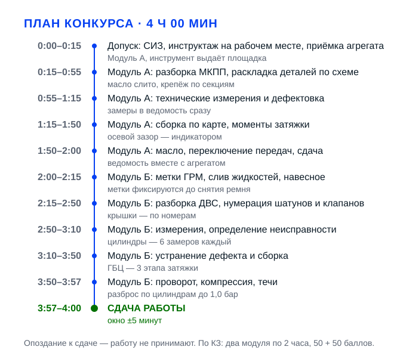
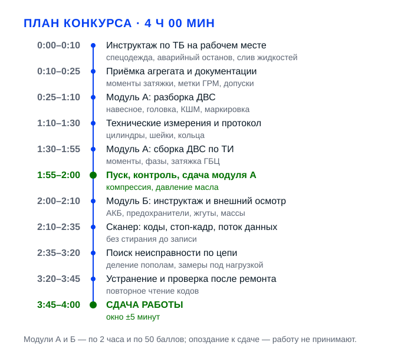
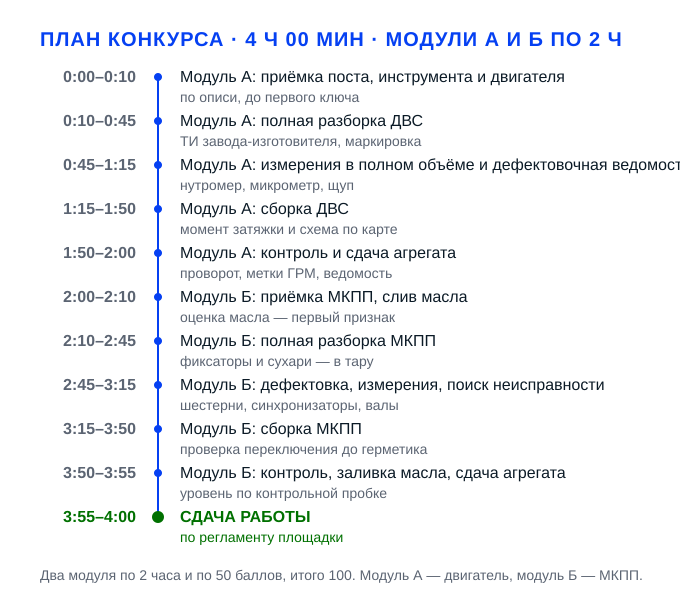

Ремонт и обслуживание автомобилей (Р,О)
Задания ниже — официальные файлы «Абилимпикс» (источник: abilympics-russia.ru), разложенные по категориям. Решения написаны по тексту задания, регламенту и критериям оценки; в них указано, что именно проверяет эксперт.
Школьник
14–16 лет, базовый уровень заданияВыдержка из официального конкурсного задания: страницы, относящиеся к категории «Школьник» (стр. 6–7 источника).
Пошаговое решение
Задание категории «Школьники» состоит из двух модулей по два часа: Модуль А «Механика МКПП» и Модуль Б «Механика ДВС», по 50 баллов каждый, всего 100. Логика в обоих одна и та же, и её надо запомнить наизусть: полная разборка агрегата по техническим требованиям завода-изготовителя, затем технические измерения, затем сборка без неисправностей. Критерий оценки измеримый, тип «И»: субъективного мнения здесь нет, есть конкретные операции, зазоры, моменты затяжки и факт работоспособности собранного агрегата. Участник берёт только спецодежду, очки, перчатки и ботинки с защитным мысом на 200 Дж, любой инструмент брать запрещено — всё выдаёт организатор, поэтому первая задача на площадке не разбирать, а принять рабочее место и разложить выданное. Вариативная часть допускает изменение внесённых неисправностей и марки агрегата, поэтому план строится по техкарте на верстаке, а не по памяти о тренировке.

Задача 1. Пройти допуск и развернуть рабочее местоМодуль А · входит в 50 баллов
До первого движения ключом рабочее место должно быть готово к работе: надета и застёгнута спецодежда, пройден инструктаж на рабочем месте, инструмент проверен и разложен по порядку разборки, документация прочитана, агрегат принят и осмотрен. Эта часть баллов размазана по всему модулю, потому что нарушения техники безопасности и потерянные шайбы эксперт фиксирует в процессе, а не в конце, и вернуть снятое потом уже нельзя.
Действие 1.1. Одеться, пройти инструктаж и осмотреть инструмент
Шаг 1.1.1
Надеваем всё, что разрешено привезти с собой: спецовку, перчатки, защитные очки и ботинки с металлическим мысом на 200 Дж. Куртку застёгиваем на все пуговицы, манжеты рукавов затягиваем у запястья, волосы убираем под головной убор, свисающие рукава и длинные волосы в этом модуле опасны по-настоящему. Очки надеваем до того, как возьмём первый ключ, и не снимаем до конца модуля: при выпрессовке подшипника съёмником и при снятии стопорных колец смазка и мелкая стружка летят в лицо. Часы, кольца и браслеты снимаем и убираем в карман — они цепляются за храповик трещотки и за кромку картера.
Комплект спецодежды с ботинками на 200 Дж прямо прописан в разделе 3.1 конкурсного задания как обязательный, и отсутствие любого элемента — это не замечание, а недопуск к работе до устранения нарушения. Очки и перчатки защищают от конкретных рисков модуля: отработка, смазка под давлением, острые кромки литого картера. Плюс есть организационный эффект: эксперт видит, что участник понимает, где находится, и дальше смотрит на его работу спокойнее.
Проверьте себя по четырём признакам: ботинки закрытые, с мысом, шнурки завязаны; очки на лице, а не на лбу; манжеты затянуты так, что рукав не сползает на кисть; на руках нет украшений. Пройдите два шага и наклонитесь — ничего не должно звенеть и свисать.
Самая частая ошибка — надеть очки «позже, когда начнётся грязь»: грязь начинается сразу, со слива масла. Вторая — прийти в кроссовках, рассчитывая, что «ботинки не проверяют»: проверяют на входе, и разговор занимает время модуля, а не перерыва. Третья — оставить кольцо, потому что оно не мешает: оно мешает ровно в тот момент, когда рука уходит в картер.
Эксперт фиксирует комплектность СИЗ до старта, при входе на площадку, и отдельно смотрит, остаются ли очки на месте во время работы с съёмником и молотком.
Шаг 1.1.2
Проходим инструктаж на рабочем месте: слушаем, где расположены кнопка аварийного останова стенда, огнетушитель, аптечка и куда складывать отработанное масло. Затем осматриваем выданный инструмент, не начиная работу: у гаечных ключей губки должны быть параллельны и без закатанных краёв, у молотка — боёк слегка выпуклый, без наклёпа и трещин, рукоятка расклинена и гладкая, у зубила длина не меньше 150 мм и нет заусенцев, у переносной лампы цела защитная сетка и изоляция шнура. Трещотку прокручиваем холостым ходом, головки пересчитываем и сверяем с техкартой: на МКПП нужны 8, 10, 12, 13, 17 и 19.
Требования охраны труда в разделе 6 задания перечисляют именно эти признаки исправности инструмента, и там же сказано: пользоваться инструментом, обращению с которым участник не обучен, запрещено. Практическая сторона важнее формальной: треснувший ключ срывается с гайки и разбивает knuckles, а смятые губки слизывают грани болта крепления крышки подшипников, после чего вал уже не выпрессовать штатным способом и модуль останавливается.
Инструмент разложен и пересчитан, неисправное отложено в сторону, а не возвращено в ящик. Проверьте руками: ключ садится на гайку без люфта и не качается; молоток при постукивании по деревяшке даёт звонкий, а не дребезжащий звук; переносная лампа горит ровно, без мигания.
Типичная ошибка — начать отворачивать крепёж первой попавшейся головкой «на глаз»: головка на 13 на гайке на 12 проворачивается и слизывает грани, а таких гаек десятки. Вторая ошибка — смолчать про треснувшую рукоятку молотка: правило требует сообщить эксперту и не начинать работу, а травмоопасный инструмент снимает баллы за охрану труда.
Эксперт обходит рабочие места в первые пять минут и смотрит, осмотрен ли инструмент до начала работы, отложено ли неисправное и сообщено ли о нём, а также остаются ли очки на месте при работе.
Шаг 1.1.3
Организуем верстак под порядок разборки, а не под удобство: справа от тисков кладём лоток под крепёж, разбитый на секции по узлам — отдельно болты картера, отдельно крепёж крышки подшипников, отдельно стопорные кольца; в центре оставляем свободное поле под валы; слева ставим лоток под мелкие детали синхронизаторов и пружины. Под рукой держим ветошь, ёмкость для слива масла не меньше четырёх литров и магнитную тарелку для шайб. Мерительный инструмент — штангенциркуль, микрометр, нутромер, индикатор на стойке — выкладываем отдельно, на чистую салфетку, чтобы он не лежал в смазке.
Порядок на верстаке в этом задании не про аккуратность, а про учёт: результат модуля — собранный агрегат без неисправностей, и любая оставшаяся лишняя шайба означает, что узел собран неверно. Разложенный по секциям крепёж позволяет за минуту проверить, всё ли вернулось на место, а меритель на чистой салфетке не врёт: микрометр, полежавший в масле, зажимает губки и занижает размер на сотые.
На верстаке нет ничего лишнего, проход шириной 1,5 м свободен, лотки подписаны или хотя бы различимы по месту. Проверка простая: закройте глаза и вспомните, куда положите стопорное кольцо — если ответа нет, порядок ещё не сложился.
Классика — ссыпать весь крепёж в одну банку: болты картера и болты крышки подшипников отличаются по длине на несколько миллиметров, при сборке длинный болт упирается в вал и срывает резьбу в алюминии. Вторая ошибка — держать меритель на краю верстака, откуда он падает при первом же ударе съёмником.
Эксперт оценивает организацию рабочего места в начале модуля и возвращается к этому при сборке: смотрит, собирается ли крепёж из лотков или ищется по верстаку.
Действие 1.2. Принять агрегат и разобрать документацию
Шаг 1.2.1
Сверяем агрегат с заданием: марку, номер, комплектность. Убеждаемся, что корпус не имеет сквозных трещин, картер сухой или подтёкший (это тоже информация), рычаг переключения ходит, валы проворачиваются за первичный вал рукой. Ставим агрегат на стенд-кантователь или на верстак так, чтобы сливная пробка была внизу и под неё свободно входила ёмкость. Подписываем бирку с номером рабочего места и кладём её на видное место — по ней потом сдаётся работа.
Агрегат принимается до разборки, потому что после разборки доказать, что трещина была, а не появилась, невозможно: в дефектовочной ведомости это уже будет ваша неисправность. Проворачивание валов до разборки даёт первую диагностическую информацию бесплатно — если первичный вал не вращается, внутри уже что-то заклинило, и дальше вы разбираете не «учебную» коробку, а конкретную неисправность, которую надо будет описать.
Номер на бирке совпадает с номером в задании, ёмкость стоит под пробкой и не подтекает, агрегат закреплён так, что при отворачивании болта он не провернётся. Покрутите первичный вал: он должен вращаться с заметным сопротивлением, но без заеданий и хруста.
Ошибка — сразу лезть разбирать и только потом обнаружить, что поддон пробит или корпус треснут: время уйдёт, а доказать происхождение дефекта уже нельзя, он попадёт в вашу ведомость. Вторая ошибка — закрепить агрегат «на весу» на краю верстака: при отворачивании прикипевшего болта он проворачивается и падает.
Эксперт смотрит, осмотрен ли агрегат до разборки и зафиксирован ли он на стенде: падение агрегата — это и травмоопасно, и сразу потеря баллов. Он же сверяет номер на бирке с номером в задании.
Шаг 1.2.2
Читаем технологическую карту целиком, до первого ключа, и выписываем на лист три вещи: порядок разборки с моментами затяжки, перечень обязательных измерений с допусками и порядок сборки с регулировками. Отдельно отмечаем, какие крепления одноразовые — болты ГБЦ, стопорные кольца, прокладки — их нельзя ставить повторно. Если в карте указана марка агрегата, отличная от той, что стоит на стенде, сразу зовём эксперта и уточняем: вариативная часть задания допускает замену марки, и работать по чужой карте означает собирать по неверным моментам.
Два модуля по два часа — это очень плотно: на МКПП полная разборка, измерения и сборка укладываются только при работе по заранее понятому плану. Кроме того, оценка измеримая: эксперт сверяет результат с техническими требованиями завода-изготовителя, и если момент затяжки взят «на глаз», а по карте он нормирован, операция считается невыполненной независимо от того, что агрегат крутится.
На листе есть три списка, и по ним можно, не заглядывая в карту, назвать: с чего начинается разборка, что и чем измеряется, в какой последовательности затягивается крепёж. Если хотя бы один пункт приходится искать заново — карта прочитана не до конца.
Типичная ошибка — читать карту по ходу работы, открывая нужную страницу мокрыми руками: страницы слипаются, порядок теряется, и на середине сборки выясняется, что стопорное кольцо поставили не той стороной. Вторая — пропустить сноску о одноразовом крепеже и затянуть болты ГБЦ повторно: они вытянуты и момент не держат.
Эксперт подходит в первые десять минут и просит показать, где в карте указан допуск на измеряемый параметр: умение читать документацию входит в требования к квалификации категории «Школьники».
Шаг 1.2.3
Готовим дефектовочную ведомость: лист с колонками «деталь», «измеренный размер», «допуск по карте», «заключение — годна или замене». Заранее вписываем туда все позиции, которые будем измерять, чтобы в процессе только ставить цифры. Рядом кладём чистый лист для схемы раскладки деталей: валы, синхронизаторы, подшипники раскладываются в том порядке, в котором снимались, слева направо, и на схеме отмечается, откуда какая шайба.
Технические измерения — обязательный этап: оценивается цифра плюс сравнение с допуском. Ведомость, заполненная по ходу, превращает эту работу в проверяемый документ; ведомость, которую заполняют в конце по памяти, содержит придуманные числа, и эксперт видит это по несовпадению со своими замерами. Схема раскладки экономит время на сборке: регулировочные шайбы у каждого вала свои, и перепутанная шайба даёт неверный осевой зазор.
В ведомости есть все строки, которые потом заполнятся, и пустая графа под фактический размер. На схеме отмечено не меньше пяти позиций. Проверьте, что ручка пишет на листе, лежащем на верстаке, а не только на весу.
Ошибка — измерять и не записывать, надеясь запомнить: к моменту сборки в памяти останется одно число из шести, а остальные будут восстановлены «примерно». Вторая — ссыпать регулировочные шайбы в общий лоток: при сборке они встанут не на свои места, осевой зазор вала уйдёт из допуска, и передача начнёт вылетать.
Эксперт смотрит на ведомость в середине модуля и сверяет два-три ваших числа со своими контрольными замерами того же узла, а также спрашивает, где в карте указан допуск на этот параметр.
Задача 2. Модуль А: разобрать МКПП до последней шайбыМодуль А · 50 баллов
Разборка — это не «раскидать», а пройти агрегат по порядку карты, сохранив информацию: откуда какая шайба, в каком состоянии каждая пара шестерён, что уже негодно. На разборку вместе с дефектовкой уходит примерно половина двухчасового модуля, и темп здесь важнее скорости: одна перепутанная регулировочная шайба отнимает больше времени на сборке, чем экономит быстрая разборка. Заканчивается задача тем, что все детали лежат по группам, промаркированы и готовы к измерению.
Действие 2.1. Слить масло и снять наружные узлы
Шаг 2.1.1
Ставим ёмкость под сливную пробку, берём ключ по карте — обычно на 17 — и отворачиваем пробку на пол-оборота, давая маслу выйти по резьбе, а не сорваться потоком в сторону. Ждём, пока стечёт: на переднеприводной коробке это три-четыре минуты, полный объём около трёх литров. Пробку не бросаем в лоток, а кладём на ветошь магнитом вверх: на нём собирается металлическая пыль, и по ней видно состояние агрегата. Заливную пробку и сапун выворачиваем и продуваем, чтобы при сборке не создавать давление в картере.
Масло сливается первым делом, потому что при разборке картер наклоняют и переворачивают, и оставшееся масло оказывается на верстаке, на спецодежде и на деталях, которые потом надо осматривать на предмет износа. Пробка с магнитом — бесплатный диагностический прибор: крупная стружка и «шуба» из металлической пыли говорят об износе подшипников и шестерён раньше, чем вы разберёте валы, и это можно сразу внести в дефектовочную ведомость.
Из пробки течёт тонкой струйкой, затем капает; после слива в ёмкости около трёх литров тёмного масла без эмульсии. На магните пробки — мелкая пыль, а не крупные лепестки. Если масло мутное и серое, это следы воды или эмульсии, отметьте это в ведомости.
Отвернуть пробку сразу на два-три оборота: горячее масло бьёт струёй мимо ёмкости, и верстак становится скользким на весь модуль. Вторая ошибка — потерять медное или алюминиевое уплотнительное кольцо пробки: при сборке пробка потечёт, и на проверке герметичности вы получите замечание вместо балла.
Эксперт смотрит, слито ли масло до разборки и осмотрена ли пробка: умение читать состояние агрегата по продуктам износа отличает осмысленную работу от механической.
Шаг 2.1.2
Снимаем навесное, не отводя детали в сторону и не подвешивая их на трубках: рабочий цилиндр сцепления отворачиваем двумя болтами и снимаем вместе с кронштейном, датчик заднего хода выворачиваем ключом на 22 и кладём в лоток, рычаг переключения и тяги отсоединяем, предварительно отметив маркером положение рычага относительно вала. Тяги и пыльники складываем в отдельный пакет, крепёж — в секцию «наружное». Каждую снятую деталь осматриваем на месте: трещины на кронштейне, порванный пыльник, погнутая тяга — всё это идёт в ведомость.
Наружные узлы снимаются до разборки картера, потому что потом агрегат переворачивают и они мешают ставить его на стенд, а выступающий рычаг цепляется за всё подряд. Маркировка положения рычага нужна для сборки: механизм переключения регулируется по положению, и если рычаг встанет на шлицы на зуб в сторону, передачи будут включаться с ударом или не до конца, а это прямая потеря баллов за работоспособность собранного агрегата.
На агрегате не осталось навесного, все отверстия закрыты пробками или заглушками, крепёж пересчитан и лежит по секциям. Потяните за тягу: она должна сниматься без удара, а не выходить с мясом вместе с пыльником.
Подвесить рабочий цилиндр на трубке «чтобы не мешал»: трубка ломается у штуцера, и модуль останавливается на поиске замены. Вторая ошибка — снимать рычаг без метки: при сборке он встанет произвольно, и вместо проверки переключения вы будете регулировать механизм наугад.
Эксперт проверяет, промаркированы ли тяги и рычаг, и отдельно смотрит на сохранность трубок и пыльников — это оценивается как культура разборки. Отдельно отмечается, не подвешены ли узлы на трубках.
Шаг 2.1.3
Снимаем кожух сцепления: отворачиваем шесть болтов крепления корзины по схеме «через один», по одному обороту за проход, чтобы диафрагменная пружина разгружалась равномерно, и только после этого снимаем корзину и диск. Первичный вал при отворачивании фиксируем от проворота монтажной лопаткой или специальной пластиной, а не пальцем в шлицах. Снятые диск и корзину укладываем рабочей поверхностью вверх на чистую салфетку, а не на верстак.
Корзину нельзя отворачивать подряд по кругу: пружина нагружена, и последний болт срывается с усилием и уходит вбок, ударяя по руке. Фиксация вала нужна потому, что при провороте болты срывают шлицы первичного вала, а вал вы потом измеряете и по нему собираете узел. Диск и корзина укладываются рабочей поверхностью вверх, чтобы не занести на фрикционные накладки смазку и стружку: диск с замасленными накладками потом не отличить от изношенного.
Корзина снята без перекоса, лепестки пружины целые и на одном уровне, на накладках диска нет масляных пятен и задиров. Болты крепления пересчитаны — их шесть, все в лотке. Шлицы первичного вала осмотрены: смятых зубьев нет.
Отворачивать болты корзины по кругу и до конца: корзина перекашивается, лепестки пружины деформируются, и узел уже не собрать правильно. Вторая ошибка — уронить диск на пол или положить его на промасленный верстак: фрикционные накладки впитывают масло, и диск идёт в брак по вашей вине.
Эксперт смотрит именно на последовательность отворачивания корзины и на то, как участник обращается с диском: это индикатор того, работал ли он с агрегатом раньше.
Действие 2.2. Вскрыть картер и извлечь валы
Шаг 2.2.1
Переворачиваем агрегат на стенде и отворачиваем крепёж крышки подшипников: сначала проходим все болты на четверть оборота в последовательности от середины к краям, затем отворачиваем полностью. Крышку не поддеваем отвёрткой в стык — бьём по ней медным или резиновым молотком через деревянную проставку, пока она не сойдёт со штифтов. Под крышкой лежат регулировочные шайбы и стопорные кольца: каждую шайбу снимаем отдельно и сразу помечаем, к какому подшипнику она относится, — мелом на карте или раскладкой на схеме.
Крышка подшипников притянута с натягом на штифтах, и при отворачивании подряд крышку ведёт винтом, а штифты мнут посадочные отверстия. Поддевание отвёрткой оставляет забоины на привалочной плоскости, по которой наносится герметик, и через забоину масло потечёт. Регулировочные шайбы индивидуальны: они задают осевой зазор валов, и перепутанная шайба выводит зазор из допуска, после чего передача включается с хрустом.
Крышка сошла без перекоса, привалочная плоскость чистая, без забоин и следов отвёртки. Шайбы разложены по подшипникам и пересчитаны, стопорные кольца на месте и не разогнуты. Проверьте пальцем кромку посадочного отверстия под штифт — она не должна быть разбита.
Поддеть крышку отвёрткой и снять её с перекосом: привалочная плоскость получает забоины, и потом герметик не держит — масло потечёт по стыку, а это замечание на проверке. Вторая, более дорогая ошибка — ссыпать шайбы в общий лоток: при сборке осевой зазор вала встанет не по карте, и модуль закончится разборкой заново.
Эксперт осматривает привалочную плоскость после снятия крышки: забоины и следы отвёртки видны сразу и снимают баллы за соблюдение технологии, и он же проверяет, разложены ли шайбы по подшипникам.
Шаг 2.2.2
Снимаем стопорные кольца подшипников специальными клещами, разводя усики ровно настолько, чтобы кольцо сошло с канавки, и укладываем их на схему по местам. Валы выпрессовываем трёхлапым съёмником, зацепившись за внутреннее кольцо подшипника, а не за шестерню: лапы ставим равномерно через 120 градусов, винт подводим до касания и ведём плавно, без ударов. Если вал не идёт, не бьём молотком по торцу — прогреваем картер в зоне посадки феном до 80–90 градусов и повторяем, усилие при этом падает почти вдвое.
Стопорное кольцо, снятое с перекосом, разгибается и теряет упругость, а повторно разогнутое кольцо держит плохо — подшипник начинает гулять в осевом направлении, и это уже неисправность, которую вы сами и внесли. Выпрессовка за шестерню гнёт зубья и сминает шейку вала, а удар молотком по торцу вала сминает центровое отверстие, после чего вал нельзя проверить на биение индикатором — обязательное измерение станет невыполнимым.
Валы вышли без задиров на посадочных поверхностях, кольца целые и не разогнуты, на картере нет трещин вокруг посадочных отверстий. Прокрутите каждый подшипник в руках: он должен вращаться с лёгким гулом, без заеданий и люфта по наружному кольцу.
Бить молотком по торцу вала через выколотку: шейка и центровое отверстие мнутся, биение потом не измерить, а эксперт видит свежие следы удара. Вторая ошибка — тянуть съёмником за шестерню: зубья гнутся, и пара шестерён, которая была годной, становится браком по вашей вине.
Эксперт подходит в момент выпрессовки: смотрит, за что зацеплен съёмник и есть ли удары по валу. Это одна из самых показательных операций модуля. Он же смотрит, не осталось ли на валу следов удара.
Шаг 2.2.3
Извлекаем дифференциал вместе с подшипниками, снимаем его осторожно, поддерживая двумя руками: он тяжёлый и при падении бьёт по картеру. Достаём магнитные уловители из картера, собираем с них металлическую пыль на салфетку, чтобы было видно, что именно изнашивалось. Картер промываем промывочной жидкостью или керосином над лотком, продуваем сжатым воздухом и обтираем, каналы смазки продуваем отдельно: в них остаётся грязь, которая при сборке пойдёт в подшипники.
Дифференциал снимается до полной разборки валов, потому что иначе он мешает вынимать вторичный вал, иначе валы не вынуть, а сателлиты гнутся. Магнитные уловители — второй бесплатный диагност после сливной пробки: количество и характер пыли показывают, изнашивались ли подшипники или шестерни. Промывка обязательна: старая грязь попадёт между кольцами и подшипниками, и агрегат выйдет из строя сразу после сборки.
Картер чистый и сухой, на стенках нет остатков герметика и масляного налёта, каналы продуты и продуваются насквозь. Магнит протёрт, пыль собрана на салфетку, детали дифференциала разложены и пересчитаны: два сателлита, две полуосевые шестерни, ось, шайбы.
Промыть картер «на глаз», не продув каналы: грязь остаётся в канале смазки, и после сборки подшипник идёт на сухую в первые секунды работы. Вторая ошибка — оставить магнит грязным или потерять его: продукт износа снова пойдёт в масло, а при сдаче агрегата это замечание по комплектности.
Эксперт смотрит на чистоту картера перед сборкой и на то, разложен ли дифференциал: сборка узла из кучи деталей без порядка почти всегда заканчивается ошибкой.
Действие 2.3. Разобрать валы и синхронизаторы
Шаг 2.3.1
Закрепляем вторичный вал в тисках через мягкие губки или алюминиевые накладки и разбираем по порядку: снимаем стопорное кольцо, затем шестерни и синхронизаторы съёмником, каждый раз записывая на схеме, какая шестерня откуда снята и какой стороной стояла. Шестерни укладываем зубьями вверх в том порядке, в котором снимались, слева направо. Подшипники снимаем съёмником за внутреннее кольцо, а не выбиваем; после снятия промываем и проверяем на люфт.
Шестерни на валу стоят в строго определённом порядке, и перепутать две соседние проще, чем кажется: внешне они похожи, отличаются числом зубьев и диаметром. Ошибка в порядке обнаруживается только на сборке, когда вал не собирается до конца, и стоит всего остатка модуля. Съёмник вместо выбивания нужен потому, что обойму подшипника нельзя деформировать: смятая обойма не садится на вал с нужным натягом, и подшипник, который был годным, идёт в брак.
Все шестерни разложены по порядку и пересчитаны, стопорные кольца и полукольца целые, на шейках вала нет задиров и следов от лап съёмника. Проверьте каждую шестерню рукой: она должна вращаться на иглах свободно, без заедания в одном положении.
Разложить шестерни кучей «потом разберусь»: к сборке порядок забыт, и вал собирается с перестановкой двух шестерён, что даёт невозможность включить одну из передач. Вторая ошибка — выбивать подшипник через выколотку: обойма деформируется, и на сборке подшипник садится с зазором, который вы же и внесли в агрегат.
Эксперт смотрит на схему раскладки и на способ снятия подшипников: работа съёмником вместо молотка — прямой признак подготовки. Он же проверяет, не осталось ли на шейках вала следов от лап съёмника.
Шаг 2.3.2
Разбираем синхронизаторы на составляющие: ступицу, муфту, три сухаря с пружинами и блокирующие кольца. Пружины снимаем, поддевая отвёрткой и придерживая пальцем, чтобы они не улетели через верстак. Каждое блокирующее кольцо прикладываем к своему конусу шестерни и проверяем зазор щупом между торцом кольца и торцом зубчатого венца — значение берём из карты, обычно это не меньше половины миллиметра. Детали каждого синхронизатора складываем отдельно, в свою секцию, и подписываем номер передачи.
Синхронизатор — самая мелкая часть узла: от состояния блокирующего кольца зависит, будет ли передача включаться без хруста. Зазор между кольцом и венцом — это и есть износ конуса; когда он выбран до нуля, кольцо садится на металл, синхронизация пропадает, и передача включается с ударом. Именно этот зазор и есть то техническое измерение, которое требуется по заданию, поэтому его надо не просто увидеть, а записать цифрой в ведомость.
Зазор измерен щупом на каждом кольце и записан, сухари целые, пружины не просевшие и одинаковой длины, на конусах колец нет глубоких борозд и цветов побежалости. Соберите синхронизатор в руках: муфта должна двигаться по ступице от руки, без закусывания, и возвращаться.
Проверить зазор «на глаз» и не записать: в ведомости появится пробел, а эксперт сверит именно эту позицию, потому что она ключевая для МКПП. Вторая ошибка — потерять сухарь или пружину: синхронизатор без одного сухаря перекашивается, и передача включается через раз.
Эксперт проверяет, измерен ли зазор в синхронизаторе щупом и внесён ли он в ведомость: это то самое «техническое измерение», которое задание требует отдельным пунктом.
Шаг 2.3.3
Раскладываем все детали по группам на схеме: валы, шестерни в порядке съёма, синхронизаторы, подшипники, крепёж, шайбы и кольца. Подписываем каждую группу, если есть маркер, и накрываем чистой салфеткой от пыли и случайных капель. Отдельно откладываем детали с явными дефектами — сколы, задиры, трещины — в лоток «под замену», чтобы они не попали обратно в сборку по невнимательности.
Между разборкой и сборкой проходит время измерений, и за эти двадцать-тридцать минут на деталях оседает пыль, а на верстаке появляются новые предметы. Накрытая салфеткой раскладка сохраняет и чистоту, и порядок, а отдельный лоток «под замену» защищает от самой обидной ошибки — поставить обратно деталь, которую вы уже признали негодной, но не убрали с глаз.
Все группы деталей на месте и подписаны, лоток «под замену» не путается с остальными, салфетка накрывает раскладку целиком. Пересчитайте крепёж: количество болтов и гаек должно совпадать с тем, что было снято.
Оставить детали открытыми на верстаке на всё время измерений: стружка от обработки соседнего узла и капли масла попадают на подшипники. Вторая ошибка — держать дефектную деталь в общей куче: при сборке рука сама берёт то, что ближе, и в агрегат возвращается заведомо негодный узел.
Эксперт оценивает порядок на верстаке к моменту начала сборки и проверяет, отделены ли дефектные детали от годных, накрыта ли раскладка салфеткой и не лежит ли крепёж в одном лотке с шайбами.
Задача 3. Модуль А: измерить, собрать и проверить МКППМодуль А · 50 баллов
Измерения превращают осмотр в дефектовку: после этой части у вас на руках цифры и заключение по каждой детали, а не общее впечатление «вроде живое». Дальше сборка идёт по карте, с моментами затяжки и регулировками, и заканчивается проверкой на работоспособность: валы должны вращаться, все передачи — включаться, задняя — только через блокировку, стыки — не подтекать. Именно этот этап даёт основную часть измеримых баллов модуля.
Действие 3.1. Провести измерения и заполнить ведомость
Шаг 3.1.1
Осматриваем каждую пару шестерён по порядку: на рабочей стороне зубьев не должно быть сколов, выкрашивания и ступенчатого износа, а на торцах зубьев венца синхронизатора — смятия и заострения. Пятно контакта смотрим на зубьях: у неизношенной пары оно расположено по центру боковой поверхности и занимает примерно две трети высоты зуба, у изношенной — смещено к головке или к ножке. Вилки переключения проверяем на износ лапок и на погнутость: прикладываем к плите и смотрим на просвет.
Визуальный осмотр идёт первым, потому что он бесплатный и быстрый: явный скол на зубе сразу выводит пару из строя, и измерять её уже незачем. Пятно контакта показывает, правильно ли пара работала: смещённое пятно говорит о перекосе вала или о неверном осевом зазоре, а это уже не дефект отдельной детали, а причина, которую надо устранить при сборке. Износ лапок вилки даёт неполное включение — передача выбивается под нагрузкой, и на проверке это слышно.
По каждой паре есть заключение: годна, износ, скол. Пятно контакта описано словами «по центру» или «смещено к головке». Вилка, положенная на плиту, не качается, лапки одинаковой толщины, износ не больше значения из карты.
Смотреть только на «страшные» дефекты и пропускать ступенчатый износ: внешне зуб целый, но по высоте сточен, и пара шумит под нагрузкой. Вторая ошибка — не проверить вилку на плите: погнутая вилка при сборке не даёт муфте дойти до конца, и передача включается не полностью, хотя все детали «годные».
Эксперт подходит во время осмотра и просит показать пятно контакта на одной паре: умение читать следы износа — ключевой навык дефектовки. Если пятно контакта описано неверно, вывод по всей дефектовке считается неубедительным.
Шаг 3.1.2
Измеряем микрометром шейки валов под подшипники и под шестерни в двух поясах — у торца и посередине, чтобы поймать конусность, и нутромером посадочные отверстия в картере в двух взаимно перпендикулярных направлениях. Каждое значение записываем в ведомость сразу, карандашом, с указанием места замера. Штангенциркулем проверяем толщину регулировочных шайб и диаметр стопорных колец. Перед замером инструмент протираем и проверяем на нуле: микрометр сводим губками и смотрим, стоит ли стрелка на нуле.
Измерение в двух поясах и двух направлениях — это единственный способ увидеть овальность и конусность, которые глазом не видны, но определяют натяг подшипника. Запись сразу, а не «потом», нужна потому, что замеров набирается больше тридцати, и по памяти их не восстановить. Проверка инструмента на нуле защищает от систематической ошибки: сбитый на сотку микрометр даёт брак всем деталям сразу, и вы забракуете годный вал.
В ведомости по каждой шейке два числа, по каждому отверстию — два, и разница между ними не превышает допуска на овальность из карты. Микрометр на нуле, нутромер оттарирован по установочному кольцу. Сверьте одно и то же место двумя инструментами: расхождение больше сотки означает, что один из них врёт.
Мерить в одном поясе и по одному направлению: овальность остаётся незамеченной, подшипник садится с зазором, и после сборки вал гуляет. Вторая ошибка — крутить микрометр за корпус, а не за трещотку: усилие получается разным, и разброс собственных замеров превышает допуск.
Эксперт смотрит на технику замера — держит ли участник микрометр за корпус, пользуется ли трещоткой, проверяет ли инструмент на нуле. Это оценивается как отдельный навык.
Шаг 3.1.3
Проверяем осевой зазор валов: собираем вал с подшипниками и шайбами в картер без крышки, ставим индикатор на стойке ножкой в торец вала, отжимаем вал вниз монтажкой и обнуляем индикатор, затем отжимаем вверх и читаем показание. Сравниваем с допуском из карты — для учебной коробки это обычно 0,10–0,25 мм. Одновременно смотрим радиальный люфт подшипников и зазор в зацеплении. По результатам заполняем ведомость и формулируем вывод: какие детали годны, какие под замену, какая неисправность внесена в агрегат.
Осевой зазор — главная регулировка МКПП, и она проверяется только индикатором, на ощупь её не поймать. Слишком малый зазор ведёт к нагреву и задиру торцов, слишком большой — к стуку и самовыключению передач; в обоих случаях агрегат собран, но неисправен, а результат модуля — агрегат без неисправностей. Вывод в ведомости нужен потому, что задание требует определить неисправность, а не просто перечислить изношенные детали.
Индикатор показывает значение в пределах допуска, стрелка при отжатии вверх и вниз возвращается в исходное положение. В ведомости есть итоговая строка: «внесённая неисправность — износ ...», и она согласуется с измерениями, а не противоречит им.
Мерить зазор, покачивая вал рукой: усилие руки непостоянно, и результат отличается от истинного в разы. Вторая ошибка — записать вывод «агрегат исправен», не сверив цифры с допуском: эксперт сравнивает вашу ведомость со своими замерами, и расхождение по ключевому параметру стоит баллов сразу за измерения и за дефектовку.
Эксперт проверяет установку индикатора и способ отжатия вала, а затем сверяет итоговый вывод ведомости с фактическим состоянием агрегата и проверяет, обнулён ли индикатор перед отжатием вала вниз.
Действие 3.2. Собрать агрегат по карте
Шаг 3.2.1
Ставим подшипники на валы с натягом: нагрев в масляной ванне до 80–90 градусов или запрессовка оправкой, передающей усилие только на внутреннее кольцо. Затем укладываем валы в картер, следя, чтобы шайбы встали на свои места, и заводим стопорные кольца клещами до щелчка в канавку. Вторичный вал заводим последним, совмещая шестерни с шестернями первичного вала, без постукивания молотком по торцу.
Подшипник, запрессованный усилием через наружное кольцо, передаёт нагрузку через тела качения и оставляет вмятины на дорожках — такой подшипник шумит с первых минут и считается испорченным. Нагрев даёт нужный натяг без усилия: кольцо садится от руки, а после остывания держит как надо. Стопорное кольцо, не дошедшее до канавки, при работе сходит и даёт осевое перемещение вала, то есть ту самую неисправность, которую вы устраняли.
Кольца сидят в канавках по всему периметру, валы проворачиваются от руки без заеданий, шайбы не выдавлены. Прокрутите вал и прислушайтесь: ровный шум допустим, щелчок или скрип — нет. Шайбы на своих местах, ни одна не выдавлена кромкой подшипника.
Запрессовать подшипник ударом молотка через трубу, упирающуюся в наружное кольцо: дорожки получают вмятины, и подшипник гудит. Вторая ошибка — не довести стопорное кольцо до канавки: при первом же включении передачи вал сдвигается, и узел разбирается сам.
Эксперт смотрит на способ установки подшипников: нагрев и оправка по внутреннему кольцу — правильный признак, удары по наружному кольцу видны и запоминаются.
Шаг 3.2.2
Собираем вторичный вал в обратном порядке: шестерни и синхронизаторы надеваем в той последовательности, что записана на схеме, ступицы муфт ориентируем так, чтобы пазы под сухари совпали, сухари ставим с пружинами и проверяем, что муфта ходит по ступице от руки. Каждый конус синхронизатора и шейку перед надеванием смазываем трансмиссионным маслом тонким слоем — не литолом и не солидолом. Ступицы запрессовываем оправкой, а не молотком, и сразу ставим стопорные полукольца.
Синхронизатор работает только при совпадении пазов: если ступица повёрнута, сухари не встанут, а муфта будет закусывать — передача включится через раз или не включится вовсе. Смазка маслом, а не консистентной смазкой, нужна потому, что густая смазка забивает каналы конуса и мешает кольцу притормаживать шестерню, из-за чего появляется хруст при включении. Полукольца фиксируют ступицу от осевого смещения, и без них вся сборка вала теряет смысл.
Муфта каждого синхронизатора перемещается по ступице от руки, с усилием, но без закусывания, и возвращается в нейтраль. Сухари на месте и подпружинены, полукольца сидят в канавках. Собранный вал вращается в тисках ровно, без биения шестерён.
Поставить ступицу наоборот: пазы не совпадают, сухари выпадают при первом включении, и синхронизатор разваливается внутри картера. Вторая ошибка — густо смазать конусы: кольцо не притормаживает шестерню, и при проверке переключения слышен хруст, за который снимают баллы за работоспособность.
Эксперт прокручивает синхронизатор в руках участника и смотрит на ориентацию ступицы: это операция, в которой ошибка не видна до первой проверки переключения.
Шаг 3.2.3
Наносим герметик тонким ровным слоем на привалочную плоскость картера, обезжиренную и высушенную, ставим крышку подшипников на штифты и затягиваем болты в последовательности от середины к краям в два прохода: сначала все на треть момента, затем окончательно моментом из карты, обычно 2,0–2,5 кгс·м. Момент контролируем динамометрическим ключом, а не «по ощущению». Затем ставим механизм переключения, совместив метки на рычаге, и проверяем включение передач вручную до установки на стенд.
Герметик наносится тонким слоем, потому что излишек выдавливается внутрь и попадает в масло, забивая каналы, а недостаток даёт течь по стыку. Затяжка от середины к краям нужна, чтобы крышка не повела: при затяжке от краёв её выгибает волной, и стык течёт именно в середине. Динамометрический ключ — единственный способ выполнить требование карты: перетянутый болт в алюминиевом картере вытягивает резьбу, и повторно его уже не затянуть.
Стык ровный, герметик выступает по всему периметру узкой непрерывной полоской, болты затянуты с моментом из карты и все до одного. Рычаг переключения совпадает с меткой, каждая передача включается от руки с лёгким усилием и фиксируется.
Нанести герметик «пожирнее, чтобы не текло»: излишек выдавливается внутрь, попадает в маслоприёмник и на синхронизаторы, и агрегат после сборки хрустит. Вторая ошибка — тянуть болты без динамометрического ключа: два-три болта в алюминии срываются, и крышку уже не прижать равномерно.
Эксперт проверяет затяжку своим ключом на двух-трёх болтах и осматривает периметр стыка: равномерность затяжки и отсутствие выдавленного внутрь герметика видны сразу.
Действие 3.3. Залить масло, проверить и сдать
Шаг 3.3.1
Заливаем трансмиссионное масло до нижней кромки заливного отверстия: наклоняем агрегат, заливаем примерно три литра, даём стечь две-три минуты и доливаем, пока масло не пойдёт через край ровной струйкой. Заливную пробку заворачиваем с уплотнительным кольцом, сапун ставим на место. Протираем картер насухо, чтобы потом было видно свежие подтёки, и оставляем агрегат на пять минут.
Уровень по кромке заливного отверстия — это заводской способ, он не требует щупа и не даёт ошибиться. Недолив опаснее перелива: при недостатке масла первыми страдают подшипники верхнего вала, и агрегат, который вы только что собрали, выходит из строя на проверке. Протирание насухо нужно для контроля: на грязном картере свежий подтёк не отличить от старого, а герметичность стыка — обязательный пункт проверки.
Масло стоит у кромки отверстия, пробка завёрнута с кольцом, на картере нет свежих капель через пять минут после заливки. Наклоните агрегат на десять градусов и посмотрите на стык — подтёк проявится сразу.
Залить «на глаз» меньше нормы: на проверке подшипник гудит, и эксперт фиксирует неисправность в собранном агрегате. Вторая ошибка — завернуть пробку без уплотнительного кольца или перетянуть её: пробка течёт, и на сдаче это замечание по герметичности.
Эксперт проверяет уровень и наличие уплотнительного кольца на пробке, а также отсутствие подтёков на прогретом агрегате. Отдельно он смотрит, протёрт ли картер насухо: на грязной поверхности свежий подтёк не виден.
Шаг 3.3.2
Проверяем переключение по порядку: первая, вторая, третья, четвёртая, пятая — каждая должна включаться от руки с чётким ощущением фиксации и без хруста, при провороте вала рукой. Заднюю проверяем отдельно: она должна включаться только после полной остановки валов и только через блокировку, а при попытке включить её на ходу — не идти. Затем прокручиваем вал десять-пятнадцать оборотов в каждую сторону и слушаем: ровный шум допустим, вой, щелчки и скрежет — нет.
Проверка переключения на месте — это то, что эксперт делает первым при приёмке, и то, что даёт измеримые баллы за работоспособность. Хруст означает, что синхронизатор не работает: либо зазор выбран, либо ступица стоит неверно, либо кольцо смазано густой смазкой. Проверка задней через блокировку отдельная потому, что блокировочное устройство — обязательный элемент безопасности, и его отсутствие или неправильная сборка видны только при этой проверке.
Все пять передач включаются от руки без хруста, фиксация ощущается, самопроизвольного выключения при покачивании вала нет. Задняя включается только через блокировку. При прокрутке — ровный шум без щелчков.
Проверить две передачи и объявить узел годным: хруст на третьей обнаруживается на приёмке, и балл уходит вместе с доверием к остальной работе. Вторая ошибка — включить заднюю на вращающемся валу, чтобы «посмотреть»: сминаются зубья, и вы вносите новую неисправность в только что собранный агрегат.
Эксперт сам переключает передачи на собранном агрегате и слушает, есть ли хруст: это финальная и самая весомая проверка модуля. Он переключает передачи и на слух, при выключенном стенде, отмечая хруст на любой из них.
Шаг 3.3.3
Убираем рабочее место: сливаем отработанное масло в закрытую ёмкость, ветошь — в металлический ящик, инструмент протираем и укладываем в ящик по местам, меритель — в футляр. Сдаём агрегат эксперту вместе с дефектовочной ведомостью, называя номер рабочего места и коротко докладывая: какая неисправность была внесена, чем подтверждена, что заменено и чем закончилась проверка. Доклад — три-четыре предложения, без пересказа всего модуля.
Порядок на месте после работы — часть культуры производства, и входит в оценку: разлитое масло видно раньше, чем собранный агрегат. Сдача с ведомостью нужна потому, что оценивается не только железо, но и оформленная документация — в требованиях к квалификации категории «Школьники» это указано отдельно. Короткий доклад экономит время, а оно распределено жёстко: два часа на модуль, четыре на всё задание.
Верстак чистый, масло слито в ёмкость, инструмент на местах и пересчитан, ведомость подписана и лежит вместе с агрегатом. Доклад укладывается в минуту и содержит неисправность, подтверждение и результат проверки.
Сдать агрегат молча и уйти мыть руки: эксперт ждёт доклада, а без него часть баллов за документирование не начисляется. Вторая ошибка — оставить разлитое масло на полу: это нарушение требований охраны труда, и оно фиксируется отдельно.
Эксперт принимает работу по чек-листу: агрегат, ведомость, состояние места и короткий устный доклад — всё это разные строки оценки. Он сверяет подпись в ведомости с номером рабочего места и проверяет, слито ли масло в закрытую ёмкость.
Задача 4. Модуль Б: разобрать ДВС и найти неисправностьМодуль Б · 50 баллов
Второй модуль устроен так же, как первый, но агрегат сложнее и цена ошибки выше: в двигателе каждая посадка нормирована, а неисправность чаще всего спрятана в одной детали и видна только по измерению. Разборка идёт по карте, все детали нумеруются и раскладываются по цилиндрам, измерения выполняются до сборки, а не после. Итог задачи — сформулированная неисправность с цифрами, которые её подтверждают.
Действие 4.1. Слить жидкости и снять наружные узлы
Шаг 4.1.1
Сливаем масло из поддона и охлаждающую жидкость из блока, каждую в свою ёмкость: смешивать нельзя, утилизация раздельная. Снимаем ремень привода ГРМ, предварительно выставив метки: совмещаем метку на шкиве распредвала с меткой на задней крышке, а метку на шкиве коленвала — с меткой на крышке масляного насоса, и фотографируем или зарисовываем положение. Затем снимаем генератор, стартер, кронштейны, шланги и проводку, укладывая крепёж по секциям лотка.
Метки ГРМ выставляются до снятия ремня, потому что после разборки совмещать уже нечего: поршни и клапаны разведены, и положение валов приходится искать заново, теряя время модуля. Слив двух жидкостей в разные ёмкости — требование охраны труда и утилизации, а на площадке оно ещё и проверяется визуально. Навесное снимается до головки, потому что кронштейны генератора крепятся к ГБЦ и блоку и мешают отворачивать болты головки.
Метки зафиксированы на фото или схеме, обе жидкости слиты, ёмкости подписаны, навесное снято полностью, крепёж пересчитан по секциям. Проверьте, что шкивы не проворачиваются от случайного касания после снятия ремня.
Снять ремень, не выставив метки: при сборке валы встают произвольно, и поршень встречается с клапаном — это уже не баллы, а загнутые клапаны и треснувшая головка. Вторая ошибка — слить антифриз в ту же ёмкость, что и масло: смесь нельзя утилизировать, а на площадке это фиксируется как нарушение.
Эксперт проверяет, зафиксированы ли метки до снятия ремня: это одна из ключевых операций модуля, и её отсутствие видно на сборке по характерным повреждениям.
Шаг 4.1.2
Снимаем клапанную крышку, отворачивая крепёж по периметру от краёв к середине, и осматриваем внутреннюю поверхность на предмет эмульсии — серо-жёлтый налёт говорит о попадании охлаждающей жидкости в масло. Затем отворачиваем болты ГБЦ в строгой последовательности от краёв к середине, в два-три прохода, каждый раз по четверти оборота, и вынимаем болты, укладывая их в том же порядке, в котором они стояли. Головку снимаем вдвоём или съёмником, строго вертикально, без сдвига по плоскости.
Болты ГБЦ отворачиваются от краёв к середине, потому что головка притянута с большим усилием и при обратном порядке её ведёт винтом, а плоскость получает остаточную деформацию — потом её придётся шлифовать, и это выйдет за рамки задания. Порядок болтов сохраняется для дефектовки: вытянутый болт виден по длине, а повторная установка не даёт нужного момента. Вертикальный съём нужен, чтобы не погнуть направляющие штифты.
Головка снята без перекоса, штифты целые, прокладка снята целиком и не разорвана. Болты разложены по порядку, длина одинаковая или отклонение в пределах, указанных в карте. На плоскости головки нет следов сдвига и задиров.
Отворачивать болты по кругу и до конца: головку ведёт, плоскость деформируется, и при сборке она не прижимается — появляется течь антифриза и прорыв газов. Вторая ошибка — сдвинуть головку в сторону при съёме: штифты мнутся, и головка потом садится с перекосом.
Эксперт смотрит на последовательность отворачивания болтов ГБЦ и на то, разложены ли они по порядку: нарушение последовательности он замечает по характеру снятия.
Шаг 4.1.3
Переворачиваем двигатель на стенде, отворачиваем поддон по периметру в два прохода и снимаем его, подрезая герметик ножом по стыку, а не отрывая поддон монтажкой. Снимаем маслоприёмник с сеткой и осматриваем сетку на забитость: чистая сетка просвечивает, забитая — покрыта слоем шлама. Отворачиваем крышки шатунов, предварительно пометив каждый шатун номером цилиндра и стороной, и вынимаем поршни с шатунами вверх, чтобы не поцарапать зеркало цилиндра.
Поддон на герметике нельзя отрывать монтажкой: он деформируется по кромке, и потом при сборке течёт по всему периметру. Сетка маслоприёмника — самый частый виновник низкого давления масла, и её состояние объясняет износ вкладышей, который вы увидите дальше: забитая сетка означает масляное голодание, и это уже причина, а не следствие. Нумерация шатунов обязательна, потому что крышки приработаны к своему шатуну, и перестановка даёт задир вкладыша.
Поддон снят без деформации кромки, сетка маслоприёмника осмотрена и описана, каждый шатун и крышка помечены номером цилиндра, поршни вынуты без задиров на зеркале. Поршни разложены по цилиндрам, крепёж поддона пересчитан и лежит отдельно.
Не пометить шатуны и крышки: при сборке крышка встаёт на чужой шатун, вкладыш зажимает шейку, и коленвал не проворачивается. Вторая ошибка — выбивать поршень через деревяшку с перекосом: зеркало цилиндра получает задир, и блок идёт в брак по вашей вине.
Эксперт проверяет маркировку шатунов и состояние сетки маслоприёмника: обе позиции он потом сверяет с вашей дефектовочной ведомостью, а также смотрит, подрезан ли герметик ножом, а не оторван поддон монтажкой.
Действие 4.2. Разобрать головку и поршневую группу
Шаг 4.2.1
Снимаем распредвал, отворачивая крепёж постелей от середины к краям, чтобы вал не выгнулся. Затем рассухариваем клапаны: ставим головку на подставку, подкладываем под тарелку подходящую оправку, сжимаем пружину съёмником и вынимаем сухари пинцетом, придерживая тарелку пальцем. Каждый клапан, пружину, тарелку и сухари складываем в отдельную ячейку с номером цилиндра и впускного или выпускного ряда.
Распредвал снимается от середины к краям по той же причине, что и головка: при обратном порядке он выгибается, и потом постели не совпадают, а вал зажимает. Рассухаривание — операция с подпружиненной деталью: если не придерживать тарелку, пружина выстреливает сухарями, и найти их почти невозможно, а без сухаря клапан не собрать. Раскладка по номерам нужна: клапаны и сёдла приработаны друг к другу, и перестановка требует повторной притирки.
Все клапаны вынуты, сухари на месте и пересчитаны, пружины не имеют трещин и одинаковую длину в пределах допуска. Стержни клапанов осмотрены: изгиба нет, износ тарелки не больше значения из карты, клапаны разложены по номерам цилиндров.
Снимать пружину без придерживания тарелки: сухари разлетаются, один теряется, и узел не собрать. Вторая ошибка — ссыпать клапаны в общий лоток: при сборке они встают не на свои сёдла, и компрессия падает, хотя формально всё собрано.
Эксперт наблюдает за рассухариванием: техника безопасности при работе с пружиной и аккуратность с мелкими деталями оцениваются в этом модуле отдельно.
Шаг 4.2.2
Снимаем с поршней кольца съёмником или разжимая замок пальцами в стороны, не растягивая кольцо по диаметру: чугунное кольцо при растяжении ломается. Каждое кольцо укладываем отдельно, с подписью «цилиндр — номер канавки». Выпрессовываем палец из поршня прессом или оправкой, нагрев поршень до 60–80 градусов, и отделяем шатун. Поршни очищаем от нагара на днище скребком, не трогая юбку и канавки кольца металлической щёткой.
Кольца снимаются без растяжения потому, что чугун хрупок: перетянутое кольцо лопается, и вместо дефектовки вы получаете деталь, которой нет в комплекте. Подпись по канавкам нужна для измерения зазора в замке: зазор у каждого кольца свой, и перепутанные данные делают ведомость бессмысленной. Нагрев поршня при выпрессовке пальца обязателен: в холодном поршне палец идёт с задиром и портит отверстие бобышки.
Все кольца целые, разложены по цилиндрам и канавкам, канавки очищены от нагара, палец выходит без задиров, бобышки целые. На юбке поршня нет глубоких рисок, на днище нет трещин, канавки чистые и нагар не остался в углах.
Растянуть кольцо по диаметру, чтобы снять его через юбку: кольцо ломается, и дефектовку проводить не по чему. Вторая ошибка — выбивать палец молотком в холодном поршне: отверстие бобышки разбивается, и поршень идёт в брак по вашей вине, а не по износу.
Эксперт смотрит, как снимаются кольца и как разбирается поршень: поломка кольца во время разборки — заметная потеря баллов, потому что деталь испорчена участником.
Шаг 4.2.3
Отворачиваем крышки коренных подшипников от краёв к середине, в два прохода, и вынимаем коленвал вдвоём, поддерживая с двух сторон. Каждый вкладыш вынимаем отдельно и укладываем парой «постель — крышка» с номером, не вытирая рабочую поверхность насухо: по характеру износа и натирам видно, какая шейка работала с масляным голоданием. Крышки нумеруем и укладываем в том же порядке, в котором они стояли.
Коренные крышки притянуты с большим моментом и приварены к блоку по постели: перепутанная крышка меняет геометрию постели, и вал зажимает настолько, что он не проворачивается. Вкладыши укладываются парами, потому что износ верхнего и нижнего разный и характеризует разные условия работы. Натиры и цвет побежалости на вкладышах — прямой признак масляного голодания, и это связывает дефект с забитой сеткой маслоприёмника, которую вы уже осмотрели.
Коленвал вынут без задиров на шейках, крышки и вкладыши разложены по номерам, на вкладышах описаны натиры и цвет. Вал, положенный на призмы, проворачивается от руки без заеданий, на шейках нет рисок, которые ловятся ногтем.
Снять крышки подряд по кругу: коленвал выгибает, и после сборки он не проворачивается. Вторая ошибка — протереть вкладыши насухо и потерять картину износа: без неё невозможно объяснить неисправность, а задание требует именно определить её.
Эксперт смотрит на разложенные вкладыши и слушает вывод участника о характере износа: связь «забитая сетка — натиры на вкладышах» он считает признаком понимания.
Действие 4.3. Измерить детали и определить неисправность
Шаг 4.3.1
Измеряем каждый цилиндр нутромером в трёх поясах по высоте — верхнем, среднем и нижнем, и в двух направлениях — вдоль оси коленвала и поперёк. Записываем все шесть чисел по каждому цилиндру. По ним считаем износ, овальность и конусность и сравниваем с допуском из карты: для учебного блока типичный предельный износ — сотые доли миллиметра, а овальность больше 0,03 мм уже требует расточки.
Измерение в трёх поясах и двух направлениях — единственный способ поймать бочкообразность и овальность, которые глазом не видны, но определяют уплотнение цилиндра. Верхний пояс изнашивается больше всех, потому что там кольца меняют направление и давление газов максимально, и именно по нему судят о необходимости расточки. Без этих чисел вывод о неисправности — догадка, а задание требует измерений и заключения по ним.
По каждому цилиндру шесть чисел в ведомости, разница между направлениями и поясами посчитана, сравнение с допуском записано словами. Нутромер перед замерами оттарирован по установочному кольцу, иначе все числа уйдут на его собственную погрешность.
Мерить только в верхнем поясе и только в одном направлении: овальность не видна, цилиндр признаётся годным, и двигатель после сборки дымит и ест масло. Вторая ошибка — не оттарировать нутромер: погрешность инструмента переносится на все шесть замеров, и брак получает годный блок.
Эксперт смотрит на положение нутромера в цилиндре и на запись замеров: техника измерения и полнота данных — основная часть баллов за диагностику. Он же сверяет число замеров: по каждому цилиндру их должно быть шесть.
Шаг 4.3.2
Измеряем микрометром юбку каждого поршня в плоскости, перпендикулярной оси пальца, на расстоянии, указанном в карте от днища, и сравниваем с диаметром своего цилиндра: разница и есть монтажный зазор. Затем ставим каждое кольцо в свой цилиндр, выравниваем его поршнем и измеряем щупом зазор в замке — для компрессионных колец он обычно 0,25–0,45 мм. Отдельно измеряем микрометром коренные и шатунные шейки коленвала в двух поясах и сравниваем с допуском на овальность.
Монтажный зазор определяет, будет ли поршень стучать на холодную и не заклинит на горячую: слишком малый зазор ведёт к задиру, слишком большой — к стуку и расходу масла. Зазор в замке кольца — это то, что реально уплотняет цилиндр; при зазоре меньше нормы кольцо упирается и ломается, при большем — прорыв газов и падение компрессии. Шейки измеряются в двух поясах: износ даёт овальность, по ней судят о перешлифовке.
По каждому поршню есть диаметр и зазор, по каждому кольцу — зазор в замке в своём цилиндре, по каждой шейке — два числа. Все значения сопоставлены с допуском, и в ведомости стоит «годна» или «замене». Щуп входит в замок с лёгким сопротивлением, а не проваливается.
Мерить зазор в замке, не поставив кольцо в цилиндр: в свободном состоянии зазор другой, и вывод получается ложным. Вторая ошибка — измерить юбку поршня в плоскости пальца: там есть приливы, размер завышен, и зазор по расчёту выходит меньше реального.
Эксперт проверяет, вставлены ли кольца в цилиндр при измерении замка, и сверяет два ваших значения со своими контрольными замерами и смотрит, в какой плоскости измерена юбка поршня: замер по плоскости пальца даёт завышенный размер.
Шаг 4.3.3
Проверяем плоскостность головки: ставим её на поверочную плиту и измеряем щупом просвет по четырём сторонам и по диагоналям, значение сравниваем с допуском из карты, обычно это не больше 0,05 мм на всей длине. Осматриваем сёдла клапанов на износ фаски и кромки, а стержни клапанов проверяем на изгиб, проворачивая в призмах. По совокупности всех измерений формулируем неисправность одной фразой с цифрами и заполняем ведомость до конца, включая графу «причина».
Плоскостность определяет, будет ли держать прокладка: при большем просвете газы прорываются в систему охлаждения. Износ фаски сёдел объясняет падение компрессии, а изгиб стержня клапана — стук и зависание клапана. Формулировка неисправности одной фразой с цифрами нужна для доклада эксперту: «износ третьего цилиндра 0,06 мм, овальность 0,04, зазор в замке верхнего кольца 0,9 мм» — это заключение, а «двигатель изношен» — нет.
Просвет по плите измерен в четырёх направлениях, сёдла и стержни описаны, в ведомости заполнены все строки и есть итоговая фраза с числами. Проверьте, что итог не противоречит ни одному из замеров выше.
Проверить плоскостность «на глаз» прикладыванием линейки: просвет в сотые доли не виден, головка признаётся годной, а после сборки антифриз идёт в цилиндры. Вторая ошибка — написать вывод, не связанный с измерениями: эксперт сверяет цифры и видит, что заключение придумано.
Эксперт читает итоговую строку ведомости и просит обосновать её цифрами: связность измерений и вывода — главный критерий этого этапа, и просит назвать замер, который стал для вывода решающим.
Задача 5. Модуль Б: устранить неисправность, собрать и проверить ДВСМодуль Б · 50 баллов
Устранение неисправности — это не «поменять всё подряд», а заменить ровно то, что вышло из допуска по измерениям, и объяснить, почему. Дальше сборка по карте: моменты, последовательности, метки ГРМ и чистота, потому что двигатель не прощает ни перетянутого болта, ни песчинки в масляном канале. Заканчивается модуль проверкой: вал должен проворачиваться от руки, компрессия — быть в допуске, течей и посторонних шумов быть не должно.
Действие 5.1. Заменить дефектные детали
Шаг 5.1.1
Меняем то, что забраковали измерениями: кольца — комплектом на цилиндр, а не по одному, поршень — если зазор вышел за верхний предел, вкладыши — парой на шейку. Новые кольца перед установкой проверяем в цилиндре на зазор в замке: он должен попасть в норму без подпиливания, а если не попадает — это брак комплекта, и его надо заменить, а не подгонять напильником. Канавки поршня перед установкой очищаем от нагара специальным скребком, старым кольцом или щёткой из мягкого металла.
Кольца меняются комплектом: изношенные и новые в одном цилиндре работают с разным усилием и верхнее кольцо начинает пропускать газы мимо нижнего. Проверка зазора в замке до установки — единственный момент, когда это можно сделать: после сборки зазор не измерить, а слишком малый даёт поломку кольца на прогреве. Чистота канавки определяет подвижность кольца: зажатое нагаром, оно не прилегает к цилиндру, и двигатель дымит даже с новыми деталями.
Каждое новое кольцо проверено в своём цилиндре, зазор в замке в пределах допуска и записан в ведомость. Канавки чистые, кольцо проворачивается в канавке от руки без заеданий, но без осевого люфта больше нормы.
Подпилить замок напильником, чтобы «влезло»: торец кольца теряет геометрию, кольцо ломается при прогреве, и цилиндр получает задир. Вторая ошибка — поставить новые кольца в грязные канавки: кольцо зажимает, и результат хуже, чем было до ремонта.
Эксперт смотрит, проверены ли новые кольца в цилиндре и записан ли зазор: подгонка напильником видна по следам на торце и сразу снимает баллы, а записанный в ведомость зазор он сверяет со своим контрольным.
Шаг 5.1.2
Меняем вкладыши, предварительно проверив шейки: на них не должно быть рисок от ногтя. Устанавливаем вкладыши строго по номерам постелей, смазываем рабочую поверхность чистым моторным маслом и укладываем коленвал. Затяжку коренных крышек ведём от середины к краям, в два прохода, моментом из карты — для учебного двигателя это обычно 5,0–5,5 кгс·м с последующим доворотом на 90 градусов. После затяжки сразу проверяем, что вал проворачивается от руки.
Вкладыши нумеруются по постелям: они выпускаются разной толщины под конкретный размер, и перестановка меняет масляный зазор, а он определяет давление. Смазка перед укладкой нужна для первого проворота: сухой вкладыш при пуске проворачивается на металле и получает задир за доли секунды. Затяжка от середины к краям не даёт валу выгнуться, а проверка проворота сразу ловит ошибку, пока её дешево исправить.
Вал проворачивается от руки одним усилием, без заеданий в отдельных положениях, осевой люфт в пределах допуска из карты. Вкладыши сидят в постелях без перекоса, усики входят в свои пазы, момент затяжки выставлен на ключе и подтверждён.
Затянуть коренные крышки подряд, без последовательности: вал выгибает, и он не проворачивается — приходится разбирать заново, а время модуля уже израсходовано. Вторая ошибка — уложить вкладыш не по номеру: масляный зазор уходит, давление падает, и на проверке слышен стук.
Эксперт проверяет момент затяжки своим ключом и проворачивает вал после затяжки: несовпадение момента с картой фиксируется как нарушение технологии. Он же проворачивает вал после затяжки.
Шаг 5.1.3
Устраняем дефект клапанного узла: при износе фаски притираем клапан к седлу пастой — сначала крупной, затем мелкой, проворачивая клапан в обе стороны с лёгким нажатием и периодически вытирая пасту. При изгибе стержня или глубокой выработке тарелки клапан меняем, а седло обрабатываем зенкером. После притирки проверяем герметичность: ставим головку так, чтобы камера сгорания смотрела вверх, и наливаем в неё керосин или бензин, оставляя на пять минут.
Притирка восстанавливает контакт по всей окружности фаски, и без неё клапан не держит: компрессия падает, двигатель троит, а на проверке это сразу слышно. Проверка керосином — самый доступный способ убедиться в герметичности без разборки: жидкость не должна просачиваться в канал. Паста наносится малыми порциями и меняется с крупной на мелкую, потому что остаток крупной пасты оставляет риски, через которые клапан снова начнёт пропускать.
Фаска клапана имеет ровный матовый поясок по всей окружности, без рисок и раковин. Через пять минут керосин в камере стоит на том же уровне, на стержне со стороны канала сухо. Клапан ходит в направляющей без люфта, но не заедает.
Притереть клапан насухо или с избытком пасты: в первом случае поясок не образуется, во втором появляются глубокие риски, и клапан пропускает сильнее, чем до притирки. Вторая ошибка — не проверить керосином и объявить узел готовым: течь обнаруживается на проверке компрессии, когда разбирать уже нет времени.
Эксперт осматривает поясок на фаске и присутствует при проверке керосином: это самая наглядная операция модуля, и её результат невозможно подделать. Он же смотрит, не осталось ли пасты на стержне и седле.
Действие 5.2. Собрать двигатель по карте
Шаг 5.2.1
Ставим коленвал в блок, предварительно продув масляные каналы и смазав шейки, и затягиваем коренные крышки по номерам, от середины к краям, в два прохода с доворотом по карте. После каждой пары затянутых крышек проворачиваем вал рукой: он должен идти с одинаковым усилием. Ставим задний сальник с оправкой, чтобы не подрезать рабочую кромку, и проверяем осевой люфт вала индикатором.
Масляные каналы продуваются до установки вала, потому что после сборки грязь из канала идёт прямо на вкладыши и шейку, и вал получает задир в первые секунды работы. Проворот после каждой пары крышек — приём, который позволяет найти зажатую крышку сразу, а не после полной сборки: разбирать собранный двигатель в условиях двухчасового модуля почти невозможно. Оправка при установке сальника защищает кромку, иначе сальник потечёт с первого пуска.
Вал проворачивается от руки с одинаковым усилием по всему обороту, осевой люфт в пределах допуска, сальник стоит ровно, без перекоса и подрезанной кромки. Все крышки на своих местах и с нужным моментом.
Не продуть каналы: стружка и старый герметик идут на вкладыши, и вал задирает при первом провороте. Вторая ошибка — забить сальник молотком без оправки: кромка подрезается, и течь масла обнаруживается на проверке, когда всё уже собрано.
Эксперт смотрит на проворот вала после затяжки и на установку сальника: подрезанная кромка видна сразу и считается браком сборки. Он же проверяет, продуты ли масляные каналы до укладки вала: стружка в канале видна на вкладышах после проворота.
Шаг 5.2.2
Собираем поршень с шатуном: палец запрессовываем в нагретый поршень, ставим кольца съёмником, разводя замки под углом 120 градусов друг к другу и не совмещая их с плоскостью пальца. Вводим поршень в цилиндр через оправку-обжимку, обстукивая рукояткой молотка, а не молотком, и затягиваем шатунные крышки по номерам моментом из карты с доворотом. После каждой пары — проворот вала.
Замки колец разводятся на 120 градусов, потому что совмещённые замки дают прямой канал для прорыва газов и расхода масла. Оправка-обжимка сжимает кольца равномерно: без неё кольцо при входе в цилиндр ломается о кромку, а осколок попадает в поддон. Проворот после каждой пары шатунных крышек нужен потому, что зажатая крышка обнаруживается именно здесь, и цена ошибки — разборка всего низа двигателя.
Поршни входят в цилиндры без удара, кольца целые, замки разведены и не совпадают, шатунные крышки на своих шатунах и затянуты с моментом. Вал проворачивается от руки после каждой пары, поршни разложены по цилиндрам и номера совпадают.
Заводить поршень без оправки, подталкивая молотком: кольцо ломается о кромку цилиндра, и осколок остаётся в поддоне — при пуске он идёт в маслоприёмник. Вторая ошибка — перепутать крышки шатунов: вкладыш зажимает шейку, и вал не проворачивается.
Эксперт смотрит на установку колец и на применение оправки: поломка кольца при сборке — заметная потеря баллов, потому что деталь испорчена участником.
Шаг 5.2.3
Ставим новую прокладку ГБЦ сухой, без герметика, ориентируя её по направляющим штифтам и метке «верх». Опускаем головку строго вертикально на штифты, вставляем болты, смазав резьбу и головку тонким слоем моторного масла, и затягиваем в три этапа: первый — моментом 2,0 кгс·м, второй — доворот на 90 градусов, третий — ещё на 90 градусов, строго от середины к краям по схеме в карте. Динамометрический ключ выставляем на каждый этап отдельно и сбрасываем показания после использования.
Прокладка ставится сухой потому, что герметик на ней создаёт неравномерный слой, и головка притягивается с перекосом, а излишек выдавливается в каналы охлаждения. Затяжка в три этапа с доворотом — требование завода для болтов текучего предела: момент создаётся не усилием, а углом, и именно так болт держит нагрузку без вытягивания. Последовательность от середины к краям распределяет усилие от центра к периферии, и головка садится без волны.
Прокладка стоит по штифтам и метке, все болты на месте и затянуты по схеме, метки на головке болтов совпадают с расчётными (если помечены), головка сидит без зазора по всей плоскости. Проверьте, что болты не выходят за пределы, указанные в карте по длине.
Затянуть головку в один приём «до упора»: прокладка обжимается неравномерно, и появляется прорыв газов или течь антифриза. Вторая ошибка — нанести герметик на прокладку: излишек попадает в каналы, и двигатель перегревается.
Эксперт наблюдает затяжку головки: наличие динамометрического ключа, трёх этапов и схемы от середины к краям — ключевой критерий этого модуля. Он же сверяет длину болтов с допуском из карты.
Шаг 5.2.4
Выставляем метки ГРМ: шкив коленвала по метке на крышке масляного насоса, шкив распредвала по метке на задней крышке, затем надеваем ремень, начиная с коленвала, и натягиваем натяжным роликом так, чтобы ветвь между шкивами отклонялась пальцем примерно на 5–8 мм. Проворачиваем коленвал на два оборота и снова проверяем совпадение меток. Ставим поддон на тонкий слой герметика с затяжкой по периметру в два прохода, затем клапанную крышку с новой прокладкой.
Метки ГРМ — это фазы газораспределения: при смещении на зуб двигатель теряет мощность, а при смещении на два зуба поршень встречается с клапаном. Проворот на два оборота после установки ремня обязателен потому, что при натяжении ремень перескакивает на зуб, и это видно только после проворота. Поддон и клапанная крышка ставятся последними, чтобы внутрь не попала грязь во время работ с головкой.
После двух оборотов метки совпадают, ремень натянут по норме, ролик затянут, поддон и крышка сидят без зазора, излишек герметика не выдавлен внутрь. Проверните ещё раз и убедитесь, что ничего не задевает.
Не проверять метки после проворота: ремень перескочил на зуб, и на пуске двигатель работает неровно или не заводится вовсе. Вторая ошибка — натянуть ремень «по звуку»: перетянутый ремень гудит и убивает подшипник ролика, недотянутый перескакивает.
Эксперт сам проверяет совпадение меток после двух оборотов и натяжение ремня: эта операция в модуле оценивается отдельно и очень строго. Он же смотрит на натяжной ролик: перетянутый ремень гудит при провороте.
Действие 5.3. Проверить двигатель и сдать работу
Шаг 5.3.1
Проворачиваем коленвал от руки на два оборота: он должен идти с равномерным усилием, без стука и заеданий. Заливаем масло до метки и охлаждающую жидкость, проверяем отсутствие течей по стыкам поддона, головки и сальникам через пять минут. Замеряем компрессию компрессометром по цилиндрам, прокручивая стартером по 3–4 секунды, и сравниваем разброс между цилиндрами — он не должен превышать 1,0 бар.
Проворот от руки — первая и самая информативная проверка: если вал идёт туго или стучит, дальше запускать нельзя, надо разбирать и искать причину. Компрессия подтверждает, что кольца и клапаны держат: разброс больше бара между цилиндрами означает, что где-то утечка, и вся работа по дефектовке и сборке не дала результата. Проверка течей после заливки жидкостей ловит ошибки герметизации до того, как их увидит эксперт.
Вал проворачивается свободно и равномерно, течей нет, компрессия по цилиндрам в допуске и разброс не больше 1,0 бар. Уровень масла по метке, антифриз в норме, посторонних шумов при провороте нет, течей по стыкам нет.
Запустить двигатель, не проверив проворот от руки: зажатая крышка или несовпадение меток дают удар поршня о клапан, и ремонт превращается в замену головки. Вторая ошибка — не замерять компрессию и объявить работу готовой: разброс по цилиндрам эксперт увидит при своей проверке.
Эксперт присутствует при провороте и замере компрессии: ровный проворот и одинаковые показания по цилиндрам — это и есть измеримое подтверждение качества сборки.
Шаг 5.3.2
Заполняем ведомость до конца: измерения, замененные детали, моменты затяжки, результат проверки. Убираем рабочее место: сливаем отработанные жидкости в закрытые ёмкости, ветошь в металлический ящик, инструмент протираем и укладываем по местам, меритель в футляр. Сдаём агрегат и ведомость эксперту и докладываем коротко: какая неисправность была, чем подтверждена, что заменено, какая компрессия получена после сборки.
Ведомость и доклад — это то, по чему эксперт понимает, была ли работа осмысленной: одинаковые цифры в ведомости и в докладе подтверждают, что участник действительно измерял, а не заполнял бумагу в конце. Уборка входит в оценку по требованиям охраны труда, и разлитые жидкости на площадке фиксируются отдельно. Короткий доклад экономит время: между модулями перерыв небольшой, а опоздание к сдаче означает, что работу не принимают.
Ведомость заполнена полностью и подписана, цифры в докладе совпадают с ведомостью, место убрано, жидкости слиты, инструмент пересчитан. Агрегат стоит на месте, бирка с номером рабочего места на виду, доклад укладывается в минуту.
Сдать работу без ведомости или с незаполненными строками измерений: часть баллов за документирование не начисляется, а эксперт не может сверить ваши выводы с цифрами. Вторая ошибка — затянуть сдачу до последней минуты: по регламенту опоздание к сдаче означает, что работа не принимается.
Эксперт принимает работу по чек-листу и слушает доклад: полнота ведомости, совпадение цифр с фактическим состоянием агрегата и состояние рабочего места — отдельные строки оценки.
Студент
учащиеся колледжей и техникумовВыдержка из официального конкурсного задания: страницы, относящиеся к категории «Студент» (стр. 6–10 источника).
Пошаговое решение
Категория «Студенты» — это два модуля по два часа и по 50 баллов, всего 100 баллов за четыре часа работы. В модуле А участник разбирает двигатель, выполняет технические измерения, находит неисправность, устраняет её и собирает агрегат по техническим требованиям завода-изготовителя; результат модуля — собранный агрегат без неисправностей. В модуле Б он ищет и устраняет неисправности в электрических и электронных системах автомобиля, и результат здесь другой — исправный автомобиль без ошибок по электрооборудованию. Критерии измеримые: субъективная оценка не применяется, баллы дают за конкретные действия, цифры в протоколе и проверяемый результат. Неисправности и марка автомобиля меняются, поэтому заученная последовательность не поможет. Инструмент и оборудование даёт площадка, участник привозит только спецодежду: ботинки с металлическим мысом 200 Дж, спецовку, перчатки и защитные очки.

Задача 1. Войти на площадку и подготовить модуль АМодуль А · 50 баллов
Первый модуль — механика двигателя: два часа, 50 баллов из 100 и измеримый критерий, то есть эксперт считает выполненные операции и сверяет их с техническими требованиями, а не оценивает впечатление. Поэтому первые пятнадцать минут стоят не меньше самой разборки: пока агрегат принят, документация открыта на нужной странице, инструмент разложен по операциям, а крепёж рассортирован по лоткам, работа идёт ровно. Здесь же снимаются риски — очки на глазах, исправный динамометрический ключ, проверенный измерительный инструмент и понятный график на два часа.
Действие 1.1. Пройти инструктаж и надеть спецодежду
Шаг 1.1.1
Надеваем полный комплект спецодежды: комбинезон или куртку с брюками, ботинки с металлическим мысом, защитные очки и перчатки. Рукава застёгиваем или подворачиваем так, чтобы манжета не свисала над шкивами и вентилятором, шнурки прячем внутрь ботинка, а очки надеваем на глаза, а не на лоб: стекло должно закрывать брови и переносицу. Перчатки берём по операции — нитриловые для работы с маслом и очистителем, тканевые с покрытием для силовых приёмов, а при снятии пружин клапанов и стопорных колец очки не снимаем до конца операции.
Комплект спецодежды — единственное, что участник привозит с собой: по разделу 3.1 задания это ботинки с мысом 200 Дж, спецовка, перчатки и очки, а инструмент даёт площадка. Ботинки с подноском нужны не для формальности: на пол падают шатун, маховик и поддон с маслом, и удар по пальцам без защиты заканчивает выступление до первого модуля. Очки закрывают глаза от стружки и брызг очистителя, а перчатки снимают вопрос с порезами о кромку поддона.
Проверьте себя по трём признакам: рукава не закрывают кисть и не висят ниже локтя, очки сидят плотно и не сползают при наклоне головы, обувь зашнурована и сухая. Пройдитесь по площадке — подошва не должна скользить на масляном пятне. Если перчатки намокли в масле, меняйте их сразу: мокрая перчатка скользит по ключу сильнее, чем голая рука.
Типичная ошибка — прийти в удобных кроссовках, а спецовку надеть «потом»: ботинки с мысом и очки проверяют до старта, а заменить их нечем, потому что экипировку участник привозит сам. Вторая ошибка — работать в очках, сдвинутых на лоб, при снятии пружин: пружина клапана выходит с усилием в сотни ньютонов и попадает ровно в незащищённое лицо.
Эксперт осматривает участника до старта и отмечает комплектность в оценочном листе модуля А: наличие всех четырёх предметов, посадку очков, состояние обуви. Дальше он следит, остаются ли очки на месте в опасных операциях, — снятые «на минутку» при работе с пружинами фиксируются отдельно.
Шаг 1.1.2
Проходим инструктаж на рабочем месте и слушаем его не «в общем», а по своей площадке: где кнопка аварийного останова стенда, где огнетушитель и аптечка, как обесточивается подъёмник, куда сливать масло и антифриз. Сразу проверяем руками: рычаг подъёмника фиксируется, кабель сканера не лежит поперёк прохода, розетка с заземлением и защитой, свет над верстаком включён. Если чего-то не хватает или что-то неисправно, говорим эксперту до начала работы, а не в момент, когда это понадобится.
По особым указаниям КЗ все участники проходят инструктаж по технике безопасности дважды: до начала соревнований и на рабочем месте перед выполнением задания. Это не ритуал: рабочее место по разделу 4 КЗ имеет размеры 3000 на 1900 мм при проходе 1,5 м, и на такой площади масляное пятно или кабель поперёк превращаются в падение с тяжёлой деталью в руках. Знание, где аварийный останов, экономит секунды, когда двигатель на стенде идёт вразнос.
Назовите про себя и покажите рукой три точки: аварийный останов, огнетушитель, аптечку. Проверьте, что поддон под сливную пробку стоит по размеру, ветошь лежит в металлическом ящике, а не на верстаке, и что проход между вашим местом и соседним свободен на всю ширину. Если пункт инструктажа непонятен, переспрашиваем сразу, а не по ходу работы.
Самая частая ошибка — пропустить инструктаж мимо ушей, потому что «всё знакомо»: потом выясняется, что подъёмник здесь фиксируется другим рычагом, а сливная пробка отворачивается на горячем двигателе. Вторая — оставить шланг и кабель поперёк прохода: на масляном полу это падение, и работу останавливают независимо от того, сколько уже сделано.
Эксперт проводит инструктаж и отмечает факт его прохождения; при обходе он смотрит, соблюдаются ли озвученные правила — сухой пол, свободный проход, инструмент не на краю верстака. Нарушение техники безопасности может остановить работу, и это дороже любого потерянного балла.
Шаг 1.1.3
Обходим стенд и смотрим на агрегат как на объект работы: как он закреплён, не мешает ли наклоняться, есть ли доступ к болтам поддона и к шкиву коленвала, не упирается ли маховик в стойку. Проверяем крепление: двигатель не должен качаться при нажатии на клапанную крышку, а кронштейны должны стоять на всех болтах. Сразу отмечаем, что снято и что стоит на месте — ремни, коллекторы, датчики, заглушки на патрубках.
Половина потерянного времени в модуле А уходит не на разборку, а на перестановку агрегата и поиск доступа: болт поддона, упирающийся в стойку, отворачивается вдвое дольше. КЗ требует выполнять работы, соблюдая технические требования завода-изготовителя, а они начинаются с устойчивого положения агрегата: на перекошенном креплении момент затяжки уходит в перекос, и резьба срывается.
Нажмите на агрегат рукой в двух направлениях — он не должен качаться и скрипеть. Проверьте, что ключ на 13 и головка на 17 подходят к болтам поддона и крышек без упора в стенд. Убедитесь, что все патрубки и открытые каналы закрыты заглушками, иначе внутрь пойдёт стружка от очистки плоскостей.
Ошибка — начать отворачивать болты на агрегате, закреплённом на двух болтах из четырёх: при срыве гайки маховика двигатель проворачивается и бьёт по руке. Вторая — оставить открытыми масляные каналы и впускные окна: стружка уходит внутрь, и после сборки двигатель стучит уже на первом пуске.
Эксперт подходит к стенду в первые минуты и смотрит именно на крепление и заглушки: это дешёвый признак того, что участник понимает последствия. Позже он проверяет, не осталось ли открытых каналов к моменту сборки.
Действие 1.2. Принять агрегат и открыть документацию
Шаг 1.2.1
Принимаем агрегат по факту: читаем маркировку и модель, сверяем с заданием, осматриваем на внешние повреждения и следы прежнего ремонта. Отмечаем, что уже разбиралось: свежий герметик на поддоне, разные болты на клапанной крышке, следы удара на шкиве. Проверяем, что жидкости слиты или, наоборот, есть, если по регламенту агрегат выдают заполненным, и что под агрегатом стоит поддон.
Вариативность регионального задания оговорена в разделе 2.4 прямо: меняются внесённые неисправности и марка автомобиля, поэтому универсального «я это уже видел» не существует. Приёмка фиксирует исходное состояние — если после разборки обнаружится трещина или сорванная резьба, вопрос «кто это сделал» решается по записи, а не по памяти. Кроме того, осмотр сразу подсказывает, где искать внесённую неисправность.
Запишите три вещи: модель агрегата, что было снято или нештатно на момент приёмки, состояние резьбовых отверстий на видном месте. Сфотографируйте агрегат до разборки, если разрешено пользоваться телефоном: на фото потом видно, как стояли хомуты и жгуты.
Не осмотреть агрегат и сразу начать разбирать — потом невозможно доказать, что сорванная резьба была до вас, и дефект записывают в вашу работу. Вторая ошибка — принять агрегат, не проверив наличие масла: сухой пуск после сборки убивает вкладыши за несколько секунд.
Эксперт фиксирует приёмку по чек-листу и в спорных случаях сверяется с вашей записью. Он же отмечает, осматривал ли участник агрегат вообще: взгляд на маркировку и на поддон виден сразу.
Шаг 1.2.2
Открываем техническую документацию на конкретный двигатель и находим четыре страницы, которые понадобятся точно: последовательность и моменты затяжки болтов головки, схема меток газораспределения, зазоры и допуски поршневой группы, порядок затяжки коренных и шатунных крышек. Выписываем моменты на лист и кладём его на верстак так, чтобы читался без наклона. Если документация на площадке в одном экземпляре, уточняем у эксперта, можно ли держать распечатку у себя.
КЗ дважды подчёркивает: разборка и сборка идут по техническим требованиям завода-изготовителя, а критерий модуля А измеримый, то есть эксперт сверяет действия с документом, а не с общим представлением о моторе. Момент затяжки болтов головки, взятый на глаз, — это либо недожатая прокладка и течь, либо сорванная резьба в блоке, и оба варианта стоят сборки целиком. Метки, выставленные по памяти, дают встречу клапанов с поршнями на первом провороте.
Проверьте, что на листе есть все четыре позиции и что цифры переписаны с документа, а не с памяти. Сверьте модель двигателя в документе с маркировкой на агрегате: у одинаковых по виду моторов моменты отличаются на десять-пятнадцать процентов, и этого достаточно, чтобы вытянуть болт.
Работать по памяти — самая дорогая ошибка модуля: болты головки, затянутые «как обычно», дают течь антифриза наружу или в цилиндр, и двигатель после сборки не запускается. Вторая — взять первый попавшийся документ: руководство от другой модели содержит другие моменты, а соответствие проверяют по маркировке.
Эксперт смотрит, открыт ли документ на рабочем месте и сверяется ли участник с ним во время затяжки. Выписанный лист с моментами он отмечает как прямой плюс в измеримом критерии.
Шаг 1.2.3
Прикидываем план на два часа и пишем на листе четыре контрольных времени: когда должны быть сняты коллекторы, когда головка, когда коленвал, когда начата сборка. Лист держим на виду, рядом с моментами затяжки. Реальный расклад такой: сорок минут на разборку, двадцать на измерения и протокол, двадцать пять на сборку, остальное — на контроль, пуск и сдачу.
Модуль А — два часа и 50 баллов, и время здесь расходуется нелинейно: если разборка съела час, измерения делаются наспех, а сборка бросается на середине. План с контрольными точками позволяет заметить отставание в 1:10, а не в 1:50, когда исправить уже нечем. Задание построено так, что все три части обязательны: без измерений сборка не считается выполненной по техническим требованиям.
К 1:10 у вас должны быть сняты коллекторы, клапанная крышка и поддон, к 1:30 — головка и коленвал, к 1:50 — начата сборка. Если к контрольной точке не успеваете, сокращайте не измерения, а чистку и лишние переговоры: измерения входят в критерий, чистка — нет.
Плана нет — работа идёт «по интересу»: участник долго и аккуратно отмывает поршни и остаётся без времени на сборку, а несобранный агрегат в зачёт модуля не идёт вообще. Вторая ошибка — экономить на измерениях, чтобы успеть собрать: отсутствие протокола фиксируется отдельной строкой измеримого критерия.
Эксперт в середине модуля проходит по местам и отмечает, на каком этапе находится участник. Сильное отставание он не комментирует, но в оценочном листе оно видно по незакрытым пунктам.
Действие 1.3. Организовать инструмент и крепёж
Шаг 1.3.1
Раскладываем инструмент по операциям, а не по размеру: слева — то, что нужно для разборки (трещотка с головками 10, 12, 13, 17, 19, удлинитель, кардан, вороток), справа — измерительный (микрометр, нутромер, набор щупов, штангенциркуль, индикатор на магнитной стойке), в центре — динамометрический ключ и съёмники. Ключи кладём ручкой к себе, головки — в лотке по возрастанию, чтобы не искать на ощупь.
Инструмент на площадке дают организаторы, и он общий по типу, но не по расположению: пока вы ищете головку на 13 в куче, проходит время, которого в модуле всего два часа. Разложение по операциям экономит не секунды, а минуты и снижает риск взять трещотку вместо динамометрического ключа — самая обидная ошибка при затяжке ответственных соединений.
Проверьте наличие нужных головок до начала разборки: 10, 12, 13, 17, 19 и торцевая на 36 для шкива, если она предусмотрена. Динамометрический ключ поставьте на минимальное значение шкалы, а не на рабочее: так пружина не устаёт и прибор не врёт при следующем использовании.
Свалить всё в один ящик: половина времени уходит на поиск, а вторая — на переделку, потому что вместо динамометрического ключа затянули «от руки». Вторая ошибка — оставить динамометрический ключ взведённым на рабочее значение после работы: при следующем использовании он даёт погрешность в несколько процентов.
Эксперт отмечает организацию места в первые минуты модуля: разложенный инструмент и лотки с крепёжом читаются сразу. Он же смотрит, каким ключом затягиваются болты головки и шатунов.
Шаг 1.3.2
Готовим лотки под крепёж по узлам: отдельно болты клапанной крышки, отдельно головки, отдельно шатунные, отдельно коренные, отдельно крепёж навесного. Каждый лоток подписываем маркером на малярной ленте или кладём на лист с надписью. Болты головки ставим вертикально, шляпками вверх, в том порядке, в котором выворачивали, — так видно, все ли на месте и нет ли вытянутых.
Крепёж — главный источник потерь времени и ошибок сборки: болты разной длины похожи, а болт головки, поставленный в отверстие под поддон, срывает резьбу в алюминии. Сортировка по узлам позволяет за минуту проверить комплектность перед сборкой, а болты головки, разложенные по порядку выворачивания, показывают, какой из них вытянут: по нему видно, что головку снимали после перегрева.
Перед сборкой пересчитайте крепёж: болтов головки ровно десять, шатунных — восемь, коренных — десять у четырёхцилиндрового двигателя, и все они на своих местах. Сверьте длину болтов головки линейкой: разница больше 0,5 мм между болтами означает вытяжку, и такой болт меняют, а не затягивают повторно.
Складывать всё в одну банку: сборка встаёт на поиске нужного болта, а часть крепежа остаётся лишней на верстаке, и непонятно, куда он был. Вторая ошибка — перепутать болты головки и крепёж кронштейнов: короткий болт в глубоком отверстии не зажимает деталь, длинный в мелком упирается в дно и срывает резьбу.
Эксперт смотрит на лотки и на то, считает ли участник крепёж перед сборкой. Оставшиеся «лишние» болты после сборки — заметный минус: они означают, что что-то не поставлено.
Шаг 1.3.3
Проверяем измерительный инструмент до работы: микрометр сводим на ноль и смотрим, совпадает ли нуль барабана с риской стебля, нутромер проверяем по базе, выставленной микрометром, штангенциркуль — на сомкнутых губках, щупы — на отсутствие заусенцев. Индикатор часового типа ставим на магнитную стойку и проверяем, возвращается ли стрелка в нуль при отпускании штока. Всё протираем чистой ветошью: масляная плёнка на губках даёт 0,01–0,02 мм ошибки, а это уже сравнимо с допуском.
Модуль А оценён измеримым критерием, и технические измерения — обязательная часть задания: без них сборка не считается выполненной по техническим требованиям. Ошибка инструмента в 0,02 мм на цилиндре превращает годную деталь в «изношенную» или наоборот, и решение о замене принимается по неверной цифре. Проверка нуля занимает минуту и снимает весь этот риск.
Микрометр на нуле показывает 0,00, штангенциркуль на сомкнутых губках — 0,00, индикатор возвращается в нуль. Нутромер, выставленный по микрометру на 80,00 мм, на установочном кольце даёт то же значение. Если инструмент «врёт», меняйте его у эксперта сразу, а не подгоняйте результат под ожидание.
Мерить непроверенным микрометром: систематическая ошибка в сотые доли миллиметра уводит заключение по всем четырём цилиндрам сразу. Вторая ошибка — брать нутромер без предварительной установки по микрометру: он показывает не диаметр, а разницу с собственной настройкой.
Эксперт наблюдает за подготовкой измерительного инструмента и за тем, как участник держит микрометр: за корпус, а не за барабан, иначе тепло руки уходит в скобу и показания плывут. Это видно без вопросов.
Задача 2. Разобрать двигатель и выполнить измеренияМодуль А · 50 баллов
Разборка идёт в жёсткой последовательности: сначала снимается то, что закрывает доступ, потом вскрывается головка, затем блок, и только после этого начинаются измерения. Каждый снятый узел маркируется и раскладывается по местам, потому что сборка будет вестись из этих же деталей. Измерения — не формальность: по КЗ участник обязан определить неисправность и устранить её, а решение принимается по цифрам, записанным в протокол, и сверенным с допусками завода-изготовителя.
Действие 2.1. Слить жидкости и снять навесное оборудование
Шаг 2.1.1
Ставим поддон под сливную пробку и отворачиваем её ключом на 17 (на части моделей — на 13 или квадратом), ослабив на пол-оборота и дав стечь основной струе. Сливаем не меньше десяти минут, пока не пойдут редкие капли, затем отворачиваем пробку блока или снимаем нижний патрубок радиатора и сливаем антифриз в отдельную тару. Пробки сразу протираем и кладём в лоток: уплотнительная шайба одноразовая и меняется при каждой установке.
Жидкости сливаются до разборки, потому что после снятия поддона и головки масло и антифриз оказываются на полу, на деталях и на вас, а рабочая площадь по разделу 4 КЗ — 3000 на 1900 мм, и разлив занимает её целиком. Антифриз, попавший в цилиндры при снятии головки, даёт гидроудар при провороте, а масло в каналах мешает измерению и сборке.
Струя прекратилась, из пробки идут только капли, в таре не меньше четырёх литров масла и столько же охлаждающей жидкости. Пробки на месте, шайбы не потеряны, под агрегатом сухо, ветошь под рукой, перчатки сухие.
Отвернуть пробку на горячем двигателе без перчаток: струя уходит в сторону и обжигает предплечье. Вторая ошибка — слить масло и не слить антифриз: при снятии головки жидкость уходит в цилиндры, и двигатель потом не провернуть.
Эксперт проверяет, слиты ли жидкости, до начала разборки: сухой поддон и заполненная тара видны. Разлив на пол он фиксирует как нарушение организации работы.
Шаг 2.1.2
Снимаем ремень привода навесного оборудования, ослабив натяжитель, и укладываем его так, чтобы не перекрутить. Отворачиваем генератор (обычно два болта на 13 и один на 17), отсоединяем силовой провод на 13 и разъём, кладём генератор шкивом вверх. Стартер снимаем после отсоединения клеммы «плюс», которую сразу закрываем колпачком или изолируем и отводим в сторону.
Навесное снимается первым, потому что оно закрывает доступ к головке и поддону, а его крепёж самый доступный: на этой операции экономится время, которое понадобится на измерения. Отсоединённый и незаизолированный силовой провод стартера — риск короткого замыкания на массу при работе ключом рядом, и он же выводит из строя батарею.
Ремень снят без перекоса шкивов, генератор и стартер лежат на верстаке, их крепёж в своём лотке, клемма стартера изолирована. Проверьте, что шкивы без задиров, а ремень не перекручен при снятии: перекрученный всё равно меняют.
Снимать стартер, не отсоединив «плюс»: ключ замыкает контакт на блок, идёт искра и выгорает клемма. Вторая ошибка — поддевать ремень отвёрткой через шкив: кромка шкива гнётся, и ремень потом сходит с ручья.
Эксперт смотрит на порядок отключения клемм и на изоляцию проводов: это вопрос безопасности, а не только аккуратности. Неснятое навесное к моменту снятия головки означает потерю времени в графике.
Шаг 2.1.3
Отсоединяем разъёмы форсунок и датчиков, отворачиваем впускной коллектор от краёв к центру, затем выпускной. Гайки выпускного коллектора часто прикипевшие, поэтому сначала обрабатываем их проникающей смазкой и ждём пару минут, а не тянем до срыва шпильки. Снимаем катушки зажигания или провода, выворачиваем свечи свечным ключом на 16 и ставим их в лоток по цилиндрам.
Коллекторы отворачиваются крест-накрест от краёв к центру, иначе плоскость ведёт и после сборки появляется подсос воздуха, а вместе с ним бедная смесь и ошибка по датчику кислорода. Свечи, разложенные по цилиндрам, дают бесплатную диагностику: по нагару на конкретной свече видно, в каком цилиндре проблема с маслом или со смесью.
Все гайки и шпильки целы, плоскости коллекторов без задиров, прокладки сняты и отложены отдельно. Свечи разложены по порядку цилиндров, их состояние записано: цвет нагара, масло, зазор. Разъёмы не висят на проводах, а отведены и закреплены.
Срывать прикипевшую гайку выпускного коллектора без подготовки: шпилька выходит из головки вместе с гайкой, и это уже ремонт резьбы, а не разборка. Вторая ошибка — бросить свечи в общий лоток: определить по ним, какой цилиндр работал с маслом, уже не получится.
Эксперт обращает внимание на состояние свечей и на то, осматривает ли их участник: это бесплатный диагностический признак. Сорванная шпилька коллектора фиксируется как дефект работы.
Шаг 2.1.4
Отворачиваем болты клапанной крышки по периметру от краёв к центру, снимаем крышку вверх, не поддевая отвёрткой плоскость, и сразу накрываем головку чистым материалом. Поддон отворачиваем по периметру, затем аккуратно снимаем, подрезая герметик пластиковым скребком или ножом с ограничителем, не задевая плоскость блока. Прокладки и остатки герметика убираем в отдельную тару, плоскости очищаем сразу.
Крышка и поддон снимаются до головки и коленвала, потому что это последний доступ к крепежу без разворота агрегата, а плоскость поддона легко повредить при неаккуратном снятии. Остатки старого герметика на плоскости блока — причина течи после сборки, и удалять их надо до измерений, а не в момент установки поддона, когда времени уже нет.
Крышка и поддон сняты без деформации кромок, плоскость блока чистая, без задиров и остатков герметика. Проверьте линейкой кромку поддона: она должна быть ровной, без волн от поддевания. Крепёж в лотке, прокладки отложены.
Поддевать поддон отвёрткой в нескольких точках: кромка гнётся, и поддон течёт по всей длине. Вторая ошибка — оставить старый герметик: новый слой ложится на неровность, и течь появляется на первом пуске.
Эксперт осматривает плоскости после снятия: чистая поверхность блока без царапин говорит о правильной технике. Согнутая кромка поддона — прямой минус по измеримому критерию.
Действие 2.2. Вскрыть агрегат и разобрать головку
Шаг 2.2.1
Проворачиваем коленвал за болт шкива по часовой стрелке и выставляем метку на шкиве против отметки на крышке, а метку распредвала — против отметки на задней крышке. Убеждаемся, что поршень первого цилиндра в верхней мёртвой точке такта сжатия: оба клапана закрыты, толкатели свободны. Только после этого ослабляем натяжитель, снимаем ремень или цепь и фиксируем шкивы от проворота.
Метки выставляются до снятия ремня, потому что после снятия распредвал проворачивается от руки, а поршни стоят в разных положениях: при несовпадении фаз клапаны встречаются с поршнями на первом же провороте после сборки. Верхняя мёртвая точка нужна и для проверки меток после сборки — по КЗ сборка идёт по техническим требованиям, а они начинаются с фаз.
Метка коленвала совпадает с отметкой, метка распредвала — со своей, поршень первого цилиндра в верхней точке, оба клапана закрыты. Сфотографируйте положение меток до снятия ремня: после сборки сверять будете именно с этим кадром.
Снять ремень, не выставив метки, — классическая ошибка: собрать по фазам уже не от чего, и двигатель после сборки не запускается или стучит клапанами. Вторая — крутить коленвал против часовой стрелки: натяжитель теряет натяжение, и ремень перескакивает на зуб.
Эксперт подходит в момент выставления меток и смотрит, совпадают ли они и в правильную ли сторону проворачивается коленвал. Метки после сборки он проверяет отдельным пунктом.
Шаг 2.2.2
Отворачиваем болты головки в порядке, обратном затяжке: от краёв к центру, каждый на четверть оборота, в три-четыре прохода, чтобы не повести головку. Сняв болты, поднимаем головку строго вверх вдвоём или съёмником, без сдвига по плоскости, и укладываем на деревянные бруски плоскостью вверх, а не на верстак. Головку берём за боковые стенки, а не за шпильки коллекторов: шпильки гнутся от веса.
Последовательность от краёв к центру и в несколько проходов нужна потому, что головка алюминиевая и при неравномерном ослаблении ведётся винтом: после этого её плоскость не прилегает и прокладка течёт. Класть головку плоскостью на верстак нельзя — песчинка под плоскостью даёт задир, а клапаны упираются в стол и гнутся.
Головка снята без перекоса, болты разложены по порядку выворачивания, прокладка снята целиком. Плоскость осмотрена на просвет поверочной линейкой: зазор не больше 0,05 мм на длине 100 мм. Клапаны не выступают ниже плоскости, головка лежит устойчиво.
Выворачивать болты подряд от первого к последнему: головку ведёт, и её приходится шлифовать, а это уже за пределы задания. Вторая ошибка — положить головку плоскостью вниз на грязный верстак: задиры по плоскости и погнутые клапаны.
Эксперт смотрит на порядок выворачивания болтов и на то, куда участник кладёт головку. Проверка плоскости линейкой — обязательный пункт: без неё дефектовка головки не считается выполненной.
Шаг 2.2.3
Сжимаем пружины клапанов съёмником, вынимаем сухари, затем пружины, тарелки и клапаны, раскладывая их по цилиндрам, а впускные и выпускные — отдельно. Снимаем распредвал, выворачивая крышки постепенно и равномерно, чтобы не сломать вал на натяге. Маслосъёмные колпачки снимаем съёмником, а не пассатижами, после чего проверяем плоскость головки линейкой, сёдла на износ и направляющие втулки на люфт клапана.
Клапаны раскладываются по местам потому, что каждый приработался к своему седлу: перестановка даёт неплотное прилегание и потерю компрессии. Равномерное ослабление крышек распредвала предотвращает прогиб вала — он ломается именно на неравномерной разборке. Дефектовка после разборки нужна потому, что по её результату решается, что пойдёт в сборку, а что меняется: КЗ требует неисправности устранить, а не собрать агрегат с изношенными деталями.
Все клапаны и пружины на местах по цилиндрам, сухари не потеряны, распредвал без задиров на шейках. Зазор между линейкой и плоскостью не больше 0,05 мм на 100 мм, трещин в перемычках сёдел нет, люфт клапана во втулке в пределах ТИ, пружины не короче нормы больше чем на 2 мм. Все отклонения записаны с цифрами.
Снимать колпачки пассатижами: каркас гнётся, и после сборки масло уходит в цилиндр, а на выпуске появляется сизый дым. Вторая ошибка — пропустить дефектовку и собрать как есть: течь антифриза и потеря компрессии выявляются на первом пуске, когда время модуля уже вышло.
Эксперт наблюдает за работой со съёмником пружин: подпружиненные детали под нагрузкой — источник травм, и техника здесь оценивается вместе с результатом. Протокол дефектовки он проверяет на наличие цифр по плоскости, сёдлам и пружинам.
Шаг 2.2.4
Стопорим коленвал фиксатором маховика или через отверстие в блоке, отворачиваем болты маховика крест-накрест, затем болт шкива, удерживая шкив держателем. Маховик снимаем двумя руками — он весит около семи-восьми килограммов. Дальше отворачиваем гайки шатунных болтов по два оборота, снимаем крышку, не давая ей упасть внутрь блока, и выталкиваем поршень с шатуном вверх деревянной оправкой, сразу ставя крышку на свой шатун.
Стопорение через зубья венца без фиксатора ломает зуб, а это замена маховика; крест-накрест маховик отворачивается потому, что при последовательном выворачивании он перекашивается на штифтах и закусывает. Крышки шатунов обрабатываются в паре с шатуном: перестановка даёт перекос вкладыша и проворот на первом пуске, поэтому крышка сразу возвращается на своё место.
Венец маховика без сколов, штифты целы, болты в лотке. Все четыре поршня с шатунами и крышками в сборе, номера цилиндров записаны, метки на шатунах смотрят в одну сторону. Зеркала цилиндров без задиров от выталкивания.
Отворачивать болт шкива, уперев монтировку в зубья венца: зуб ломается, и стартер потом не проворачивает двигатель. Вторая ошибка — выбивать поршень металлическим стержнем: шатун гнётся, вкладыш повреждается, зеркало цилиндра царапается.
Эксперт смотрит на способ стопорения и на инструмент для выталкивания поршня: металл по зеркалу цилиндра — грубая ошибка. Совпадение крышек с шатунами он проверяет при сборке.
Действие 2.3. Разобрать блок и выполнить технические измерения
Шаг 2.3.1
Отворачиваем болты коренных крышек от краёв к центру в два-три прохода, снимаем крышки по одной и сразу укладываем вкладыши в них по местам. Коленвал вынимаем вдвоём или съёмником, держа строго горизонтально, чтобы не поцарапать шейки о блок. Полукольца упорного подшипника вынимаем и сохраняем. Затем снимаем поршневые кольца, не перекручивая, и очищаем канавки обломком старого кольца.
Порядок от краёв к центру нужен, чтобы блок не повёлся: постели коренных подшипников при неравномерном ослаблении теряют соосность, и вал в них заклинивает. Горизонтальное извлечение сохраняет шейки — царапина на шейке означает задир вкладыша и проворот. Забитые нагаром канавки — причина залегания колец, и по зазору в канавке судят о годности поршня.
Коленвал на подставке, шейки без задиров и следов схватывания, вкладыши в крышках по местам, полукольца на месте, крышки уложены в порядке цилиндров. Кольца разложены по канавкам, ни одно не сломано, новое кольцо проворачивается в очищенной канавке свободно.
Вынуть коленвал, не сняв полукольца: они выпадают и теряются, а без них осевой люфт выходит за допуск. Вторая ошибка — разжимать кольцо «в замок» до большого диаметра: чугун ломается, и замены в наборе нет.
Эксперт смотрит на состояние шеек и на порядок укладки вкладышей. Потерянные полукольца и перепутанные крышки видны при сборке и фиксируются как дефект.
Шаг 2.3.2
Измеряем каждый цилиндр нутромером в трёх поясах — на 10–15 мм ниже плоскости, в середине и внизу — и в двух плоскостях, параллельной оси коленвала и перпендикулярной ей. Нутромер ставим строго перпендикулярно оси, слегка покачивая, и берём максимальное показание. Все значения записываем по цилиндрам, затем считаем эллипсность как разницу между плоскостями, а конусность — как разницу между поясами.
Цилиндр изнашивается неравномерно: сверху больше, снизу меньше, а по окружности появляется эллипс, поэтому одно измерение ничего не говорит. Эллипсность и конусность — те самые технические измерения, которых требует КЗ: по ним определяют, нужна ли расточка или достаточно замены колец. Измеримый критерий оценивает наличие цифр и их сопоставление с допусками.
По каждому цилиндру в протоколе двенадцать цифр: три пояса на две плоскости. Эллипсность обычно не должна превышать 0,015 мм, конусность — 0,015 мм, разница между цилиндрами — 0,05 мм, точные допуски сверяйте с документацией на рабочем месте. Нутромер при повторном замере возвращается к тому же показанию.
Мерить цилиндр в одном поясе: износ верхней части не виден, и заключение «цилиндр в норме» оказывается ложным. Вторая ошибка — ставить нутромер с перекосом: показание завышается на сотые, и годный цилиндр отправляют в расточку.
Эксперт наблюдает за техникой измерения: покачивание нутромера, перпендикулярность оси, запись в протокол. Отсутствие эллипсности и конусности в протоколе — незакрытый пункт измеримого критерия.
Шаг 2.3.3
Измеряем каждую шатунную и коренную шейку микрометром в двух сечениях по длине и в двух плоскостях, чтобы поймать овальность и конусность. Масляный зазор считаем как половину разницы диаметра шейки и внутреннего диаметра вкладыша, а при наличии пластигейджа — по сплющиванию калиброванной нити после затяжки. Отдельно проверяем осевой люфт коленвала индикатором на магнитной стойке.
Шейки изнашиваются в овал, и по одному диаметру о годности судить нельзя: вал с овальностью 0,03 мм даёт стук и падение давления масла. Масляный зазор — ключевая величина, по которой определяют необходимость вкладышей ремонтного размера, и технические требования задают его жёстко. Осевой люфт проверяется отдельно, потому что зависит от полуколец, а не от вкладышей.
Овальность шеек в пределах 0,005–0,010 мм, конусность не больше 0,007 мм, масляный зазор типично 0,03–0,07 мм для коренных и 0,03–0,08 мм для шатунных, осевой люфт 0,06–0,26 мм — точные цифры берём из документации. Все значения записаны по каждой шейке отдельно.
Мерить шейку в одном сечении: овальность не видна, и вал ставят с изношенными шейками, а давление масла падает уже на холостых. Вторая ошибка — не проверить осевой люфт: без него потерянные полукольца не выявляются.
Эксперт смотрит на количество точек замера и на запись результата по каждой шейке. Он же проверяет, умеет ли участник считать зазор, а не просто переписывать диаметр.
Шаг 2.3.4
Измеряем поршень микрометром в плоскости, перпендикулярной оси пальца, на 10 мм ниже днища, и сравниваем с диаметром цилиндра, чтобы получить зазор поршень-цилиндр. Кольцо вставляем в цилиндр, выравниваем поршнем и щупом измеряем зазор в замке, затем проверяем зазор кольца в канавке. Палец проверяем на посадку в бобышках. Все цифры сводим в протокол вместе с допусками и по каждому отклонению пишем решение: годна, меняется, требует ремонта.
Зазор в замке кольца — величина, по которой кольцо либо работает, либо ломается: слишком малый зазор при нагреве выбирается в ноль, кольцо упирается и задирает цилиндр. Протокол с допусками и решением — единственное доказательство, что измерения были, а вывод сделан по цифрам: критерий модуля измеримый, и эксперт сверяет записи с фактическим состоянием деталей.
Зазор в замке верхнего кольца обычно 0,25–0,45 мм, в канавке — 0,05–0,10 мм, зазор поршень-цилиндр — 0,02–0,05 мм, точные нормы сверяем с документацией. Кольцо в цилиндре стоит ровно, щуп входит с лёгким сопротивлением. В протоколе по каждой поверхности есть допуск, факт и решение.
Мерить зазор в замке, не выровняв кольцо в цилиндре: перекошенное кольцо даёт завышенный зазор, и изношенное признают годным. Вторая ошибка — записать «в норме» там, где значение вышло за допуск: эксперт перепроверяет спорные детали и фиксирует расхождение.
Эксперт читает протокол перед сборкой и в конце модуля. Ему важна связь: измерение, вывод, действие — и совпадение вывода с тем, что реально сделано с деталью.
Задача 3. Собрать двигатель и убедиться в отсутствии неисправностейМодуль А · 50 баллов
Сборка ведётся в обратном порядке, но требования к ней строже: здесь работают моменты затяжки, последовательность обжатия и чистота каналов, а ошибка проявляется не сразу, а на первом пуске. Результат модуля по КЗ — собранный агрегат без неисправностей, поэтому после сборки обязателен контроль: прокрутка без пуска, пуск, прогрев, замер давления масла и компрессии. Всё, что не проверено цифрой или не прослушано, считается несделанным.
Действие 3.1. Подготовить детали и собрать блок с коленвалом
Шаг 3.1.1
Моем детали в растворителе или мойке, продуваем сжатым воздухом все масляные каналы блока и коленвала, затем продуваем их повторно в обратном направлении. Плоскости блока и головки протираем насухо безворсовой ветошью, резьбовые отверстия продуваем и прочищаем метчиком от остатков герметика. Вымытые детали не вытираем грязной ветошью и не складываем на пол.
Стружка и остатки старого герметика в масляных каналах — самая частая причина падения давления после сборки: канал сечением в полтора миллиметра забивается за несколько секунд работы. Продувка в обратном направлении выбивает то, что забилось при мойке. Чистая резьба даёт правильный момент: с грязью ключ щёлкает раньше, чем болт обжат.
Из каналов при продувке выходит только воздух, без капель и частиц. Плоскости сухие, на ветоши после протирки нет тёмного следа. Резьбовые отверстия чистые на всю глубину — болт вворачивается от руки до конца.
Собрать двигатель после мойки без продувки каналов: через десять минут работы загорается лампа давления, и вкладыши проворачиваются. Вторая ошибка — оставить герметик в резьбе: болт головки недотягивается, и прокладка течёт.
Эксперт смотрит на чистоту деталей до сборки и на то, продуваются ли каналы. Замасленные детали на верстаке и каналы без продувки — признак формальной мойки.
Шаг 3.1.2
Укладываем вкладыши в постели блока и в крышки, смазываем шейки чистым моторным маслом, ставим коленвал и полукольца упорного подшипника проточками к щекам вала. Ставим крышки по номерам, от центра к краям, и затягиваем в два-три прохода динамометрическим ключом до момента из документации — для большинства четырёхцилиндровых двигателей это 68–84 Н·м. После затяжки проверяем, что вал проворачивается рукой с усилием, но без заеданий.
Момент затяжки коренных крышек задаёт масляный зазор: недотянутые дают стук и проворот вкладыша, перетянутые — заклинивание вала. Последовательность от центра к краям сохраняет соосность постелей, а смазка шеек исключает сухой пуск. Проворот рукой — единственный быстрый способ убедиться, что зазор собран правильно.
Коленвал проворачивается от руки за противовес с усилием примерно 5–10 Н·м, без рывков и закусываний. Осевой люфт индикатором в пределах 0,06–0,26 мм. Крышки на своих местах по номерам, болты затянуты ключом, а не воротком.
Затянуть крышки «до упора» без динамометрического ключа: перетяжка сажает вал на вкладыши, и он заклинивает при первом провороте. Вторая ошибка — поставить крышки не по номерам: постели не совпадают, зазор уходит, вкладыш проворачивается.
Эксперт присутствует при затяжке коренных крышек и смотрит на ключ: щелчок на заданном значении — то, что он фиксирует. Проворот вала после затяжки он проверяет сам.
Шаг 3.1.3
Надеваем кольца на поршни так, чтобы замки соседних колец стояли под углом 120 градусов друг к другу, а замок верхнего компрессионного кольца был обращён к передней части двигателя, если так указано в документации. Смазываем кольца и цилиндр маслом, сжимаем кольца оправкой и вводим поршень в цилиндр меткой на днище в сторону передней части. Ставим крышку шатуна по меткам и затягиваем гайки моментом из документации, обычно 43–54 Н·м, в два прохода.
Разнесённые на 120 градусов замки не дают газам прорываться по одному каналу — это прямое требование технических условий и заметная часть компрессии. Оправка обязательна: без неё кольцо при входе в цилиндр ломается или задирает зеркало. Метки на днище и на шатуне определяют ориентацию, а момент на шатунных болтах — зазор во вкладыше, от которого зависит стук.
Все четыре поршня входят в цилиндры от руки с оправкой, без удара, метки на днищах смотрят в одну сторону. Замки колец разнесены, оправка снята без скола кольца. Коленвал после затяжки всех шатунов проворачивается так же легко, как до неё.
Загонять поршень без оправки, постукивая ручкой молотка: кольцо ломается, осколок задирает зеркало, и блок идёт в расточку. Вторая ошибка — совместить замки колец в одну линию: прорыв газов, падение компрессии и расход масла.
Эксперт смотрит на использование оправки и на положение замков. Он же проверяет, совпадают ли метки шатуна и крышки после затяжки и не перевёрнуты ли поршни.
Шаг 3.1.4
Ставим масляный насос с новой прокладкой, затягивая крепёж от центра к краям, затем ставим маслоприёмник, проверив чистоту сетки на просвет. Наносим герметик на плоскость поддона ровным слоем 2–3 мм по всей длине, обходя болтовые отверстия, ставим поддон и затягиваем болты по периметру от центра к краям моментом 8–12 Н·м. Даём герметику полимеризоваться столько, сколько указано на упаковке, прежде чем заливать масло.
Поддон — самое частое место течи после сборки, и причина почти всегда в неровном слое герметика или в затяжке до полимеризации. Слой, обходящий отверстия, не выдавливается внутрь и не перекрывает маслоприёмник. Сетка, забитая герметиком или стружкой, даёт масляное голодание на высоких оборотах.
Поддон сидит по всей плоскости без зазора, герметик выступил ровной полосой по краю и не попал внутрь. Болты затянуты равномерно, кромка поддона не выгнута, сетка маслоприёмника чистая на просвет и не забита.
Нанести герметик толстым слоем «чтобы наверняка»: излишек выдавливается внутрь, отрывается и забивает маслоприёмник, а двигатель остаётся без давления. Вторая ошибка — залить масло сразу: герметик не схватился, и поддон течёт по всей длине.
Эксперт осматривает шов поддона после затяжки и проверяет, не выступил ли герметик внутрь. Ровная полоса герметика по краю — признак правильной техники, а не спешки.
Действие 3.2. Собрать головку и выставить фазы
Шаг 3.2.1
Проверяем прилегание клапана к седлу по отпечатку: наносим на фаску тонкий слой пасты и проворачиваем клапан на четверть оборота, затем смотрим ширину и положение отпечатка. При необходимости притираем клапан возвратно-вращательными движениями, меняя направление, до ровного матового пояска шириной 1,5–2 мм. Ставим маслосъёмный колпачок оправкой, затем клапан, пружину и тарелку, сжимаем и заводим сухари.
Ширина и положение отпечатка определяют герметичность: узкий поясок прогорает, широкий теряет удельное давление на седло. Притирка возвратно-вращательными движениями даёт равномерный поясок, а вращение в одну сторону — ступеньку. Колпачок, поставленный без оправки, задирается о стержень и начинает пропускать масло в цилиндр.
Отпечаток ровный, по всей окружности, шириной 1,5–2 мм, без разрывов. Клапан, смоченный керосином, не пропускает его через седло за минуту. Сухари сели в проточку до щелчка, тарелка не болтается, колпачок сидит без перекоса.
Ставить колпачок пассатижами или без оправки: кромка задирается, масло уходит в цилиндр, и на выпуске появляется сизый дым. Вторая ошибка — не проверить отпечаток: неплотный клапан даёт потерю компрессии и хлопки во впуске.
Эксперт смотрит на отпечаток после притирки и на посадку сухарей. Проверка на керосин — быстрый и убедительный способ, и она входит в дефектовку головки.
Шаг 3.2.2
Укладываем распредвал в постели, смазав шейки, ставим крышки по номерам и затягиваем равномерно, по пол-оборота, от центра к краям. Ставим новую прокладку головки меткой вверх, опускаем головку строго вертикально по направляющим штифтам, вставляем болты и затягиваем в три приёма по схеме от центра к краям: сначала 20 Н·м, затем 60 Н·м, затем доворот на 90 градусов, если документация предписывает доворот.
Затяжка болтов головки в три приёма по схеме от центра к краям — единственный способ обжать прокладку равномерно: за один приём болт вытягивается, а прокладка обжимается клином и течёт. Доворот на угол вместо момента применяется для болтов, работающих за пределом упругости, и его нельзя заменять дотяжкой по ощущению. Перекос головки при опускании сдвигает прокладку, и она перекрывает масляный канал.
Метки распредвала и коленвала совпадают после установки ремня, головка села на штифты без зазора по плоскости, все болты затянуты по схеме в три приёма. Прокладка не выступает за кромку и не сдвинута, распредвал проворачивается от руки без заеданий.
Затянуть болты в один приём от края к краю: прокладка обжимается клином, и после пуска появляется течь антифриза наружу или в цилиндр. Вторая ошибка — поставить прокладку без метки вверх: перекрываются масляные каналы, и головка остаётся без смазки.
Эксперт обязательно присутствует при затяжке головки: он смотрит на схему, на количество приёмов и на ключ. Доворот по углу он проверяет по метке на болте или транспортиром.
Шаг 3.2.3
Надеваем ремень или цепь, начиная с коленвала, затем распредвал, следя, чтобы ветви не перескакивали через зуб. Натягиваем натяжителем по документации, проворачиваем коленвал на два оборота по часовой стрелке и снова проверяем совпадение меток. Если метки ушли, снимаем ремень и повторяем установку заново, а не «подправляем» её перескоком на зуб; после повторной установки снова проворачиваем вал на два оборота и проверяем метки.
Проворот на два оборота — единственный способ убедиться, что ремень сел правильно: при натяжении одна из ветвей перескакивает на зуб, и метки расходятся только после проворота. Сборка по КЗ идёт по техническим требованиям, а фазы газораспределения — первое, что проверяет эксперт и что определяет, запустится ли двигатель вообще.
После двух оборотов метка коленвала совпадает с отметкой, метка распредвала — со своей, натяжение проверяется прогибом 10–15 мм при усилии 10 кгс на самой длинной ветви, точное значение берём из документации. Ремень стоит по центру шкивов и не сходит на кромку.
Проверить метки сразу после установки, не провернув вал: ремень перескакивает при натяжении, и расхождение обнаруживается на пуске, когда клапаны уже погнуты. Вторая ошибка — крутить коленвал против часовой стрелки при проверке: натяжитель ослабляется.
Эксперт проверяет метки после проворота и натяжение ремня. Он же смотрит, повторяет ли участник установку при расхождении или пытается подогнать метки.
Шаг 3.2.4
Ставим клапанную крышку с новой прокладкой, затягивая болты по периметру от центра к краям моментом 8–12 Н·м, чтобы не продавить прокладку. Вворачиваем свечи свечным ключом от руки до упора, затем дотягиваем моментом 20–25 Н·м: перетяжка срывает резьбу в алюминиевой головке. Ставим катушки или провода по цилиндрам, коллекторы с новыми прокладками, генератор и стартер, подключаем разъёмы до щелчка.
Крышка, затянутая от края к краю, выдавливает прокладку наружу, и масло течёт по головке. Свеча, затянутая без момента, либо не держит компрессию, либо срывает резьбу, а ремонт резьбы в головке на конкурсе не предусмотрен. Разъёмы, не защёлкнутые до щелчка, дают ошибку по датчику и незапуск.
Прокладка крышки не выступает, масло по краю не потеет. Свечи затянуты с одинаковым усилием, колпачки катушек сидят до щелчка, все разъёмы защёлкнуты, жгуты закреплены и не лежат на выпускном коллекторе.
Тянуть свечу «до упора»: резьба в головке срывается, и свеча вылетает на первом пуске вместе с частью резьбы. Вторая ошибка — затянуть крышку от края: прокладка выдавливается, и масло течёт по горячему коллектору с дымом.
Эксперт проверяет посадку разъёмов и затяжку свечей: свечной ключ с динамометром или без него видно сразу. Потение масла по крышке он замечает при финальном осмотре.
Действие 3.3. Проверить агрегат и сдать модуль А
Шаг 3.3.1
Заливаем масло до верхней метки щупа и антифриз до метки на расширительном бачке, предварительно убедившись, что сливные пробки затянуты с новыми шайбами. Прокручиваем двигатель стартером с отключённым зажиганием или подачей топлива, пока не погаснет лампа давления масла, и только после этого запускаем. На холостых сразу смотрим на давление и на отсутствие течей.
Прокрутка без пуска заполняет масляные каналы и создаёт давление до того, как вкладыши нагружены: сухой пуск после сборки — самая частая причина проворота вкладышей. Лампу давления нужно увидеть погасшей до запуска, иначе первый оборот идёт на сухих шейках. Течи, замеченные сразу, устраняются за минуту, а после прогрева — уже с разбором.
Уровень масла между метками, антифриз по метке, под двигателем и под патрубками сухо. Лампа давления гаснет при прокрутке за 5–10 секунд, после пуска давление в норме, посторонних стуков и свиста нет.
Запустить двигатель сразу после сборки, не прокачав масло: вкладыши проворачиваются в первые секунды, и вся сборка идёт в переделку. Вторая ошибка — не проверить затяжку сливных пробок: масло уходит на пол, и двигатель остаётся сухим.
Эксперт находится рядом при первом пуске и фиксирует, была ли прокрутка без зажигания и как быстро погасла лампа давления. Стук и дым он слышит и видит без приборов.
Шаг 3.3.2
Запускаем двигатель и держим одну-две минуты на холостых, слушая звук: ровный шум без стука, свиста и цоканья. Сразу смотрим на приборы и на выхлоп: сизый дым говорит о масле в цилиндрах, белый — об антифризе, чёрный — о переобогащении. Прогреваем до рабочей температуры, следя за стрелкой или по сканеру, и только потом даём немного оборотов под нагрузкой.
Первые минуты после сборки — единственное время, когда дефект проявляется без последствий: стук шатуна слышен сразу, а через полчаса он превращается в провернутый вкладыш. Цвет выхлопа прямо указывает на причину — колпачки, прокладку головки или форсунки. Перегрев на этом этапе недопустим: воздушная пробка в системе охлаждения даёт локальный перегрев головки.
Двигатель держит холостые ровно, температура поднимается до рабочей и стоит, вентилятор включается по достижении порога. Дыма нет, посторонних звуков нет, под двигателем сухо, обороты реагируют на педаль без провала.
Сразу дать полные обороты: на непрогретом двигателе зазоры не вышли на рабочие, и стук, который можно было устранить, превращается в задир. Вторая ошибка — не заметить белый дым и не проверить прокладку головки: антифриз уходит в цилиндр, и двигатель гидроударит.
Эксперт слушает первый пуск и смотрит на выхлоп. Он фиксирует, прогревается ли двигатель до рабочей температуры и включается ли вентилятор по достижении порога.
Шаг 3.3.3
Подключаем сканер и читаем ошибки: после сборки их быть не должно, кроме оставшихся от прокрутки без зажигания. Проверяем давление масла механическим манометром в контрольной точке, компрессию по цилиндрам при полностью открытой дроссельной заслонке и разрежение во впуске. Разброс компрессии по цилиндрам не должен превышать 1 бар. Все цифры записываем в протокол рядом с результатами дефектовки.
Инструментальный контроль подтверждает то, что не слышно на слух: разброс компрессии в два бара означает неплотный клапан или залегшее кольцо, а низкое давление масла — перепуск в насосе или зазор во вкладышах. Модуль А оценивается по факту «собранный агрегат без неисправностей», и цифры — самый короткий путь это доказать. Измерения после сборки показывают, что работа доведена до конца, а не остановлена на «завёлся».
Компрессия по цилиндрам ровная, разброс не больше 1 бар, давление масла на холостых не ниже 1,0–1,5 бар по документации, разрежение стабильное, ошибок в памяти нет. Цифры записаны в протокол, а не остались в памяти.
Ограничиться тем, что двигатель завёлся: неплотный клапан и залегшее кольцо на слух не слышны, а на приёмке дают потерю компрессии и минус по модулю. Вторая ошибка — мерить компрессию на закрытой заслонке: значения занижены, и вывод получается ложным.
Эксперт смотрит, какие приборы участник применяет после сборки. Протокол с компрессией и давлением масла он оценивает как завершённый контроль, а не как формальность.
Шаг 3.3.4
Убираем рабочее место: инструмент сдаём по описи, крепёж и старые прокладки в тару, ветошь в металлический ящик, разлив масла засыпаем песком и убираем. Протокол измерений и записи по неисправности кладём на верстак перед экспертом, агрегат оставляем в собранном виде, без лишних деталей рядом. В двух-трёх фразах называем выявленную неисправность и способ её устранения.
Сдача — отдельный этап, на котором видно, доведена ли работа до конца: порядок на месте, отсутствие лишних деталей и понятный отчёт входят в оценку организации и коммуникации. Лишний болт или старая прокладка на верстаке читаются как «что-то не поставлено». Короткий точный отчёт показывает, что участник понимает, что именно сделал, а не просто повторял движения.
На верстаке нет лишнего крепежа и старых деталей, инструмент сдан полностью, пол сухой, протокол на виду. Агрегат собран, навесное на месте, заглушки сняты. Отчёт произнесён без запинки и содержит причину, действие и результат.
Оставить на верстаке старые прокладки и «лишние» болты: эксперт считает это недособранным узлом и снимает баллы. Вторая ошибка — уйти молча, не доложив о выявленной неисправности: часть критерия, связанная с её определением, остаётся незакрытой.
Эксперт принимает место и слушает отчёт. Ему важно услышать конкретику: что было не так, как проверили, чем устранили. Он же сверяет протокол с агрегатом: каждая строка должна совпадать с тем, что стоит на месте.
Задача 4. Найти и устранить неисправности в электрооборудованииМодуль Б · 50 баллов
Второй модуль — электрика и электроника автомобиля: два часа, 50 баллов и другой результат, чем в модуле А. Здесь итог работы — исправный автомобиль без ошибок по электрооборудованию и электронным системам, а не собранный агрегат. Неисправности внесены заранее и меняются от выступления к выступлению, поэтому выигрывает не тот, кто помнит коды, а тот, кто умеет идти по цепи: от питания к разъёму, от разъёма к датчику, с прибором и записью каждого замера.
Действие 4.1. Подготовиться и снять первичную картину
Шаг 4.1.1
Перед работой с электрикой снимаем минусовую клемму батареи, если документация требует обесточивания, и никогда не отсоединяем плюс первым: ключ на массе даёт искру и может вывести из строя блок управления. Не разрываем цепь под нагрузкой — сначала выключаем потребитель, потом разъём. Работаем инструментом с изолированными ручками, кольца и часы снимаем, контрольную лампу берём только с ограничением тока.
Электроника чувствительна к порядку отключения: снятый плюс при подключённой массе даёт бросок напряжения через блок управления, и ремонт превращается в замену блока, чего в задании нет. Разрыв цепи под нагрузкой даёт дугу и подгорание контактов разъёма — потом неисправность ищут там, где её не было. По особым указаниям КЗ работы начинаются с инструктажа по технике безопасности, и электрика здесь самая опасная часть.
Клемма снята в правильном порядке, инструмент изолирован, украшения сняты, контрольная лампа с ограничителем. Разъёмы берём за корпус, а не за провод, питание на стенде отключено до начала работ, клемма снята раньше разъёмов.
Снять плюс первым или уронить ключ на клеммы: искра, выгоревший предохранитель и, в худшем случае, мёртвый блок управления. Вторая ошибка — дёргать разъём за провод: контакт выходит из колодки, и появляется плавающая неисправность.
Эксперт смотрит на порядок работы с клеммами и на инструмент. Нарушение порядка отключения батареи он фиксирует как нарушение технических требований и техники безопасности.
Шаг 4.1.2
Осматриваем подкапотное пространство по порядку: клеммы батареи на окисление и затяжку, блок предохранителей на следы плавления, жгуты на перетирание у кронштейнов, разъёмы на влагу и зелёный налёт, точки массы на ржавчину. Проверяем, что все потребители, о которых говорит жалоба, на месте и подключены. Всё подозрительное отмечаем записью, но ничего не отключаем до чтения ошибок.
Внешний осмотр даёт до половины ответов бесплатно: окисленная масса, оплавленный предохранитель и перетёртый жгут видны глазами, а их поиск прибором занимает в разы больше времени. По КЗ неисправности вносятся вариативно, и часть из них именно контактные: окисление, ослабленный разъём, перетёртый провод. Осмотр до чтения ошибок нужен и потому, что сброс кодов стирает стоп-кадр с условиями возникновения.
По каждому пункту осмотра есть вывод: чисто или подозрительно. Клеммы затянуты, предохранители целы, жгуты не касаются горячих и подвижных деталей, массы закреплены, подозрительные места записаны, ни один разъём не тронут до чтения ошибок.
Сразу подключить сканер и стереть ошибки: стоп-кадр теряется, и условия возникновения неисправности восстановить нельзя. Вторая ошибка — не заметить перетёртый жгут: прибор показывает обрыв, а причина механическая, и её не ищут.
Эксперт смотрит, осматривает ли участник моторный отсек до подключения сканера. Запись подозрительных мест он оценивает как системный подход, а не как формальность.
Шаг 4.1.3
Подключаем сканер к диагностическому разъёму, включаем зажигание и ждём инициализации, затем читаем сохранённые и текущие коды обязательно со стоп-кадром: обороты, температура, нагрузка в момент появления. Записываем коды и параметры в протокол, после чего смотрим поток данных по датчикам, относящимся к коду. Стираем коды только после записи и только чтобы проверить, вернётся ли неисправность.
Код указывает на цепь, а не на деталь: один и тот же код может означать обрыв провода, окисленный разъём или мёртвый датчик, и без стоп-кадра различие не установить. Поток данных показывает, что блок управления видит на самом деле, — это единственный способ отличить ложный сигнал от реального. Стирание кодов до записи лишает вас всей этой информации.
Коды записаны с расшифровкой и стоп-кадром, параметры в потоке соответствуют ожидаемым: температура растёт при прогреве, положение дросселя меняется от педали, сигнал датчика кислорода колеблется. После стирания код возвращается при повторной проверке, если неисправность реальная.
Стереть коды «чтобы не мешали» до записи: возвращается пустой экран, и дальше ищешь наугад. Вторая ошибка — менять датчик по коду, не проверив цепь: новый датчик покажет ту же ошибку, потому что причина в проводке.
Эксперт проверяет, записаны ли коды и стоп-кадр. Умение читать поток данных и сопоставлять его с кодом — ключевой признак квалификации в модуле Б, и он виден сразу.
Шаг 4.1.4
Измеряем напряжение на клеммах батареи в режиме постоянного тока: в покое 12,6–12,8 В при заряженной батарее, при прокрутке стартером не ниже 9,5–10 В. Проверяем заряд: после пуска на средних оборотах напряжение должно быть 13,8–14,5 В, а с включёнными потребителями — не ниже 13,2 В. Осматриваем клеммы и меряем падение напряжения на массе: между минусом батареи и корпусом двигателя при прокрутке не более 0,1–0,2 В.
Половина электрических неисправностей на учебных автомобилях — это питание: разряженная батарея, окисленная клемма или плохая масса дают десяток ложных кодов и нестабильную работу всех систем. Напряжение при прокрутке — самый честный тест состояния батареи и стартерной цепи. Падение на массе измеряется под нагрузкой, потому что в покое окисленный контакт показывает нормальное сопротивление.
Напряжение в покое не ниже 12,6 В, при прокрутке не ниже 9,5 В, при работе двигателя 13,8–14,5 В. Падение на массе не больше 0,2 В, клеммы не греются после прокрутки. Если цифры вышли за пределы, сначала лечим питание и только потом читаем коды заново.
Искать неисправность в датчиках при просевшей батарее: блок работает по заниженному напряжению и выдаёт ошибки, которых нет. Вторая ошибка — мерить падение на массе в покое: окисленный контакт проявляется только под током.
Эксперт смотрит, начинает ли участник с проверки питания. Замер под нагрузкой, а не в покое, — признак понимания, а не заученной последовательности действий.
Действие 4.2. Пройти по цепи и найти неисправность
Шаг 4.2.1
Переводим мультиметр в нужный режим до подключения щупов: постоянное напряжение до 20 В для питания, сопротивление для обмоток, ток с шунтом или клещами для потребления. Проверяем предохранитель под нагрузкой: щупы на его контакты при включённом потребителе, падение напряжения на исправном предохранителе не больше 0,1 В. Питание проверяем на разъёме потребителя относительно его массы, а не «на массе двигателя» — это разные точки.
Предохранитель, целый на вид, может иметь внутренний обрыв или окисленные контакты, и проверка под нагрузкой выявляет это за секунду. Измерение относительно корпуса вместо массы потребителя даёт ложный результат: масса кузова и масса блока управления — разные точки с разным потенциалом. Неверно выбранный режим прибора — самый частый способ сжечь его предохранитель и потерять время.
Прибор показывает ожидаемые значения, щупы не перепутаны, режим соответствует измерению. Падение на предохранителе под нагрузкой не больше 0,1 В, питание на разъёме есть при включённом зажигании и пропадает при выключенном. Проверка повторена в двух точках, чтобы исключить плохой контакт щупа.
Проверять предохранитель прозвонкой без нагрузки: микротрещина не видна, и неисправность остаётся. Вторая ошибка — мерить сопротивление в цепи под напряжением: показания бессмысленны, а прибор может выйти из строя.
Эксперт смотрит на выбор режима и на точки подключения щупов. Проверка под нагрузкой, а не «на вид», отличает рабочую диагностику от формальной проверки «на глаз».
Шаг 4.2.2
Проверяем трёхпроводный датчик по трём точкам: опорное питание 5 В, масса и сигнал. Меряем опорное напряжение на разъёме при включённом зажигании, затем сопротивление датчика в отключённом состоянии и сравниваем с документацией: для датчика температуры типично 2–3 кОм при 20 °C, для индуктивного датчика коленвала — 600–1000 Ом. Проверяем сигнал в потоке данных: плавно ли он меняется при изменении параметра.
Датчик — самая частая жертва ошибочного приговора: сигнал пропадает из-за обрыва в жгуте или окисленного контакта, а меняют сам датчик. Три точки проверки отделяют неисправный датчик от неисправной цепи. Сопротивление, измеренное при другой температуре, вводит в заблуждение: у термисторов оно меняется в разы.
Опорное 5 В есть, масса исправна (падение не больше 0,1 В), сопротивление датчика в пределах документации при известной температуре, сигнал меняется плавно и соответствует физическому параметру. Если сигнал замер на одном значении при изменении параметра, неисправен датчик или его цепь.
Заменить датчик по коду, не проверив опорное напряжение: если питание просело из-за замыкания в жгуте, новый датчик выйдет из строя так же. Вторая ошибка — мерить сопротивление на прогретом двигателе и сравнивать с таблицей для 20 °C.
Эксперт смотрит, проверяет ли участник все три точки или сразу меняет деталь. Он также оценивает, как участник читает сигнал в потоке данных и сопоставляет его с физикой.
Шаг 4.2.3
Проверяем реле по трём пунктам: питание на контакте обмотки, управляющий сигнал с блока и целостность силовых контактов. Обмотку проверяем по сопротивлению (обычно 50–120 Ом) и по щелчку при подаче питания, силовые контакты — по падению напряжения под нагрузкой. Исполнительный механизм проверяем принудительным включением через сканер или подачей питания, наблюдая результат.
Реле — механическая деталь, и его контакты подгорают: обмотка цела, щелчок есть, а силовая цепь не замыкается. Проверка только по щелчку даёт ложный вывод «реле работает». Принудительное включение через сканер отделяет неисправность исполнительного механизма от неисправности управления, и это самый быстрый способ сузить поиск.
Сопротивление обмотки в норме, щелчок есть, падение на замкнутых контактах не больше 0,1–0,2 В. Исполнительный механизм срабатывает при принудительном включении и даёт ожидаемый эффект: мотор крутится, клапан щёлкает, лампа загорается.
Считать реле исправным по щелчку: подгоревшие контакты не пропускают ток, и потребитель не работает при целой обмотке. Вторая ошибка — подать питание на исполнительный механизм без проверки полярности: моторчик или электронный блок выходит из строя.
Эксперт смотрит, проверяются ли силовые контакты под нагрузкой. Принудительное включение через сканер он считает правильным приёмом, а подкидывание детали наугад — нет.
Шаг 4.2.4
Делим цепь пополам: проверяем сигнал в середине пути между блоком управления и потребителем и по результату отбрасываем половину участков. Идём по жгуту от разъёма к разъёму, проверяя каждый участок на обрыв и на замыкание на массу, и каждый результат фиксируем в записи. Для поиска плавающего обрыва шевелим жгут при подключённом приборе и смотрим, меняется ли показание.
Метод деления пополам сокращает число проверок с десятка до трёх-четырёх: при последовательном переборе время уходит, а в модуле Б всего два часа. Запись результатов не даёт ходить по кругу и позволяет вернуться к уже проверенному участку. Плавающий обрыв ищется только механическим воздействием на жгут — прибором в покое он не виден.
Найдена конкретная точка: участок цепи, разъём или контакт, где сигнал пропадает или появляется. Запись показывает путь поиска, и в ней нет участков, проверенных дважды. При шевелении жгута показание меняется именно в найденной точке.
Перебирать участки подряд от начала цепи: к концу модуля проверена половина, а причина не найдена. Вторая ошибка — менять детали по очереди: время уходит, а неисправность остаётся в проводке или в разъёме.
Эксперт наблюдает за методом: деление пополам и запись результатов он оценивает выше, чем хаотичный перебор. Найденная точка и обоснование выбора — главное в этом действии.
Действие 4.3. Устранить неисправность и проверить автомобиль
Шаг 4.3.1
Устраняем по найденной причине: сгоревший предохранитель меняем на тот же номинал, реле — на аналогичное, датчик — на исправный, провод ремонтируем гильзой или пайкой с термоусадкой, а не скруткой. При ремонте жгута оставляем запас длины, чтобы провод не натягивался, и укладываем его в штатное место с креплением. Окисленный контакт зачищаем, обрабатываем защитной смазкой и защёлкиваем разъём до щелчка.
Замена предохранителя на больший номинал — прямой путь к возгоранию проводки: предохранитель защищает провод, а не потребитель, и его номинал рассчитан по сечению. Скрутка в моторном отсеке окисляется за месяц и даёт ту же неисправность, но уже с потерей времени на повторный поиск. Незакреплённый жгут перетирается о кронштейн, и неисправность возвращается.
Номинал замены совпадает с указанным на крышке блока или в схеме, соединение пропаяно или обжато и закрыто термоусадкой, жгут закреплён и не касается горячих деталей. Разъём защёлкнут и не выходит при лёгком подёргивании за корпус.
Поставить предохранитель на 30 А вместо 15 А: провод греется и плавится, а при замыкании возгорание. Вторая ошибка — скрутить провода и замотать изолентой: через несколько дней контакт окисляется, и неисправность возвращается.
Эксперт осматривает выполненный ремонт: качество соединения, номинал предохранителя, крепление жгута. Скрутка вместо пайки или гильзы фиксируется как дефект.
Шаг 4.3.2
Восстанавливаем массу: отворачиваем болт крепления, зачищаем клемму и площадку до металла, наносим защитную смазку и затягиваем болт с усилием, достаточным для плотного контакта, но без срыва резьбы в тонком металле. Проверяем падение напряжения на восстановленном соединении под нагрузкой. Окисленные контакты в разъёмах чистим специальным спреем, а не ножом, чтобы не снять покрытие.
Плохая масса даёт десяток ложных неисправностей сразу: блок управления видит заниженное напряжение датчиков, а стартер крутит вяло. Зачистка до металла и защитная смазка — единственный способ, который держится: без смазки контакт окисляется снова за несколько недель. Падение напряжения под нагрузкой — объективный критерий, а «на вид чисто» ничего не значит.
Падение напряжения на восстановленной массе под нагрузкой не больше 0,1 В, клемма не греется, болт затянут. После восстановления ошибки по заниженному напряжению не возвращаются при повторном чтении кодов.
Зачистить массу и не защитить её: контакт окисляется, и неисправность возвращается на приёмке. Вторая ошибка — перетянуть болт в тонкой панели: резьба срывается, и массу на этом месте уже не восстановить.
Эксперт проверяет качество зачистки и наличие защиты контакта. Он же смотрит на затяжку: сорванная резьба в точке массы — заметный дефект, который трудно исправить.
Шаг 4.3.3
После устранения стираем коды, запускаем двигатель и проверяем работу всех функций, которых касалась неисправность: включаем потребитель, смотрим на реакцию, проверяем, возвращается ли код после прогрева и короткой нагрузки. Читаем поток данных повторно и сравниваем с исходным: параметр должен вернуться в норму. Если код вернулся, поиск продолжается, а не заканчивается отчётом.
КЗ требует после устранения неисправностей убедиться в исправности автомобиля: результат модуля — автомобиль без ошибок по электрооборудованию и электронным системам. Код, стёртый без проверки, возвращается у эксперта, и модуль считается незакрытым. Повторное чтение потока данных показывает, что изменилось физически, а не только в памяти блока.
Кодов нет после прогрева и нагрузки, потребитель работает, параметры в потоке в норме: напряжение 13,8–14,5 В, сигналы датчиков меняются плавно. Функция проверена в том режиме, в котором проявлялась неисправность.
Стереть код и объявить работу законченной: неисправность возвращается через десять минут, и на приёмке автомобиль снова с ошибкой. Вторая ошибка — проверить только на холостых: под нагрузкой дефект проявляется иначе.
Эксперт проверяет автомобиль после ремонта сам: читает коды, включает потребители, смотрит на реакцию. Отсутствие повторной проверки у участника он видит по пустому протоколу.
Шаг 4.3.4
Приводим автомобиль в исходное состояние: клемма на месте и затянута, инструмент убран, сканер отключён и сдан, провода не висят, капот закрыт. В протоколе фиксируем жалобу, коды, результаты измерений, найденную причину, выполненный ремонт и результат проверки. Эксперту докладываем в трёх фразах: что не работало, почему это происходило и что именно сделано.
Модуль Б оценивается по факту «автомобиль исправен, ошибок нет», и сдача — момент, когда эксперт проверяет автомобиль своими приборами. Незакрытый капот, снятая клемма или оставленный сканер читаются как незавершённая работа. Протокол с причиной и результатом показывает, что неисправность найдена, а не угадана.
Автомобиль заводится, ошибок нет, все потребители работают, клемма затянута, инструмент сдан, протокол заполнен полностью. Пройдите по шести пунктам протокола: жалоба, код, измерение, причина, ремонт, проверка — все должны быть заполнены.
Сдать автомобиль с незатянутой клеммой или снятым разъёмом: на приёмке обнаруживается новая неисправность, которой не было в задании. Вторая ошибка — доложить «починил» без причины: эксперт не видит, найдена ли неисправность или просто погашена лампа.
Эксперт принимает автомобиль и слушает доклад. Ему важно услышать причину и способ проверки: это отличает диагностику от замены деталей по очереди наугад.
Специалист
работающие профессионалыВыдержка из официального конкурсного задания: страницы, относящиеся к категории «Специалист» (стр. 6–7 источника).
Пошаговое решение
Специалистам достаётся самая полная версия задания: два модуля по два часа и по 50 баллов, в сумме 100. В модуле А вы полностью разбираете двигатель, измеряете всё, что поддаётся измерению, находите неисправность, устраняете её и собираете агрегат по технологическим условиям завода-изготовителя. В модуле Б то же самое проделываете с механической коробкой передач: полная разборка, дефектовка, поиск неисправности, сборка. Особенность категории в том, что здесь не прощают пропущенных измерений: если агрегат разобран и собран, а в дефектовочной ведомости нет ни одной цифры, значительная часть баллов теряется. Ниже — последовательность, в которой удобно идти, чтобы уложиться в два часа на модуль и не возвращаться назад.

Задача 1. Организовать пост, принять инструмент и агрегатыМодули А–Б · вход в работу
До первого поворота ключа пост должен быть готов: спецодежда надета, инструмент пересчитан и проверен, агрегаты приняты по описи, технологическая карта прочитана. Это не формальность и не «нулевой» этап: на категории «Специалисты» инструмент с собой привозить запрещено, всё выдаёт организатор, поэтому обнаруженный в середине разборки сорванный ключ или нутромер сбитый с нуля стоит вам не минуты, а десятков минут из двух часов модуля.
Действие 1.1. Войти в работу по правилам охраны труда
Шаг 1.1.1
Надеваем полный комплект: комбинезон или куртку с длинным рукавом, защитные очки, перчатки и ботинки с металлическим подноском 200 Дж. Манжеты застёгиваем на пуговицу, рукав не подворачиваем — у вращающихся частей подвёрнутый рукав опаснее длинного. Очки надеваем до того, как возьмём в руки первый ключ, а не после первой стружки, и поправляем их так, чтобы дужка не давила за ушами при наклоне над двигателем.
Четыре предмета комплекта — прямое требование раздела 3.1 конкурсного задания: участник привозит спецодежду с собой, организатор выдаёт только инструмент и оборудование. Оба модуля оцениваются измеримыми критериями по 50 баллов, и соблюдение требований охраны труда входит в оценочный лист, поэтому потерянный балл за очки — ровно та же потеря, что и незатянутый болт.
Очки сидят плотно и не сползают при наклоне головы, перчатки целые, без порывов между пальцами, подошва сухая и не скользит по бетону. Пройдите два шага и присядьте: если ботинок жмёт или подошва едет, меняем размер сейчас.
Работа без очков при отворачивании болтов головки — самая частая причина попадания ржавчины и масла в глаз, после чего работу останавливают, а не «продолжают аккуратнее». Вторая ошибка — перчатки на два размера больше: ключ выскальзывает, срывается грань, и вместо десяти минут на узел уходит полчаса.
Эксперт осматривает участника у поста до старта модуля и отмечает полноту комплекта в оценочном листе. Отсутствие любого из четырёх предметов фиксируется сразу, до начала работы.
Шаг 1.1.2
Проходим инструктаж на рабочем месте и слушаем не «в целом», а про свой пост: как включается стенд или кран-балка, где аварийная кнопка, куда нельзя ставить руки при провороте коленвала, где лежит огнетушитель. Сразу показываем эксперту ладонью на аварийную кнопку и на разъём питания — так вы запоминаете их положение телом, а не на слух, и в нужный момент не ищете взглядом по стене.
Инструктаж до соревнований и повторно на рабочем месте — обязательное условие допуска, прописанное в разделе 6 задания. Практическая выгода тоже есть: двигатель на стенде тяжёлый, кантовать его вдвоём с напарником нельзя, а неправильный захват даёт защемление пальцев между маховиком и кронштейном.
Вы можете назвать вслух три вещи: где аварийная кнопка, чем фиксируется двигатель от проворота, где лежит огнетушитель. Если хотя бы один ответ не находится — поднимаем руку и спрашиваем до старта, а не в процессе.
Кивнуть на инструктаже и не запомнить расположение кнопки — типично, потому что инструктаж идёт потоком для всей группы. Ошибка стоит дорого: при заклинивании узла вы теряете секунды на поиск кнопки, а рука в этот момент находится рядом с вращающимся шкивом.
Эксперт проверяет, задаёт ли участник вопросы по посту, и отдельно смотрит первую минуту работы: подошёл ли он к аварийной кнопке. Отдельно фиксируется, надел ли участник очки до первого касания инструмента.
Шаг 1.1.3
Убираем со стола и из карманов всё, что не относится к работе: телефон, часы, кольца, свисающие ремешки. Свой инструмент, даже любимый набор головок, оставляем в сумке — на площадку его проносить нельзя, и попытка достать «свою» трещотку из рюкзака читается как нарушение регламента, а не как забота о качестве. Карманы проверяем ещё раз перед тем, как лечь под агрегат: именно там остаются телефон и ключи.
Правило «любой инструмент брать с собой запрещено» записано в особых указаниях к компетенции, и все оборудование предоставляет организатор. Украшения при работе с электропроводкой и вращающимися валами — риск короткого замыкания и захвата, а телефон в кармане комбинезона просто мешает наклоняться над поддоном.
На руках нет колец и браслетов, часы сняты, карманы пустые, сумка стоит в отведённой зоне вне поста. Проверьте ещё раз перед тем, как лечь под агрегат: именно в наклоне ремешок и цепочка цепляются за рычаги.
Оставить обручальное кольцо «оно не мешает» — кольцо замыкает клемму стартера или срывает кожу на пальце при рывке ключа. Вторая ошибка — принести свой динамометрический ключ: его изымут, а время на разбирательство уйдёт из модуля.
Наблюдает в начале модуля и при работе с электрикой. Замечание делается один раз, дальше идёт снижение балла за организацию. Отдельно отмечает, убран ли телефон и не лежит ли на посту лишний инструмент.
Действие 1.2. Принять пост и проверить инструмент
Шаг 1.2.1
Осматриваем пост до того, как на нём что-то разложим: верстак, тиски, стенд для двигателя, кран-балку, освещение. Проверяем, что пол сухой и не залит маслом, что под ногами нет брошенных гаек, что верстак не качается. Лампу ставим так, чтобы свет падал на постель коренных подшипников сбоку, а не прямо в глаза: при боковом свете видно овальность шеек и задиры.
Площадь рабочего места по разделу 4 — 3000 на 1900 мм, проход между постами 1,5 м, и эту зону нельзя заставлять снятыми деталями: по ней ходят эксперты и другие участники. Мокрый пол и разлитое масло — прямая причина падения с тяжёлой деталью в руках, а освещённость не ниже 300 люкс нужна, чтобы видеть риски на шейках вала, которые не видны в тени.
Свет падает на постель сбоку, пол сухой, проход свободен на всю ширину, верстак устойчив при нажатии ладонью. Возьмите самую тяжёлую деталь, которая будет у вас в руках, и прикиньте, где вы её положите — место должно быть освобождено заранее.
Занимать проход снятым поддоном и головкой «пока некуда деть» — потом эксперт обходит пост и делает замечание, а кто-то спотыкается о вашу прокладку. Вторая ошибка — работать при верхнем свете: шейки выглядят ровными, а задир обнаруживается только на сборке.
Эксперт обходит посты в первые минуты модуля и смотрит на свободный проход и на то, где участник разместил тару под детали. Если тара стоит в проходе, замечание делается до начала разборки, а не после.
Шаг 1.2.2
Пересчитываем выданный инструмент по описи и раскладываем его по группам: головки и ключи — по размеру в лоток, отвёртки и съёмники — на планку, динамометрический ключ — отдельно, на мягкую подкладку. Каждую головку проверяем на срыв граней и трещины, трещотку — на холостой ход, удлинители — на посадку шарика. Ключ, который «прокручивается», откладываем в сторону сразу и меняем у эксперта.
Инструмент выдаёт организатор, и замена идёт через него же, поэтому неисправность нужно обнаружить до работы, а не на болте с сорванной гранью. Сорванная грань болта головки — это уже не минута, а высверливание и объяснение эксперту, почему крепёж повреждён; на категории «Специалисты» такое снижает балл за культуру работы.
Каждая головка надевается на соответствующую гайку без люфта и не проворачивается, трещотка щёлкает в обе стороны без проскакивания, динамометрический ключ стоит на нуле и не имеет следов удара. Если пересчёт разошёлся с описью — фиксируем это до старта.
Взять трещотку «на глаз» и обнаружить, что она не держит реверс, на третьем болте коленвала. Вторая ошибка — тянуть динамометрическим ключом как обычным воротком: он теряет тарировку, и момент затяжки оказывается ниже нормы.
Эксперт может подойти и спросить, чем участник будет отворачивать болт шкива. Ответ «трещоткой с удлинителем и фиксатором маховика» показывает, что инструмент выбран осознанно.
Шаг 1.2.3
Проверяем измерительный инструмент на нуле: микрометр сводим на установочной мере и смотрим, показывает ли он ровно 0,00, нутромер вставляем в кольцо-калибр, штангенциркуль сдвигаем в ноль и смотрим на просвет между губками, индикатор часового типа закрепляем в стойке и проверяем, возвращается ли стрелка. Каждый прибор кладём на мягкую подкладку, а не на металл верстака.
Все технические измерения в полном объёме — отдельная часть модуля А, и погрешность прибора переносится прямо в дефектовочную ведомость: нутромер, сбитый на 0,02 мм, даст вывод «цилиндр в норме» там, где износ уже выше допуска. Эксперт сверяет ваши цифры со своими, поэтому систематическая ошибка прибора видна сразу по всем замерам.
Микрометр на установочной мере даёт 0,00, губки штангенциркуля сходятся без просвета, стрелка индикатора возвращается в ноль после отпускания штока. Проверьте прибор на детали с известным размером — например, на буртике вала, если его размер есть в карте.
Измерять сбитым прибором и не заметить этого — самая коварная ошибка, потому что цифры выглядят правдоподобно и заносятся в ведомость как факт. Вторая — держать микрометр за барабан при измерении: тепла руки хватает, чтобы показания ушли на сотые.
Эксперт смотрит, проверяет ли участник прибор до измерений. Этот пункт встречается в оценочном листе отдельной строкой и стоит дешевле, чем неверный вывод по дефектовке.
Действие 1.3. Принять агрегаты и прочитать документацию
Шаг 1.3.1
Принимаем двигатель и коробку: сверяем маркировку, осматриваем снаружи на подтёки, сколы, следы прежнего ремонта, проверяем, что коленвал проворачивается за шкив и не заклинен. Отмечаем в уме или на бумаге, что уже снято, а что стоит на месте, и есть ли на агрегате заглушки вместо датчиков. Комплектность фиксируем сразу: болты, шпильки, кронштейны — всё, что должно быть, пересчитываем до разборки.
Модули А и Б начинаются с одного и того же агрегата, и вариативность задания как раз в том, что внесённые неисправности и марка меняются от чемпионата к чемпионату. Если недостача обнаружена после разборки, доказать, что её не было, невозможно, а нехватка одного болта крепления головки блокирует сборку и, значит, половину баллов модуля А.
Агрегат проворачивается от руки без заеданий, наружные поверхности осмотрены, комплектность сходится с описью, все замеченные дефекты записаны. Проверьте проворот до слива масла: сухой двигатель крутится легче, и по этому признаку видно, не заклинен ли он.
Начать разборку, не проверив проворот: если коленвал заклинен, выяснится это на снятии поддона, и время на поиск причины уйдёт из измерений. Вторая ошибка — не пересчитать крепёж: пара болтов головки «лишняя» обнаруживается именно тогда, когда головку надо ставить обратно.
Эксперт присутствует при приёмке и фиксирует состояние агрегата в протоколе. Замеченный и озвученный дефект — ваша защита, незамеченный станет вашей проблемой на сборке.
Шаг 1.3.2
Читаем технологическую карту до конца, а не по диагонали: находим моменты затяжки, последовательность отворачивания болтов головки, допуски на износ и порядок регулировок. Ключевые цифры выписываем на лист и кладём на верстак перед собой — моменты затяжки в Н·м, допустимые зазоры в миллиметрах, предельные размеры. Тут же открываем дефектовочную ведомость и подписываем графы, которые заполним по ходу.
Оценочный лист модуля А построен вокруг соблюдения технологических условий завода-изготовителя: последовательность, момент, допуск. Держать цифры в голове на 48 шагов работы невозможно, а ошибка на 10 Н·м в болтах головки даёт пробитую прокладку и повторную разборку, на которую времени уже нет.
На листе выписаны как минимум четыре величины: момент затяжки болтов головки, момент коренных и шатунных крышек, допуск на диаметр цилиндра, предельный осевой зазор коленвала. Проверьте, что вы можете показать этот лист эксперту в любой момент — он лежит на верстаке, а не в кармане.
Пролистать карту и решить, что «и так знаю»: на конкретном агрегате схема затяжки отличается от привычной, и болты, отвёрнутые не в том порядке, ведут головку. Вторая ошибка — заполнять ведомость в конце: половина цифр к тому времени забыта, и в графах появляются прочерки.
Эксперт подходит к посту и может попросить показать карту и ведомость. Наличие выписанных цифр и начатой ведомости отмечается как работа с документацией.
Задача 2. Модуль А: полностью разобрать двигательМодуль А · 50 баллов
Разборка — это не «раскидать», а пройти агрегат сверху вниз в порядке, обратном сборке, сохранив каждый крепёж на своём месте. На два часа модуля А приходится и разборка, и измерения, и сборка, поэтому на разборку уходит примерно треть времени: сорок минут спокойной работы. Всё, что снято, сразу маркируется и укладывается так, чтобы при сборке не пришлось вспоминать, какой болт откуда.
Действие 2.1. Снять навесное оборудование
Шаг 2.1.1
Сливаем масло и охлаждающую жидкость в подготовленные ёмкости, отворачивая пробку слива ключом на 17 и подставляя таз так, чтобы струя шла в него, а не по стенке. Пробку не теряем — кладём в лоток вместе с медным кольцом. Затем снимаем ремень привода навесных агрегатов: ослабляем натяжитель, сбрасываем ремень со шкивов и вешаем его на крюк, а не кладём на пол, где он соберёт стружку.
Пустой картер и пустая система охлаждения нужны, чтобы при кантовании двигателя масло не пошло через сапун на пол, а антифриз не залил постель коренных подшипников. Регламент требует, чтобы работы шли на очищенном агрегате, и это же условие охраны труда: разлив на ровном полу даёт падение с тяжёлой деталью в руках.
Масло идёт струёй в таз, а не по блоку, пробка и кольцо лежат в лотке, ремень целый и висит на крюке, на полу под двигателем сухо. Проверьте уровень в тазу: если масла вышло заметно меньше, чем должно быть по карте, это уже признак, который стоит записать.
Сливать масло на горячем двигателе без перчаток — ожог предплечья, после которого работу останавливают. Вторая ошибка — сбросить ремень, не ослабив натяжитель: ремень рвётся, а его обрывки потом ищут в поддоне.
Эксперт смотрит на первые операции и отмечает аккуратность со сливом: лужа под двигателем — заметная потеря баллов за культуру работы. Отдельно отмечает, подставлена ли ёмкость под слив и не осталась ли пробка на полу.
Шаг 2.1.2
Снимаем впускной и выпускной коллекторы, катушки зажигания, датчики и форсунки. Перед отключением каждого разъёма фотографируем или помечаем его бумажной биркой с номером цилиндра и названием — разъёмов на двигателе десятки, и половина из них одинаковые. Форсунки вынимаем аккуратно, за корпус, а не за разъём, и ставим в подставку соплами вверх. Ронять их нельзя: у распылителя тонкие каналы, и упавшая форсунка идёт в брак.
Ошибка с разъёмами стоит на сборке дороже всего: перепутанный датчик положения коленвала и датчик фазы дают незапуск, и найти это в конце модуля, когда время уже вышло, почти невозможно. Маркировка — это минута работы против получаса поиска, и она входит в критерий соблюдения последовательности разборки.
На каждом снятом узле есть бирка, все разъёмы отключены за корпус, а не за провод, прокладки коллекторов сохранены или заменены на новые, крепёж разложен по узлам в отдельные лотки. Проверьте, что ни один провод не остался натянутым.
Тянуть за провод вместо разъёма: фиксатор ломается, провод вырывается из наконечника, и датчик идёт в брак. Вторая ошибка — сваливать болты коллектора в общий лоток: они разной длины, и при сборке длинный болт продавливает канал.
Эксперт проходит мимо и смотрит, помечены ли разъёмы и разложен ли крепёж по узлам. Это видно за две секунды и хорошо отличает уровень категории. Отдельно смотрит, лежит ли крепёж коллектора отдельно от остального.
Шаг 2.1.3
Снимаем клапанную крышку, отворачивая болты по периметру крест-накрест, и смотрим на состояние под ней: наличие эмульсии, нагар, следы масляного голодания. Отдельно фиксируем положение меток ГРМ до снятия ремня или цепи — проворачиваем коленвал до совпадения метки на шкиве с отливкой на крышке и метки распредвала с постелью, и только потом трогаем натяжитель.
Метки, снятые «по памяти», — главная причина того, что собранный двигатель не запускается или гнёт клапаны при провороте. На 16-клапанном двигателе ошибка на один зуб даёт встречу клапана с поршнем, и это уже не потеря баллов, а разрушенный агрегат. Фиксация меток входит в измеримые критерии модуля А.
Метка на шкиве коленвала совпадает с отливкой, метка распредвала — с плоскостью постели, обе видны на фотографии или записаны на листе. Проверните коленвал на два оборота после установки ремня: метки должны вернуться в то же положение.
Отметить метки маркером по шкиву, не проверив совпадение с отливкой: получается «своя» метка, которая не имеет отношения к заводской. Вторая ошибка — крутить коленвал за болт шкива без фиксации маховика.
Эксперт подходит именно на этом шаге и проверяет, выставлены ли метки до снятия ремня. Дальше проверить это уже невозможно. Отметка ставится в оценочном листе до снятия ремня, а не по результатам сборки.
Действие 2.2. Снять ремень ГРМ и головку блока
Шаг 2.2.1
Фиксируем маховик от проворота специальным фиксатором или монтажной лопаткой в зубьях венца, затем срываем болт шкива коленвала воротком с удлинителем. Болт затянут большим моментом и часто посажен на герметик, поэтому тянем плавно, всем корпусом, а не рывком. Снятый болт и шайбу кладём в лоток коленвала, шкив — на верстак лицевой стороной вверх. Фиксатор не снимаем до конца работы: он понадобится и при сборке.
Без фиксации маховика усилие передаётся на поршни и шатуны, и проворот происходит через детали, которые не рассчитаны на такую нагрузку. Кроме того, рывок срывает головку болта или грань, и тогда время модуля уходит на высверливание, а не на измерения.
Маховик стоит неподвижно, болт стронулся плавно, грань целая, шкив снят без деформации. Проверьте, что коленвал после снятия шкива проворачивается от руки — это значит, что вы ничего не закусили. Проверните его на полный оборот и послушайте шум в подшипниках.
Упереть вороток в пол и нажать ногой — шкив проворачивается, болт не идёт, а ремень ГРМ получает рывок. Вторая ошибка — отворачивать болт при установленном ремне: ремень проскакивает на зубьях и сбивает фазировку.
Эксперт смотрит на способ фиксации: профессиональный признак — фиксатор или лопатка в венце, а не «зажал чем попало». Он же проверяет, не упёрся ли вороток в датчик или в шланг: так их и ломают.
Шаг 2.2.2
Снимаем натяжной и обводной ролики, ремень или цепь, затем насос охлаждающей жидкости, если он приводится от того же привода. Ремень снимаем целиком, не разрезая: по его состоянию видно, были ли подтёки масла и как изношены зубья. Ролики складываем отдельно, проверяем люфт подшипников рукой — люфт и шум при прокрутке означают замену. Снимаем ролики по одному и сразу кладём на бирку с номером.
Ремень и ролики — расходники, и на соревнованиях их состояние входит в дефектовку. Разрезанный ремень лишает вас информации о причине износа, а заклиненный ролик после сборки даёт обрыв ремня при первом же пуске, то есть обнуляет результат всей сборки модуля А.
Ремень снят целым, зубья без выкрошенных участков, на внутренней стороне нет следов масла, ролики вращаются без шума и люфта. Если на ремне есть масло — запишите это как признак неисправности сальника.
Срезать ремень ножом «чтобы быстрее» — вы теряете диагностическую информацию и получаете замечание. Вторая ошибка — поставить старый ролик обратно: подшипник рассыпается в первые минуты проворота. Ещё одна ошибка — перепутать натяжной и обводной ролик: они похожи, но не взаимозаменяемы.
Эксперт проверяет, сохранён ли ремень и осмотрены ли ролики. Это часть дефектовки, а не уборки. Он также смотрит, помечены ли ролики, и просит назвать, какой из них натяжной.
Шаг 2.2.3
Отворачиваем болты головки блока строго в обратном порядке схемы затяжки, от периферии к центру, в два-три приёма: сначала ослабляем все на четверть оборота, потом отворачиваем на пол-оборота, и только затем вынимаем полностью. Головку снимаем вдвоём или краном, поднимая строго вверх, без сдвига в сторону: шпильки и направляющие втулки не дают ей перекоситься, но при перекосе они гнутся.
Порядок отворачивания — зеркальное отражение порядка затяжки, и он прописан в технологической карте. Если отвернуть болты от центра к краям, головку ведёт винтом, и после этого её плоскостность уже не восстановить простой проверкой линейкой. Соблюдение последовательности — прямой пункт оценочного листа модуля А.
Болты выходят без закусывания, головка снята без перекоса, шпильки и втулки целые, прокладка отделилась целиком и не разорвалась. Положите головку на деревянные бруски плоскостью вверх, а не на бетон.
Отворачивать болты по часовой стрелке от центра — головку ведёт, прокладка рвётся, а плоскость уходит на десятые доли. Вторая ошибка — ставить головку плоскостью на верстак: привалочная поверхность мнётся о стружку, и неплоскостность потом не проходит проверку.
Эксперт наблюдает за порядком отворачивания и за тем, куда участник положил головку. Оба момента видны сразу и оцениваются в оценочном листе. Отдельно отмечается, лежит ли головка на подставке, а не на верстаке.
Действие 2.3. Снять поддон, поршни и коленвал
Шаг 2.3.1
Кантуем двигатель на стенде так, чтобы поддон оказался сверху или сбоку удобно для работы, и отворачиваем болты поддона по периметру. Поддон часто посажен на герметик, поэтому аккуратно подрезаем слой ножом или плоской лопаткой и снимаем, не отгибая кромку. Затем отворачиваем два болта маслоприёмника и снимаем его вместе с трубкой, проверяя сетку на засорение.
Поддон на герметике снимается только подрезанием: если тянуть, кромка гнётся, и после сборки появляется течь, которую на стенде уже не устранить. Засорённая сетка маслоприёмника — одна из типовых внесённых неисправностей, и её нужно увидеть, а не просто снять узел.
Кромка поддона ровная, без волн и следов отвёртки, герметик снят, маслоприёмник чистый или явно забитый — оба варианта фиксируются. Посмотрите на сетку на просвет: она должна просвечивать. Если сетка забита, запишите это как неисправность до того, как уберёте маслоприёмник.
Поддевать поддон отвёрткой в одном месте — кромка выгибается, и поддон потом не садится на плоскость. Вторая ошибка — поставить маслоприёмник обратно, не осмотрев сетку: масляное голодание после сборки убивает вкладыши за минуту.
Эксперт заглядывает в поддон и смотрит на наличие стружки и на состояние сетки. Стружка в поддоне — диагностический признак, который ждут в дефектовке.
Шаг 2.3.2
Отворачиваем гайки крышек шатунов, предварительно выставив шейку так, чтобы поршень вышел удобно. Перед отворачиванием помечаем каждый шатун и крышку номером цилиндра, а крышку — стороной установки: крышки не взаимозаменяемы и стачиваются в паре с шатуном. Вынимаем поршень с шатуном через верх, подталкивая деревянной ручкой, а не металлическим стержнем.
Шатунная крышка пришабрена к своему шатуну, и перестановка хотя бы одной крышки на другой шатун даёт задир на шейке при затяжке. Это классическая ошибка, после которой модуль А теряет баллы и за сборку, и за последовательность, а восстановить пару на месте невозможно.
На каждом шатуне и крышке есть метка с номером цилиндра, метки стоят с одной стороны, поршни вынуты без задиров на юбке, шатунные шейки чистые. Разложите поршни по порядку цилиндров на верстаке. Проверьте, что на каждом шатуне метка стоит с той же стороны, что и на крышке.
Складывать крышки в общий лоток «потом разберусь» — самая дорогая ошибка разборки. Вторая — выбивать поршень металлическим стержнем: юбка получает вмятины, а поршень идёт в брак. Крышка, положенная на бок, мнёт вкладыш, и его приходится менять.
Эксперт подходит на этом шаге и смотрит на маркировку. Отсутствие меток фиксируется в оценочном листе как нарушение технологии разборки. Он же смотрит, не перепутаны ли поршни местами: юбки прирабатываются к своему цилиндру.
Шаг 2.3.3
Отворачиваем болты крышек коренных подшипников в порядке от периферии к центру, в два приёма, и снимаем крышки по одной, укладывая их постелями вверх в том же порядке, в котором они стояли. Коленвал вынимаем вдвоём, поддерживая с двух сторон за противовесы, и кладём на деревянные подставки. Из постели центральной опоры вынимаем упорные полукольца и не путаем их стороны.
Крышки коренных подшипников обрабатываются в сборе с блоком, поэтому перестановка их местами недопустима: постель перестаёт совпадать по диаметру, и вкладыш проворачивается. Полукольца задают осевой зазор коленвала, и перепутанная сторона даёт зазор вдвое больше нормы, что проявляется стуком и ускоренным износом.
Крышки лежат в порядке 1–5 постелями вверх, на каждой видна метка, коленвал на подставках не касается металла, полукольца лежат отдельно и помечены. Проверьте, что все пять крышек на месте до того, как отойдёте от верстака.
Перевернуть крышки постелями вниз на верстак — вкладыши мнутся и царапаются о стружку. Вторая ошибка — вынуть коленвал одному: срыв хвата даёт падение вала на бетон, и это уже не баллы, а сломанный агрегат.
Эксперт смотрит на порядок укладки крышек и на то, как участник обращается с валом. Аккуратность здесь оценивается отдельной строкой. Он может попросить назвать номер каждой крышки: путаница видна по паузе.
Действие 2.4. Разложить детали и зафиксировать дефекты
Шаг 2.4.1
Раскладываем детали по группам на верстаке в том порядке, в котором они пойдут обратно: коленвал с вкладышами и крышками, поршни с шатунами по цилиндрам, головка с клапанным механизмом, крепёж по узлам в отдельные лотки. Вкладыши оставляем в постелях и на шатунах, не снимая, если они подлежат повторной установке. Мелкие детали — шпонки, шайбы, полукольца — в закрытую тару, а не на открытый верстак.
Порядок на верстаке прямо влияет на скорость сборки, а сборка — половина модуля А. Потерянная шпонка шкива или упорное полукольцо останавливает работу полностью: запасных на посту нет, а время идёт. Аккуратность раскладки входит в критерий организации работ.
На верстаке шесть понятных зон, каждая подписана или очевидна, крепёж не смешан, мелкие детали в закрытой таре. Проверьте себя простым тестом: возьмите любую гайку и скажите вслух, откуда она — если ответа нет, раскладка плохая.
Ссыпать весь крепёж в один поддон «потом разберу по резьбе»: на сборке болты разной длины идут не туда, и короткий болт срывает резьбу в алюминии. Вторая ошибка — оставить вкладыши на верстаке россыпью: их пары путаются, и зазор уходит из допуска.
Эксперт обходит пост и оценивает организацию рабочего места визуально. Разложенные по группам детали читаются как профессиональный подход. Отдельно смотрит, закрыта ли тара с мелкими деталями и не лежит ли крепёж на полу.
Шаг 2.4.2
Проводим первичный осмотр каждой детали и записываем увиденное в дефектовочную ведомость: задиры и риски на шейках, нагар на поршнях, износ юбок, состояние зеркала цилиндров, трещины между сёдлами, выкрошенные зубья. Запись делаем сразу, у детали, коротко и конкретно: «шатунная шейка 4-го цилиндра, риска по всей длине, на ощупь ногтем цепляется». Ничего не откладываем на «после измерений».
Дефектовочная ведомость — документ, который сдают вместе с агрегатом, и оценивается он отдельно: в требованиях к квалификации категории прямо названо оформление дефектовочных ведомостей по результатам диагностики. Записи, сделанные по памяти в конце модуля, всегда неполные, а пропущенный дефект означает, что неисправность не устранена и модуль не достиг результата «собранный агрегат без неисправностей».
В ведомости есть запись по каждому цилиндру и каждой шейке, указаны конкретные места и характер дефекта, а не «износ». Проверьте запись через час: если вы не можете по ней восстановить, где именно была риска, запись не годится.
Писать «двигатель изношен» вместо конкретики — такая ведомость не принимается и баллов не даёт. Вторая ошибка — осматривать детали в перчатках с маслом: мелкие риски и трещины не видны, пока деталь не протёрта насухо.
Эксперт читает ведомость в конце модуля и может попросить показать деталь, описанную в записи. Совпадение записи и детали — сильный аргумент. Он также проверяет, указаны ли в записи номера цилиндров, а не только характер дефекта.
Задача 3. Модуль А: измерить всё, найти неисправность и устранить еёМодуль А · 50 баллов
Это сердце категории «Специалисты»: в задании прямо сказано, что технические измерения выполняются в полном объёме, а не выборочно. На измерения и дефектовку уходит около тридцати минут, и экономить их нельзя, потому что вывод по неисправности делается только по цифрам, а не по внешнему виду. Ниже — минимальный набор, который закрывает все основные сопряжения двигателя: цилиндры и поршни, шейки коленвала и вкладыши, плоскость и клапанный механизм головки.
Действие 3.1. Измерить цилиндры и поршни
Шаг 3.1.1
Измеряем каждый цилиндр нутромером в трёх поясах — верхнем, среднем и нижнем — и в двух направлениях: вдоль оси коленвала и поперёк. В каждом поясе покачиваем нутромер, чтобы найти максимальный размер, и записываем его. Для 16-клапанного двигателя 1,6 л номинал диаметра цилиндра 82,00 мм, предельный износ по карте — около 0,15 мм, овальность и конусность не более 0,025 мм на весь цилиндр.
Именно овальность и конусность, а не абсолютный размер, показывают, что произошло с двигателем: поперечная выработка говорит о нагрузке, конусность — о перегреве или о работе с закоксованными кольцами. Три пояса нужны потому, что верхняя часть цилиндра изнашивается быстрее всего, и замер только сверху даёт завышенный износ, а замер только снизу — заниженный.
По каждому цилиндру есть шесть цифр, из них посчитаны овальность как разница между направлениями и конусность как разница между поясами. Все значения укладываются в допуск или явно выходят за него, и по записи видно, какой цилиндр худший.
Измерять нутромером, не покачивая его, — размер получается заниженным на сотые, и изношенный цилиндр выглядит годным. Вторая ошибка — мерить только в одном поясе: конусность остаётся незамеченной, а именно она определяет необходимость расточки.
Эксперт может повторить замер своим нутромером на любом цилиндре. Расхождение больше 0,01 мм означает, что участник не владеет прибором, и это отражается на оценке измерительного блока.
Шаг 3.1.2
Микрометром измеряем диаметр юбки каждого поршня в плоскости, перпендикулярной оси пальца, на расстоянии 10 мм от нижней кромки, и сравниваем с диаметром своего цилиндра: для этого двигателя монтажный зазор поршень — цилиндр составляет 0,05–0,07 мм. Затем щупом проверяем зазор кольца в канавке поршня и зазор в замке кольца, вставив его в цилиндр и выровняв поршнем.
Зазор в замке — самый информативный параметр износа колец: он растёт по мере износа и по нему видно, пора ли менять кольца, даже если цилиндр ещё в допуске. Заниженный зазор в замке опаснее завышенного: кольцо упирается концами, ломается и задирает зеркало цилиндра при первом же прогреве.
По каждому поршню есть диаметр юбки, зазор с цилиндром и зазор в замке каждого кольца. Запишите зазоры отдельно для компрессионных и маслосъёмного кольца — они разные, и путать их в ведомости нельзя. Запишите зазоры отдельными строками, а не одной цифрой на поршень.
Мерить юбку поршня в плоскости пальца — размер завышается, и зазор выходит заниженным, после чего поршень заклинивает. Вторая ошибка — проверять замок кольца, не выровняв его поршнем: кольцо стоит косо, и зазор измерен неверно.
Эксперт смотрит, в какой плоскости и на какой высоте участник мерит юбку. Это тонкий момент, который отличает специалиста от студента. Он может попросить повторить замер на другом поршне и сравнить результат.
Действие 3.2. Измерить коленвал и вкладыши
Шаг 3.2.1
Кладём коленвал на призмы или в центры и измеряем микрометром каждую коренную и шатунную шейку в двух сечениях по длине и в двух направлениях. Для этого двигателя номинал коренных шеек 51,00 мм, шатунных 47,83 мм, овальность и конусность допускаются не более 0,005 мм. Отдельно проверяем биение индикатором в центрах: для средней шейки оно не должно превышать 0,03 мм.
Овальность шейки — причина стука и падения давления масла: вкладыш не прилегает по всей поверхности, масляный клин не держится, и зазор фактически больше расчётного. Шейка, изношенная до овала, требует перешлифовки под ремонтный размер, и по цифрам это видно однозначно, тогда как на глаз вал выглядит нормальным.
Для каждой шейки записаны два размера по сечениям и разница между ними, посчитано биение. Все шейки лежат в допуске или названы конкретно: «шатунная шейка 3-го цилиндра, овальность 0,012 мм при допуске 0,005».
Мерить шейку в одном сечении — овальность не видна, и вал признаётся годным. Вторая ошибка — крутить вал в центрах при измерении микрометром: вал проворачивается, и цифра снимается с другого места. Ещё одна ошибка — мерить шейку, не протерев её: масляная плёнка добавляет сотые.
Эксперт проверяет, лежит ли вал на призмах или в центрах. Измерение вала «на весу» — грубая ошибка, которая видна сразу. Он также смотрит, сняты ли с шеек заусенцы перед измерением.
Шаг 3.2.2
Определяем зазоры в подшипниках: расчётным способом как разницу между диаметром шейки и внутренним диаметром вкладыша, установленного в постель с затянутой крышкой, либо калиброванной пластиковой нитью, которую закладываем поперёк шейки, затягиваем крышку нормой и измеряем сплющенную полоску по шкале на упаковке. Норма для коренных вкладышей этого двигателя 0,025–0,070 мм, для шатунных 0,020–0,070 мм, осевой зазор коленвала 0,10–0,30 мм.
Зазор — единственная величина, которая напрямую определяет, будет ли двигатель держать давление масла. Слишком малый зазор даёт задир при прогреве, слишком большой — стук и падение давления на холостом ходу. Пластиковая нить даёт фактический зазор в собранном узле, а расчёт по диаметрам — теоретический, и расхождение между ними само по себе является диагностическим признаком.
По каждой опоре записан зазор и осевой люфт вала, все цифры сравнимы с допуском. Проверьте осевой зазор рукой: вал должен перемещаться вдоль оси с небольшим усилием, без стука. Запишите зазор по каждой опоре отдельно, а не средним значением.
Считать зазор по номинальному диаметру вкладыша, не установив его в постель, — вкладыш в свободном состоянии имеет другую геометрию, и цифра выходит неверной. Вторая ошибка — затянуть крышку при измерении нитью меньшим моментом: зазор получается завышенным.
Эксперт смотрит на метод: расчёт по постели с затянутой крышкой или пластиковая нить — оба годятся, «на глаз по люфту» — нет. Отдельно он смотрит, записан ли осевой зазор, а не только зазоры в подшипниках.
Шаг 3.2.3
Осматриваем вкладыши, вынув их из постелей: на рабочей поверхности не должно быть выкрашивания, глубоких рисок, натиров и цветов побежалости. Отмечаем характер износа — равномерный по всей длине, односторонний, по краям. Осматриваем шатуны на изгиб и скручивание, проверяем посадку поршневого пальца, состояние стопорных колец и канавок под них. Вмятины и риски на юбке описываем словами, а не оценкой «нормально».
Характер износа вкладыша — это диагноз: односторонний износ говорит о погнутом шатуне или о несоосности постелей, износ по краям — о деформации вала, побежалость — о масляном голодании. Запись «вкладыши изношены» без указания характера не даёт понять причину, а значит, неисправность не устранена, и модуль не достигает заявленного результата.
По каждому вкладышу записан характер износа и место, шатуны проверены на изгиб, пальцы сидят с натягом и не болтаются. Покрутите палец в бобышке: люфт на ощупь означает износ бобышки. Покачайте шатун на пальце: люфт означает износ втулки верхней головки.
Выбросить старые вкладыши сразу после разборки — вместе с ними уходит вся информация о причине неисправности, и в ведомости остаётся общая фраза. Вторая ошибка — не проверить стопорные кольца пальца: выскочившее кольцо разбивает цилиндр.
Эксперт может попросить показать вкладыш с характерным износом и объяснить причину. Объяснение по цифрам и характеру износа — сильная сторона ответа. Он может попросить показать вкладыш с односторонним износом и назвать причину.
Действие 3.3. Проверить головку блока и клапанный механизм
Шаг 3.3.1
Проверяем плоскостность привалочной поверхности головки: кладём поверочную линейку на плоскость в четырёх направлениях — вдоль, поперёк и по двум диагоналям — и пробуем просунуть щуп под линейку. Для этого двигателя неплоскостность допускается не более 0,05 мм на всей длине. Затем осматриваем плоскость на трещины между сёдлами и вокруг болтовых отверстий, при возможности проверяем опрессовкой.
Поведённая головка не держит прокладку: после сборки появляется течь охлаждающей жидкости или прорыв газов, и двигатель приходится разбирать заново, а времени на второй цикл в модуле нет. Трещина между сёдлами — неисправность, которую нельзя устранить на месте, и её нужно обнаружить до сборки, а не после пуска.
Щуп 0,05 мм не проходит под линейкой ни в одном из четырёх направлений, на плоскости нет трещин и следов фрезеровки с задирами. Если щуп проходит, измерьте максимальный прогиб и запишите — это уже дефект.
Проверять плоскость только вдоль головки: поперечная волна остаётся незамеченной, а именно она даёт прорыв газов по краю. Вторая ошибка — ставить линейку на грязную поверхность: нагар и остатки прокладки искажают результат.
Эксперт смотрит на четыре направления линейки. Проверка только в одном направлении считается неполной и снижает оценку измерительного блока. Отдельно отмечается, протёрта ли плоскость перед проверкой.
Шаг 3.3.2
Вынимаем клапаны, проверяем стержни микрометром на износ и изгиб, тарелки на прогорание, сёдла на ширину и равномерность фаски. Зазор между стержнем и направляющей втулкой для этого двигателя: впускной 0,022–0,055 мм, выпускной 0,029–0,062 мм. Пружины проверяем на длину в свободном состоянии и на отсутствие трещин, а клапаны, бывшие в работе, притираем к сёдлам пастой до ровного матового пояска.
Изношенная направляющая даёт перекос клапана, клапан не садится герметично, компрессия падает, а масло уходит в цилиндр через зазор. Притирка нужна потому, что даже новый клапан не садится на старое седло без приработки: пояскок должен быть шириной около 1,5 мм и стоять по середине фаски.
Клапан, вставленный в свою втулку, не качается рукой, притирочный поясок ровный и матовый по всей окружности, пружина не имеет трещин и проседания. Проверьте герметичность керосином: налитый в канал керосин не должен просачиваться за минуту.
Притирать клапан дрелью на высоких оборотах — паста вымывается, фаска садится косо, и клапан теряет герметичность. Вторая ошибка — не проверить зазор во втулке и поставить новый клапан в изношенную втулку: люфт остаётся, и стук возвращается.
Эксперт проверяет поясок притирки на одном из клапанов и смотрит, измерялся ли зазор во втулке. Это редкий и ценный для оценки пункт. Он также смотрит, лежат ли клапаны по порядку цилиндров после притирки.
Действие 3.4. Оформить ведомость и устранить неисправность
Шаг 3.4.1
Сводим все измерения в дефектовочную ведомость: по каждому цилиндру, каждой шейке, каждой опоре — измеренное значение, допуск по карте и вывод «годен» или «не годен». Вывод делаем не по одному параметру, а по совокупности: если цилиндр в допуске, но овальность выше нормы, он не годен. Затем формулируем неисправность одной фразой, например «износ шатунной шейки 3-го цилиндра с овальностью 0,012 мм, зазор в шатунном подшипнике 0,09 мм при допуске 0,07 мм».
Оценочный лист модуля А проверяет именно связку «измерение — вывод — устранение»: цифры без вывода не считаются диагностикой, а вывод без цифр невозможно проверить. Формулировка неисправности одной фразой нужна и эксперту, и вам: по ней выбирается способ устранения, и она же защищает вас, если деталь придётся получать у организатора.
В ведомости заполнены все графы, у каждого отклонения указан допуск, неисправность сформулирована так, что её можно проверить повторным замером. Прочитайте свою формулировку вслух: если она звучит как «двигатель неисправен», переписывайте.
Сдавать ведомость с прочерками в графах, где замер не делался, — это прямое нарушение требования о полном объёме измерений, и баллы снимаются за каждую незаполненную строку. Вторая ошибка — писать вывод «годен» по одному параметру, игнорируя овальность.
Эксперт читает ведомость до сдачи агрегата и сверяет выводы с результатами своих контрольных замеров. Совпадение выводов — самый весомый вклад в баллы модуля А.
Шаг 3.4.2
Устраняем найденную неисправность тем способом, который допускает карта: заменяем изношенную деталь на новую из комплекта, полученного у эксперта, притираем клапаны, зачищаем и промываем сопряжения, продуваем масляные каналы. Новую деталь перед установкой промываем от консервационной смазки и продуваем, вкладыши и шейки смазываем чистым моторным маслом. Если требуется расточка или шлифовка, а оборудования на посту нет, фиксируем это в ведомости и согласуем с экспертом.
Результат модуля сформулирован как «собранный агрегат без неисправностей», поэтому неисправность нужно именно устранить, а не описать. Замена детали без промывки сводит работу на нет: консервационная смазка и стружка попадают в масляный канал и убивают вкладыши при первом пуске, а баллы за устранение уже начислены.
Неисправность устранена физически: новая деталь стоит на месте, сопряжение промыто и смазано, повторный замер попадает в допуск. Проверьте повторным измерением того же параметра, который вывел деталь из строя.
Поставить новую деталь, не промыв каналы и не смазав шейку, — сухой пуск даёт задир за секунды. Вторая ошибка — «устранить» неисправность записью в ведомости, оставив изношенную деталь: повторный замер эксперта это покажет сразу.
Эксперт проверяет факт замены и может попросить показать снятую деталь. Снятая деталь, лежащая рядом с ведомостью, — лучшее доказательство. Отдельно он проверяет, промыта ли новая деталь перед установкой.
Задача 4. Модуль А: собрать двигатель по технологическим условиямМодуль А · 50 баллов
Сборка идёт в обратном порядке, но с двумя отличиями: всё, что было сухим, теперь смазано, а всё, что отворачивалось «как пойдёт», затягивается динамометрическим ключом по схеме. На сборку остаётся около пятидесяти минут, и в них входят три критичных момента: затяжка коренных и шатунных крышек, затяжка головки в три приёма с доворотом и выставление меток ГРМ. Ошибка в любом из них обнуляет весь модуль, потому что агрегат после неё не считается собранным без неисправностей.
Действие 4.1. Уложить коленвал и собрать поршневую
Шаг 4.1.1
Протираем постели коренных подшипников насухо, укладываем вкладыши с масляными отверстиями точно по каналам, смазываем их чистым маслом и опускаем коленвал, следя за тем, чтобы упорные полукольца встали на свои места нужной стороной. Ставим крышки по меткам, смазываем резьбу болтов, затягиваем в три приёма от центра к периферии динамометрическим ключом: для этого двигателя предварительно 20 Н·м, затем 50 Н·м и окончательно 68–84 Н·м.
Порядок от центра к периферии и затяжка в несколько приёмов нужны, чтобы постель не повело и вал не зажало с одной стороны. Момент ниже нормы даёт проворот вкладыша и стук, момент выше — деформацию крышки и задир шейки. Соблюдение момента затяжки входит в измеримые критерии модуля А.
Вал проворачивается от руки за противовес с небольшим усилием, без заеданий и без осевого стука, все болты затянуты одинаковым моментом. Проверьте ключом выборочно два болта: они не должны «идти» дальше.
Тянуть коренные крышки «до упора» без ключа — постель ведёт, и вал заклинивает, после чего разборка начинается заново. Вторая ошибка — поставить вкладыш с отверстием не напротив канала: масло не поступает, и шейка выходит из строя.
Эксперт смотрит на динамометрический ключ в руках участника и на схему затяжки. Затяжка «на глаз» видна по отсутствию ключа и по снятой шкале. Отдельно отмечается, смазаны ли шейки и резьба перед затяжкой.
Шаг 4.1.2
Надеваем кольца на поршни щипцами или съёмником, не разводя их больше необходимого, и разводим замки по окружности под углом примерно 120 градусов друг к другу, чтобы они не совпали. Смазываем цилиндр и кольца маслом, сжимаем кольца обжимкой и вставляем поршень в свой цилиндр меткой к передней части двигателя, подталкивая ручкой молотка через деревянную проставку. Ставим шатунную крышку по метке и затягиваем 43–54 Н·м.
Разведённые замки нужны, чтобы газы не прорывались по одному каналу: совпавшие замки трёх колец дают заметный расход масла и падение компрессии. Поршень, вставленный меткой не в ту сторону, ставит юбку под нагрузку, и появляется стук, а момент затяжки шатуна определяет, провернётся ли вкладыш на шейке.
Каждый поршень стоит в своём цилиндре меткой вперёд, кольца не поломаны, крышки затянуты моментом, вал проворачивается от руки. Проверьте проворот после каждого поршня — так сразу видно, если что-то зажало.
Забивать поршень молотком напрямую — кольца ломаются, а юбка получает вмятину. Вторая ошибка — перепутать крышки шатунов: зазор уходит, и шейка задирается при первой же затяжке. Ещё одна ошибка — забыть развести замки колец: расход масла вырастает заметно.
Эксперт наблюдает за установкой колец и за тем, пользуется ли участник обжимкой. Обжимка — признак профессиональной работы с поршневой. Он также смотрит, разведены ли замки колец под углом друг к другу.
Шаг 4.1.3
Проверяем осевой зазор коленвала индикатором или щупом и лёгкость вращения: вал должен проворачиваться одной рукой за противовес, без рывков и закусываний, с равномерным сопротивлением. Смотрим, не выступают ли полукольца, не задевают ли шатуны за стенки блока и за масляный насос. Результат записываем в ведомость как контрольную цифру сборки. Если вал идёт туго, разбираем и ищем причину, а не тянем дальше.
Собранный низ двигателя — это уже почти результат модуля, и проверка проворота стоит десять секунд, а спасает от повторной разборки. Зажатый вал проявляется именно на этом этапе: дальше ставится головка, и найти причину закусывания будет намного дольше.
Вал вращается равномерно, осевой зазор в пределах 0,10–0,30 мм, ничего не задевает, посторонних деталей в картере нет. Прокрутите вал на два полных оборота и послушайте: скрип и щелчки недопустимы. Стук при покачивании вала вдоль оси означает, что полукольца встали неверно.
Пропустить проверку проворота и сразу ставить головку — закусывание обнаружится на пуске, а до пуска в модуле времени уже не останется. Вторая ошибка — оставить в картере упавшую гайку: она попадёт под противовес и разобьёт блок.
Эксперт подходит и проворачивает вал сам. Если вал идёт туго, он это почувствует и отметит в оценочном листе. Отдельно он проверяет, свободен ли картер: упавшая гайка находится сразу.
Действие 4.2. Поставить головку и выставить газораспределение
Шаг 4.2.1
Укладываем новую прокладку головки на блок меткой вверх, ставим головку на направляющие втулки, вставляем болты, смазав резьбу и подголовники, и затягиваем в три приёма по схеме от центра к краям: 20 Н·м, затем доворот на 90 градусов, затем ещё 90 градусов. Болты, вытянутые сверх нормы, заменяем на новые из комплекта: повторное использование вытянутого болта даёт недотяжку и прорыв газов.
Болты головки работают на пределе упругости, и момент здесь задаётся доворотом, а не только Н·м: именно поэтому нужен угломер или метка на головке болта. Недотянутая головка пробивает прокладку и уводит охлаждающую жидкость в цилиндры, перетянутая — тянет шпильки и ведёт плоскость; в обоих случаях результат модуля не достигнут.
Все болты прошли три приёма, доворот выполнен на полные 180 градусов, метки на головках болтов стоят одинаково. Проверьте линейкой, что головка села на блок без зазора по всей плоскости. Пятен герметика на стыке быть не должно: головка садится на сухую прокладку.
Затягивать болты головки в один приём сразу полным моментом — прокладка не садится равномерно, и по краю появляется течь. Вторая ошибка — использовать старые болты, вытянутые предыдущей затяжкой. Ещё одна ошибка — не продуть резьбовые отверстия: масло в глухом отверстии не даёт болту сесть.
Эксперт присутствует при затяжке головки: это ключевой момент модуля А, и он смотрит и на схему, и на угломер. Он может попросить назвать момент и угол доворота по памяти.
Шаг 4.2.2
Ставим натяжной и обводной ролики, надеваем ремень или цепь, совместив метки коленвала и распредвала, и натягиваем по инструкции: для ремня — поворотом натяжного ролика до совпадения указателя, для цепи — гидронатяжителем с фиксатором. После натяжения проворачиваем коленвал на два оборота и снова проверяем совпадение обеих меток. Только после этого ставим шкив и затягиваем болт моментом 100–120 Н·м.
Сбитая на один зуб фазировка — это либо незапуск, либо встреча клапанов с поршнями, и на 16-клапанном двигателе второе вероятнее. Проворот на два оборота нужен потому, что ремень садится в зубьях только под нагрузкой, и метки после проворота могут разойтись, хотя при укладке совпадали.
Метки коленвала и распредвала совпадают и до, и после двух оборотов, ремень натянут по указателю, шкив затянут моментом. Проверьте натяжение пальцем: ремень должен отклоняться примерно на 5 мм при усилии 10 кгс.
Натянуть ремень «пока не перестанет проскальзывать» — перетяжка убивает подшипники насоса и роликов. Вторая ошибка — не провернуть вал после натяжения: расхождение меток обнаруживается уже при попытке пуска.
Эксперт проверяет метки после проворота — это единственный надёжный контроль фазировки, и он входит в оценочный лист. Он также смотрит, проверено ли натяжение ремня после проворота.
Шаг 4.2.3
Проверяем клапанный механизм: на двигателе с гидрокомпенсаторами убеждаемся, что они стоят на своих местах и не перепутаны, на двигателе с регулировочными шайбами выставляем зазоры щупом — впуск 0,20 мм, выпуск 0,35 мм на холодном двигателе, по порядку цилиндров. Ставим клапанную крышку с новой прокладкой и затягиваем болты крест-накрест моментом 8–10 Н·м, чтобы не выдавить прокладку.
Зазоры в приводе клапанов определяют, как двигатель работает и запускается: зажатый клапан не закрывается и теряет компрессию, а слишком большой зазор даёт стук и ударную нагрузку на кулачок. Перетянутая крышка выдавливает прокладку, и появляется течь масла, которую на стенде уже не устранить.
Зазоры соответствуют норме и проверены щупом на каждом клапане, крышка сидит ровно, прокладка не выдавлена, болты затянуты равномерно. Проверьте зазор повторно после затяжки крышки — он не должен измениться.
Регулировать зазоры на горячем двигателе по «холодным» нормам — зазоры выходят зажатыми. Вторая ошибка — тянуть крышку трещоткой от руки: прокладка выдавливается, и масло идёт по стенке блока. Ещё одна ошибка — поставить старую прокладку крышки: она уже обжата и не держит.
Эксперт может проверить зазор щупом на двух клапанах. Совпадение с нормой — прямой балл, расхождение — потеря. Он может проверить и натяжение ремня пальцем, оценив прогиб.
Действие 4.3. Закрыть двигатель, залить масло и сдать агрегат
Шаг 4.3.1
Ставим маслоприёмник на место, наносим герметик тонким ровным слоем на привалочную поверхность поддона, выдерживаем паузу по инструкции к герметику и притягиваем поддон болтами от центра к краям моментом 8–10 Н·м. Слой герметика должен быть не толще миллиметра: излишек выдавливается внутрь и, оторвавшись, забивает маслоприёмник. Болты затягиваем в два приёма, чтобы кромка села ровно.
Поддон — единственное место внизу, где возможна течь после сборки, и проверяется она сразу, на стенде. Толстый слой герметика выдавливается внутрь картера, и кусок застывшего герметика перекрывает сетку маслоприёмника, что даёт масляное голодание в первые минуты работы.
Поддон сидит без зазора по всему периметру, герметик выдавлен ровной полоской наружу, кромка не выгнута, болты затянуты равномерно. Проведите пальцем по стыку: ступеньки быть не должно. Проверьте, что болты не выступают из кромки: это значит, что они не дотянуты.
Намазать герметик толстым слоем «чтобы точно не текло» — излишек уходит внутрь и забивает маслоприёмник. Вторая ошибка — затягивать поддон по периметру подряд: кромка идёт волной, и течь появляется именно там.
Эксперт смотрит на стык поддона и на то, как нанесён герметик. Ровная полоска по периметру читается как аккуратная работа. Он также смотрит, снят ли старый герметик с блока перед нанесением нового.
Шаг 4.3.2
Ставим навесное оборудование в обратном порядке: насос охлаждающей жидкости, коллекторы с новыми прокладками, катушки, датчики, форсунки. Каждый разъём подключаем до щелчка фиксатора и сверяем с биркой, которую ставили при разборке. Проверяем, что ни один провод не зажат между деталями и не касается выпускного коллектора. Каждую прокладку ставим новой, старые не переиспользуем.
Сборка навесного — та часть работы, где проявляются ошибки маркировки: перепутанный разъём датчика не даёт запуска, а провод, лежащий на выпускном коллекторе, оплавляется за минуту работы. На категории «Специалисты» проверяется именно аккуратность и последовательность, а не только факт установки.
Все разъёмы на своих местах и защёлкнуты, провода не натянуты и не касаются горячих деталей, прокладки стоят новые, крепёж затянут. Проверьте рукой каждый разъём: он не должен сниматься без нажатия на фиксатор.
Подключить разъёмы «по памяти» — датчик фазы и датчик коленвала часто одинаковые, и двигатель не запускается. Вторая ошибка — оставить старую прокладку коллектора: подсос воздуха даёт нестабильные обороты.
Эксперт осматривает подкапотную часть на предмет натянутых проводов и лишних деталей на агрегате. Это финальная визуальная проверка. Отдельно он проверяет, все ли датчики подключены и не висит ли разъём в воздухе.
Шаг 4.3.3
Заливаем масло до верхней метки щупа, заливаем охлаждающую жидкость, проворачиваем коленвал за шкив на два оборота и убеждаемся, что метки совпали и ничего не задевает. Убираем инструмент с двигателя, протираем подтёки, ставим агрегат в исходное положение, сдаём его эксперту вместе с дефектовочной ведомостью и называем, что было неисправно и что сделано.
Заливка масла и проворот — последняя возможность поймать ошибку до сдачи: после сдачи агрегат оценивают как есть, и разбирать его уже никто не будет. Устный доклад эксперту тоже оценивается: в требованиях к квалификации категории отдельно названо оформление приёмо-сдаточной документации и составление отчётности по результатам диагностики.
Уровень масла по щупу между метками, метки ГРМ совпадают после проворота, на агрегате нет забытого инструмента, ведомость заполнена и подписана. Пройдите вокруг поста: на полу не должно остаться ни одной детали.
Сдать агрегат с забытым ключом на кронштейне или с несовпавшими метками — это не мелкая небрежность, а невыполненный результат модуля. Вторая ошибка — молча поставить агрегат и уйти: без доклада теряются баллы за документацию и коммуникацию.
Эксперт принимает агрегат, проворачивает вал, сверяет метки и читает ведомость. Доклад участника слушает и оценивает отдельно. Он также проверяет уровень масла по щупу и отсутствие подтёков под агрегатом.
Задача 5. Модуль Б: разобрать МКПП, найти неисправность и собратьМодуль Б · 50 баллов
Второй модуль устроен так же, как первый, но агрегат другой: механическая коробка передач. Здесь те же два часа, те же 50 баллов и та же логика — полная разборка по технологии завода-изготовителя, измерения, выявление неисправности, сборка. Отличие в том, что в коробке гораздо больше мелких деталей: синхронизаторы, стопорные кольца, шарики фиксаторов, которые легко потерять и почти невозможно найти. Поэтому порядок работы строится вокруг раскладки и маркировки с первого же шага.
Действие 5.1. Полностью разобрать коробку
Шаг 5.1.1
Сливаем масло из коробки в таз, отворачивая пробку контроля уровня и пробку слива ключом на 17, и оцениваем, что вытекло: наличие металлической пыли, стружки или эмульсии — уже диагностический признак. Снимаем рабочий цилиндр сцепления, не отсоединяя трубку, и отводим его в сторону, подвесив на проволоке. Снимаем кожух сцепления и корзину, помечая положение относительно маховика.
Эмульсия в масле означает, что сальник пропускает, а стружка — что изношены шестерни или подшипники, и это первая ниточка к неисправности. Рабочий цилиндр нельзя отсоединять от трубки без нужды: после этого систему придётся прокачивать, а времени на это в модуле не заложено.
Масло слито полностью, его количество и вид записаны, цилиндр висит на проволоке и трубка не натянута, корзина помечена. Проверьте, что пробки слива и контроля лежат в лотке вместе с медными шайбами. Заодно оцените цвет масла: молочный оттенок означает попадание охлаждающей жидкости.
Отсоединить трубку цилиндра «чтобы не мешала» — потом прокачка и потеря двадцати минут модуля. Вторая ошибка — не помечать корзину: при сборке сцепление ставится со сдвигом, и появляется вибрация. Ещё одна ошибка — не слить масло до снятия крышки: оно выльется на валы и на пол.
Эксперт смотрит на то, как участник обращается с гидравликой. Аккуратность здесь видна сразу и говорит о реальном опыте. Он также смотрит, подвешен ли цилиндр, а не лежит ли он на трубке.
Шаг 5.1.2
Отворачиваем болты картера сцепления и крышки подшипников по периметру, снимаем крышку, поддевая её в специальных приливах, а не отвёрткой в стык. Снимаем механизм переключения и фиксаторы, вынимая шарики и пружины в отдельную тару. Затем вынимаем первичный вал, вторичный вал в сборе с шестернями и дифференциал, помечая, какой подшипник с какой стороны стоял.
Шарики фиксаторов и пружины — самые теряемые детали в коробке: они выскакивают при снятии механизма и улетают под верстак. Без них передачи не фиксируются, и коробка после сборки самопроизвольно выключается, то есть результат модуля не достигнут. Подшипники маркируются потому, что наружные кольца прирабатываются к своим гнёздам.
Крышка снята без повреждения привалочной плоскости, все шарики и пружины на месте и в таре, валы вынуты без ударов, подшипники помечены. Пересчитайте шарики: их количество должно совпадать с числом фиксаторов по схеме.
Поддевать крышку отвёрткой в стык — привалочная плоскость мнётся, и появляется течь масла, которую герметик уже не держит. Вторая ошибка — высыпать фиксаторы на верстак: пружина улетает, и найти её невозможно.
Эксперт подходит на снятии крышки и смотрит, чем участник её поддевает. Приливы для съёма есть в конструкции, и их использование ожидается. Он может попросить назвать число фиксаторов и их расположение по схеме.
Шаг 5.1.3
Разбираем валы: снимаем стопорные и пружинные кольца, спрессовываем подшипники съёмником, снимаем шестерни и синхронизаторы, каждый на свою бирку с номером вала и передачи. Ступицы синхронизаторов разбираем на муфту, ступицу и сухари, следя за тем, чтобы сухари и пружинки не разлетелись. Всё, что снято, кладём в порядке разборки, а не кучей. Каждую пару шестерня — вал маркируем до спрессовки, а не после.
Синхронизатор собирается только из своих деталей: муфта и ступица прирабатываются в паре, и перестановка даёт затруднённое включение передач. Съёмник нужен потому, что подшипники сидят с натягом, и выбивание их молотком разрушает посадочную поверхность вала, после чего новый подшипник уже не держится.
Каждая деталь имеет бирку, стопорные кольца разложены по валам, сухари и пружинки в закрытой таре, посадочные поверхности валов не повреждены. Проверьте, что под каждым подшипником на бирке указан вал и сторона.
Спрессовывать подшипник без съёмника, ударяя по внутреннему кольцу, — дорожка качения разрушается, и подшипник гудит сразу после сборки. Вторая ошибка — ссыпать сухари синхронизатора в общий лоток: они разные по длине.
Эксперт смотрит на инструмент для съёма подшипников. Съёмник в работе — признак того, что участник работал с коробками не только на стенде. Отдельно он смотрит, не выбивались ли подшипники молотком: следы на валу видны.
Действие 5.2. Провести дефектовку и измерения
Шаг 5.2.1
Осматриваем каждую шестерню: зубья на выкрашивание, заострение вершины, сколы, пятно контакта на рабочей стороне. Проверяем зазор в зацеплении каждой пары щупом или индикатором, проворачивая шестерню на валу. Отдельно смотрим шестерни заднего хода, которые работают прямозубым зацеплением и изнашиваются быстрее остальных. Пятно контакта смотрим на чистой поверхности, протерев зуб насухо.
Выкрашивание на рабочей стороне зуба — неисправность, которую нельзя устранить регулировкой: шестерня меняется, иначе она выкрошится дальше и заклинит вал. Заострённые вершины зубьев дают шум и самовыключение передачи, а увеличенный зазор в зацеплении — характерный вой на определённой передаче.
По каждой паре записан зазор и характер износа, пятно контакта видно на рабочей стороне, сколов нет. Проведите ногтем по зубу: ступенька на вершине означает предельный износ. Запишите зазор по каждой паре отдельно, с указанием передачи.
Оценивать шестерни «на глаз, блестят или нет» — выкрашивание начинается с мелких точек, которые видны только на чистой и сухой поверхности. Вторая ошибка — не проверить зазор в зацеплении: пара выглядит целой, а воет.
Эксперт просит показать самую изношенную шестерню и объяснить, по какому признаку она признана негодной. Ответ по пятну контакта и зазору — сильный. Он также смотрит, осмотрены ли шестерни заднего хода.
Шаг 5.2.2
Проверяем синхронизаторы: конусное кольцо на износ и задиры, зазор между торцом кольца и торцом ступицы, состояние зубьев муфты и ступицы, подвижность сухарей. Измеряем зазор между муфтой и ступицей и осевой ход муфты. Кольцо с сорванной насечкой или с изношенным конусом не создаёт нужного трения, и передача включается с хрустом. Кольца разных передач не смешиваем: у них разный угол конуса.
Хруст при включении передачи — самая частая жалоба на механическую коробку, и причина почти всегда в синхронизаторе, а не в сцеплении. Замер зазора между торцом кольца и ступицей показывает остаток ресурса: когда кольцо садится на конус слишком глубоко, синхронизация прекращается.
По каждому синхронизатору записан зазор и состояние конуса, сухари подвижны, зубья муфты без сколов. Проверьте посадку кольца на конус рукой: оно должно прихватываться, а не проворачиваться свободно. Запишите зазор по каждому синхронизатору отдельной строкой.
Считать синхронизатор годным по внешнему виду кольца, не измерив зазор, — после сборки передача включается с хрустом, и дефектовка признаётся неполной. Вторая ошибка — перепутать кольца разных передач: они отличаются углом конуса.
Эксперт проверяет, измерялся ли зазор синхронизатора. Это одна из ключевых точек модуля Б, потому что именно здесь чаще всего пропускают измерение. Он может попросить показать кольцо с выработанным конусом.
Шаг 5.2.3
Проверяем валы: биение индикатором в центрах, износ посадочных поверхностей под подшипники и шестерни, состояние шлицов. Подшипники проверяем на люфт и шум при прокрутке, осевой люфт валов в собранном картере измеряем индикатором, для этого двигателя он допускается в пределах 0,10–0,50 мм. Сальники и уплотнения осматриваем на затвердение и порезы. Затвердевший сальник меняем независимо от пробега агрегата.
Биение вала даёт повышенный шум и ускоренный износ подшипников, а увеличенный осевой люфт — самовыключение передач и стук при трогании. Затвердевший сальник — причина течи, которую на стенде замечают сразу: под коробкой появляется масляное пятно, и агрегат не считается собранным без неисправностей.
По каждому валу записано биение и люфты, подшипники проверены на слух и на люфт, сальники эластичные, без порезов. Прокрутите подшипник рукой: он должен идти ровно, без щелчков и заеданий. Осевой люфт измеряем индикатором на торце вала, а не на глаз.
Оставить старый сальник «он ещё мягкий» — после сборки появляется течь, и балл за герметичность агрегата теряется. Вторая ошибка — не измерить осевой люфт валов: именно он объясняет самовыключение передачи.
Эксперт смотрит на индикатор в работе: измерение люфта вала в картере показывает, умеет ли участник работать с оснасткой. Он также смотрит, проверены ли посадочные поверхности под подшипники.
Действие 5.3. Назвать неисправность и устранить её
Шаг 5.3.1
Сводим измерения в дефектовочную ведомость по коробке: шестерни, синхронизаторы, подшипники, валы, сальники — с допусками и выводами. Формулируем неисправность так, чтобы её можно было проверить: например «износ конуса синхронизатора второй передачи, зазор между торцом кольца и ступицей 2,1 мм при пределе 1,5 мм, включение второй передачи с хрустом». Называем причину и способ устранения.
Оценочный лист модуля Б проверяет способность выявить неисправность, а не только разобрать и собрать агрегат: в требованиях к квалификации категории прямо названо выявление неисправных узлов и оформление дефектовочных ведомостей. Формулировка с цифрой и признаком работы позволяет эксперту сверить ваш вывод со своим и защищает вас от спора.
В ведомости заполнены все проверенные узлы, неисправность названа с цифрой и с признаком, по которому она проявляется в работе. Проговорите вывод вслух эксперту — если он звучит связно, формулировка готова.
Написать «коробка неисправна, требуется ремонт» — это не дефектовка, а отписка, и баллы за выявление неисправности не начисляются. Вторая ошибка — назвать неисправность, не указав, как она проявляется: проверить вывод невозможно.
Эксперт читает ведомость и задаёт один вопрос: почему вы решили, что дело именно в этом узле. Ответ строится на цифрах, а не на «так обычно бывает». Он может попросить назвать передачу, на которой проявляется дефект.
Шаг 5.3.2
Устраняем неисправность: меняем изношенный узел на новый из комплекта, полученного у эксперта, либо, если карта допускает, восстанавливаем посадку. Перед установкой промываем детали от консервационной смазки, продуваем каналы, зачищаем привалочные плоскости картера от остатков старого герметика плоским шабером или лезвием, не снимая металл. Новые сальники ставим на чистое масло, а не на герметик.
Устранение неисправности — обязательная часть результата модуля: агрегат должен быть собран без неисправностей. Остатки старого герметика на привалочной плоскости дают зазор в сотые доли, через который масло уходит наружу, а снятый вместе с герметиком металл меняет посадку подшипника.
Новая деталь стоит на месте, привалочные плоскости чистые и ровные, сальник сидит ровно и не перекошен, повторный замер того параметра, который вывел узел из строя, попадает в допуск. Проверьте посадку сальника ногтем по окружности — перекоса быть не должно.
Счищать герметик отвёрткой или наждаком — на плоскости остаются риски и снимается металл, после чего крышка не садится и течёт. Вторая ошибка — поставить сальник на герметик: он выдавливается и не держит.
Эксперт проверяет чистоту привалочной плоскости перед сборкой. Это короткая, но показательная проверка аккуратности. Он также проверяет, снят ли старый герметик полностью, без рисок от отвёртки.
Действие 5.4. Собрать коробку, проверить и сдать работу
Шаг 5.4.1
Собираем валы в обратном порядке: подшипники напрессовываем оправкой по внутреннему кольцу, ставим шестерни и синхронизаторы по биркам, фиксируем стопорными кольцами, проверяя, что каждое кольцо село в канавку до конца. Укладываем валы в картер, ставим механизм переключения с фиксаторами, шарики и пружины, и только после проверки переключения наносим герметик и закрываем крышку, затягивая болты моментом 20–25 Н·м крест-накрест.
Стопорное кольцо, не севшее в канавку, слетает при работе, и вал разбирается внутри картера — это полное разрушение агрегата. Механизм переключения проверяется до закрытия крышки именно потому, что после установки крышки доступ к фиксаторам закрыт, а снимать её повторно означает начинать сборку заново.
Все стопорные кольца в канавках, валы вращаются от руки, передачи включаются и фиксируются, крышка затянута крест-накрест. Проверьте переключение до герметика: рычаг должен входить в каждую передачу с чётким щелчком.
Наносить герметик до проверки переключения — при обнаружении неисправности приходится снимать крышку, счищать герметик и начинать заново. Вторая ошибка — напрессовывать подшипник, ударяя по наружному кольцу: дорожка качения разрушается.
Эксперт подходит на закрытии крышки и смотрит на порядок: сначала проверка переключения, потом герметик. Обратный порядок он отмечает как нарушение технологии.
Шаг 5.4.2
Проверяем собранную коробку: прокручиваем первичный вал от руки на каждой передаче, слушаем шум и заедания, проверяем фиксацию передач и отсутствие самопроизвольного выключения при покачивании, измеряем осевой люфт валов. Ставим на место корзину сцепления по метке, заливаем масло до уровня контрольной пробки — для этой коробки около 3,1 л трансмиссионного масла 75W-90.
Проворот на каждой передаче — единственный доступный на стенде способ убедиться, что валы собраны правильно: заедание на одной передаче означает перекос вала или неверно установленную шестерню. Уровень масла по контрольной пробке гарантирует, что подшипники получат смазку при первом же обороте, а не через минуту.
Все передачи включаются и прокручиваются без заеданий, масло стоит на уровне контрольной пробки, течи по стыку крышки нет, корзина стоит по метке. Проверьте ещё раз стык крышки через минуту после заливки: свежая течь проявляется сразу.
Залить масло «на глаз по объёму» и не проверить уровень по пробке — недолив даёт гул подшипников, перелив выдавливает сальники. Вторая ошибка — не проверить прокрутку после заливки: заклинивание обнаруживается только при попытке сдать агрегат.
Эксперт проворачивает валы и слушает. Посторонний шум слышен без инструментов, и он сразу переносит оценку в другую категорию. Он также проверяет уровень масла по контрольной пробке и отсутствие течи.
Шаг 5.4.3
Убираем пост: инструмент пересчитываем и сдаём по описи, снятые детали складываем в тару, ветошь убираем, пол протираем от масла, агрегаты ставим на места. Сдаём эксперту коробку и двигатель, дефектовочные ведомости по обоим модулям и коротко докладываем: какие неисправности найдены, чем подтверждены, что заменено. Уходим с поста только после того, как эксперт подтвердил приёмку.
Уборка и сдача — последние баллы конкурса, и они самые дешёвые: их дают за порядок, а не за навык. Пересчёт инструмента по описи защищает от претензии о недостаче, а доклад по двум модулям показывает, что участник понимает, что именно он сделал, — это прямо связано с требованиями к квалификации категории по оформлению отчётной документации.
Инструмент сдан полностью, на полу сухо, агрегаты на местах, обе ведомости подписаны, эксперт подтвердил приёмку. Пройдите по посту кругами от верстака к стенду: ничего лишнего остаться не должно. Инструмент сверяйте по описи построчно, а не на глаз.
Уйти, не дождавшись приёмки, или оставить разлитое масло — формально работа сдана не будет, а по технике безопасности это ещё и нарушение, которое фиксируется отдельно. Вторая ошибка — сдать инструмент не пересчитав: недостача оформляется актом.
Эксперт принимает пост и подписывает ведомости. Доклад слушает и оценивает как часть итоговой оценки коммуникации и понимания работы. Он может задать вопрос по любому пункту ведомости, и ответ должен быть без пауз.